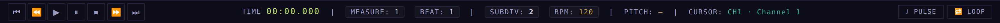
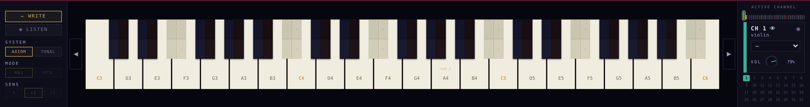
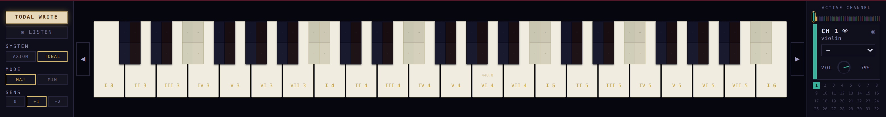

La guía de uso. The user guide.
Qué hace cada control de cada app, pensado para un músico. Crece app por app, a medida que crece la suite: Console, y ahora el Coach. What each control of each app does, written for a musician. It grows app by app, as the suite grows: Console, and now the Coach.
La mesa de mezcla. The mixing desk.
El equilibrio entre los instrumentos de la partitura. No suena por sí misma: refleja los canales del Score y actúa sobre el audio del Cosmic Keyboard, el único motor de sonido. The balance between the score's instruments. It makes no sound of its own: it mirrors the Score's channels and acts on the audio of the Cosmic Keyboard, the only sound engine.
El canal (tira)The channel (strip)
Cada instrumento es una tira: punto y franja con el color del canal (brillan cuando está activo), selector de instrumento sincronizado con el Score, medidor en vivo, fader de volumen con dB, y M (mute) / S (solo). Los canales sin uso se ven atenuados.Each instrument is a strip: dot and stripe in the channel's colour (they glow when active), an instrument selector synced with the Score, a live meter, a volume fader with dB, and M (mute) / S (solo). Unused channels are dimmed.
PAN — posiciónPAN — position
El knob ubica al instrumento frente a los parlantes. El LED es rojo hacia la izquierda y verde hacia la derecha, como las luces de un avión. C = centro.The knob places the instrument in front of the speakers. The LED is red toward the left and green toward the right, like an aircraft's lights. C = centre.
EFFECTS/CHEFFECTS/CH
Cuatro efectos por canal en una grilla 2×2: AGÓG (agógica), ASYM (asimetría), PRES (presencia del ataque) y ART (articulación). Cada uno con knob y botón con luz; clic = bypass.Four per-channel effects in a 2×2 grid: AGOG (agogics), ASYM (asymmetry), PRES (attack presence) and ART (articulation). Each with a knob and a lit button; click = bypass.
El masterThe master
Columna fija a la derecha, siempre a la vista: la salida «Stereo Out». L/R es el balance de parlantes de toda la suite (el mismo BAL del Keyboard); el fader oro es el volumen maestro (el mismo VOL); meters L y R y MUTE general.Fixed column on the right, always in view: the “Stereo Out”. L/R is the speaker balance of the whole suite (same as the Keyboard's BAL); the gold fader is the master volume (same as VOL); L and R meters and a master MUTE.
El transporteThe transport
▶ ⏸ ⏹ controlan el Score a distancia; TIME muestra la posición, con Measure/Beat/SubDiv y BPM/Pitch de la obra. Los botones de salto aún no operan por sync.▶ ⏸ ⏹ control the Score remotely; TIME shows the position, with Measure/Beat/SubDiv and the piece's BPM/Pitch. The seek buttons do not operate over sync yet.
Luz, temas y navegaciónLight, themes & navigation
Sol/luna regula la luminosidad (doble clic = normal). Cuatro temas compartidos con toda la suite. Los botones ⊞ abren las otras apps, quedan encendidos mientras están abiertas y un clic las trae al frente.Sun/moon adjusts luminosity (double-click = normal). Four themes shared across the whole suite. The ⊞ buttons open the other apps, stay lit while they are open, and a click brings them to the front.
El banco de pruebas de timbre y registro. Su guía paso a paso («¿cómo se usa?») está en su página. The timbre & register test bench. Its step-by-step guide ("how to use it") lives on its page.
El asesor. The advisor.
Te acompaña mientras escribís, solo si vos querés. Habla en el momento justo, donde estás trabajando, y guarda la explicación larga para cuando la pidas. It joins you while you write — only if you want it to. It speaks at the right moment, right where you're working, and keeps the long explanation for when you ask.
La oreja 🎓The ear 🎓
Junto al título de cada app vive un 🎓. Un clic lo despierta (late suave en violeta: el coach escucha) o lo duerme — el estado es uno solo para toda la suite. Con clic derecho elegís qué coach te acompaña: hoy el Suite Coach; Salieri llegará con su propio carácter.Next to each app's title lives a 🎓. One click wakes it (it pulses softly in violet: the coach is listening) or puts it to sleep — one state for the whole suite. Right-click picks which coach joins you: today the Suite Coach; Salieri will arrive with his own character.
El mensajitoThe little message
Cuando pasa algo que vale la pena contar (por ejemplo, escribiste una nota adelantada y el Score completó el compás con silencios), aparece un mensaje compacto justo donde soltaste la nota. Se queda hasta que vos lo cierres: ✕, un clic afuera, o su 🎓 — que abre la minilección completa en la app del Coach.When something worth telling happens (say, you wrote a note past the start and the Score completed the measure with rests), a compact message appears right where you dropped the note. It stays until you close it: ✕, a click outside, or its 🎓 — which opens the full mini-lesson in the Coach app.
La app: tres pestañasThe app: three tabs
🎓 Coach: la bitácora de la sesión (lo que te fue diciendo, con hora) y las cartas de los coaches para elegir. 🎻 Orquestación: la biblioteca de instrumentos de la suite, con familias, rangos y regímenes. 📖 Aula: las minilecciones para leer con calma — crece con cada consejo nuevo.🎓 Coach: the session log (what it told you, with time) and the coach cards to choose from. 🎻 Orchestration: the suite's instrument library, with families, ranges and regimes. 📖 Classroom: the mini-lessons to read at ease — it grows with every new piece of advice.
El primer consejoThe first advice
«El compás siempre suma»: si tu nota entra en el beat 3, los beats anteriores se completan con silencios — el coach te muestra cuáles puso y por qué el silencio también se cuenta. Leelo entero en el Aula o en la lección del sitio."The measure always adds up": if your note enters on beat 3, the earlier beats are completed with rests — the coach shows you which ones it placed and why rests count too. Read it in full in the Classroom or in the site lesson.
El juego de composiciónThe composition game
En el Aula del Coach hay una carta por nivel. La abrís, te pregunta tu nombre una sola vez —después lo hereda cualquier ejercicio— y te entrega tu propio archivo. A partir de ahí escribís vos: el juego es componer una obra entera, de a una voz por vez.The Coach Classroom has one card per level. You open it, it asks your name once — every later exercise inherits it — and hands you your own file. From there you write: the game is composing a whole piece, one voice at a time.
Una etapa por vezOne stage at a time
La melodía de arriba es el modelo y está con candado: es la referencia, no se toca. Cuando completás las voces de la etapa, el Coach te lo dice y la obra crece sola con la parte siguiente. No hay que buscar nada en un menú.The melody on top is the model and it is locked: it is the reference, not for editing. When you complete the voices of a stage, the Coach tells you and the work grows into the next part by itself. Nothing to hunt for in a menu.
Lo que el Coach te avisaWhat the Coach flags
Mientras escribís melodías te avisa de los saltos difíciles —el tritono, la séptima, el salto grande que no se recupera— y de si la frase vuelve o no a la tónica. Desde los dúos en adelante mira además lo que pasa entre voces: quintas y octavas paralelas, cruces. Son avisos: nunca te impiden escribir.While you write melodies it flags the hard leaps — the tritone, the seventh, the wide leap left unrecovered — and whether the phrase returns to the tonic. From the duos on it also watches what happens between voices: parallel fifths and octaves, crossings. They are warnings: they never stop you writing.
Guardar y volverSaving and coming back
Tu progreso viaja dentro del archivo, así que guardás y seguís cuando quieras: al reabrirlo el Coach sabe en qué etapa estabas y no te vuelve a contar lo que ya escuchaste. En cada hito conviene un Guardar como — así te queda un punto de retorno de cada parte del viaje.Your progress travels inside the file, so you save and continue whenever you like: on reopening, the Coach knows which stage you were on and does not repeat what you already heard. At each milestone a Save as is worth it — it leaves you a return point for each part of the journey.
La estrellaThe star
Al cerrar la última etapa el Coach hace las cuentas de todo el viaje y te firma con una ★ al lado de tu nombre, en el propio archivo. Se acumula entre ejercicios.When the last stage closes, the Coach does the arithmetic of the whole journey and signs you with a ★ beside your name, inside the file itself. It accumulates across exercises.
Repetir un pasaje: el loop A–BRepeating a passage: the A–B loop
En la tira de compases, botón derecho sobre el compás donde querés que empiece → «▼A Loop Start», y otro sobre el final → «▼B Loop End». Cada extremo queda con su triángulo y una línea vertical de su color, y se arrastran. Desde ahí el pasaje se repite sin parar; el botón LOOP de la barra queda encendido en oro y lo apaga cuando quieras. «Clear Loop A + B» borra los dos. Sirve para dejar el acompañamiento girando y ensayar encima en el Keyboard, que además late el compás en su panel ♩ Pulse.On the measure strip, right-click the bar where it should start → "▼A Loop Start", and another on the end → "▼B Loop End". Each end gets its triangle and a vertical line in its colour, and both can be dragged. From there the passage repeats endlessly; the LOOP button in the toolbar stays lit in gold and switches it off whenever you want. "Clear Loop A + B" removes both. Use it to leave the accompaniment going round while you rehearse over it on the Keyboard — which also beats the bar in its ♩ Pulse panel.
Acercarse a un tramo: mapa y reglaZooming into a span: map and ruler
Con la obra entera, la tira de arriba es un mapa: 226 compases en un palmo, para ubicarte. Cuando querés trabajar un pasaje, botón derecho → «Zoom — 16 compases desde acá» o «Zoom — loop A–B»: la partitura se acerca al tramo y la tira se vuelve una regla alineada con el grabado, así cada número y cada marca caen sobre su barra de compás, y la regla te sigue si desplazás. «Ver la obra entera» vuelve al mapa y te devuelve el zoom que tenías.With the whole work in view, the strip on top is a map: 226 bars in a hand's width, to find your way. When you want to work a passage, right-click → "Zoom — 16 bars from here" or "Zoom — A–B loop": the score zooms into the span and the strip turns into a ruler aligned to the engraving, so every number and every mark falls on its barline, and the ruler follows you as you scroll. "Whole work" goes back to the map and gives you back the zoom you had.
Abrir un .mxl sin descomprimirloOpening a .mxl without unzipping it
El .mxl es el MusicXML comprimido: es lo que exportan Finale, MuseScore y Sibelius. Ahora el Score lo abre directo, con el mismo botón con el que abrías un .xml, sin descomprimirlo a mano. Mira el contenido del archivo y no su nombre, así que un .musicxml o un .xml que en realidad vengan comprimidos entran igual. Un dato del músico, no del Score: Finale v27.4 abre el .mxl sólo por File → Import → MusicXML; su File → Open lo rechaza con «Invalid file type», incluso los .mxl que exporta él mismo.A .mxl is compressed MusicXML: it is what Finale, MuseScore and Sibelius export. The Score now opens it directly, with the same button you used for a .xml, with no unzipping by hand. It looks at the file’s content, not its name, so a .musicxml or .xml that is in fact compressed gets in all the same. A musician’s fact, not the Score’s: Finale v27.4 opens a .mxl only through File → Import → MusicXML; its File → Open rejects it with "Invalid file type", even .mxl files Finale itself exported.
Los corchetes y las llaves viajan con la partituraBrackets and braces travel with the score
Al importar, los grupos de familia del archivo llegan dibujados —corchete, sub-corchete y llave—, con la barra de compás unida o cortada según lo que diga el archivo; un grupo anidado dentro de otro queda como sub-corchete, sin importar en qué orden lo haya escrito el programa que exportó. Y al exportar salen escritos igual: la ida y la vuelta están probadas. Lo que todavía no entra: el título, el subtítulo y el copyright de la página, las palabras de expresión que no van con un tempo (pizz., arco, grazioso, unis., colla parte…), la abreviatura del instrumento y el nombre del grupo.On import, the file’s family groups arrive drawn —bracket, sub-bracket and brace—, with the barline joined or cut as the file says; a group nested inside another ends up as a sub-bracket, whatever order the exporting program wrote it in. And on export they are written back out: the round trip is tested. What still does not come in: the page’s title, subtitle and copyright, expression words that do not go with a tempo (pizz., arco, grazioso, unis., colla parte…), the instrument’s short name and the group name.
El instrumento. The instrument.
El único motor de sonido de la suite: todo lo que suena, suena aquí. Treinta y cinco alturas por octava, afinación pitagórica pura, y una franja temperada en cada tecla para escuchar la diferencia. The suite's only sound engine: everything you hear, sounds here. Thirty-five pitches per octave, pure Pythagorean tuning, and a tempered strip on every key to hear the difference.
Tres maneras de tocarThree ways to play
Axiomatic: el sistema pitagórico puro — las teclas por su nombre. 12 TET: el teclado QWERTY toma la disposición clásica de piano y suena temperado sobre las franjas cian. Tonal: elegís tonalidad, alteración y modo, y el teclado del ordenador pasa a tocar por grados — quien no sabe piano compone correcto en cualquier tonalidad. Los grupos que no aplican se atenúan; se encienden al entrar en Tonal.Axiomatic: the pure Pythagorean system — keys by their names. 12 TET: the QWERTY keyboard takes the classic piano layout and sounds tempered on the cyan strips. Tonal: choose key, alteration and mode, and the computer keyboard plays by degree — you can compose correctly in any key without knowing the piano. Groups that don't apply are dimmed; they light up when you enter Tonal.
Acord Lab — oír acordes con el mouseChord Lab — hearing chords with the mouse
Tocás una nota con el clic izquierdo. El clic derecho sobre el teclado la deja sonando con su luz encendida (Sostén); cada nota nueva que tocás se va sumando, y así oís el acorde completo. Otro clic derecho apaga todo. Para escuchar acordes complejos sin tener que mantener varias teclas apretadas.You play a note with the left click. A right click on the keyboard leaves it ringing with its light on (Hold); each new note you play stacks on top, so you hear the whole chord. Another right click turns everything off. For hearing complex chords without holding several keys down.
La salida HiFiThe HiFi output
En la segunda línea, la cadena de salida: VOL (el maestro de la suite, el mismo de la Console) · REV (reverberación) · TONO (oscuro ↔ brillante — su luz es azul o amarilla, como una bandera) · CAL (calidez, saturación de armónicos consonantes) · BAL (tu posición frente a los parlantes). Cada perilla con su luz de color y doble clic para volver a lo neutro.On the second line, the output chain: VOL (the suite's master, same as the Console's) · REV (reverb) · TONE (dark ↔ bright — its light turns blue or yellow, like a flag) · CAL (warmth, consonant-harmonic saturation) · BAL (your position before the speakers). Every knob with its coloured light and double-click back to neutral.
El cofre de grabacionesThe recordings chest
⏺ graba lo que tocás — frecuencias exactas, sin MIDI ni cuantización. El botón «☰ recs» abre la lista: renombrar, ▶, exportar .mmf, cargar .mmf o .mid (el MIDI entra como capa temperada, en cian). El knob PLAYBACK TEMPO reproduce cualquier grabación de media a doble velocidad: grabá lento, escuchá a tempo. El transporte tiene ⏪ ⏸ ⏩: pausa donde estés y salta diez segundos atrás o adelante, con el reloj al milisegundo (00.00.000). Si saltás a otra danza, el teclado entra afinado en la tonalidad de ese tramo. Lo que acabás de grabar aparece arriba del cofre, con «keep in list» y «save as .mmf» al alcance. Y podés grabar con el Score sonando: la toma sale limpia, solo lo que tocaste vos.⏺ records what you play — exact frequencies, no MIDI, no quantization. The "☰ recs" button opens the list: rename, ▶, export .mmf, load .mmf or .mid (MIDI comes in as a tempered layer, in cyan). The PLAYBACK TEMPO knob plays any recording at half to double speed: record slowly, listen at tempo. The transport has ⏪ ⏸ ⏩: pause where you are and jump ten seconds back or forward, with the clock down to the millisecond (00.00.000). Jump into another dance and the keyboard enters tuned to that section's key. What you have just recorded appears at the top of the chest, with "keep in list" and "save as .mmf" within reach. And you can record while the Score plays: the take comes out clean, only what you played.
♩ Pulse — el metrónomo♩ Pulse — the metronome
El botón ♩ abre una consolita: luz que late, ▶, tap para marcarle el tempo, perilla de BPM, el menú clásico de Largo a Presto, y un click opcional con volumen y tono. Fijado con el ⊗ sigue sonando; sin fijar, cerrarlo lo detiene — nada queda sonando por olvido. Y late con la obra: tocando un mmf del cofre, o con el Score sonando —también dentro de un loop A–B—, la luz sigue el compás y el cartel muestra el tempo del tramo. La obra manda: cuando entra su pulso, el metrónomo libre se detiene solo.The ♩ button opens a small console: a beating light, ▶, tap to set the tempo, a BPM knob, the classical menu from Largo to Presto, and an optional click with volume and tone. Pinned with ⊗ it keeps going; unpinned, closing it stops it — nothing keeps sounding by mistake. And it beats with the music: playing an mmf from the chest, or with the Score playing — inside an A–B loop too — the light follows the bar and the readout shows the tempo of that section. The work leads: as its pulse comes in, the free metronome stops by itself.
La nota y el horizonteThe note and the horizon
Debajo del instrumento, el display muestra la nota y sus Hz exactos. A su lado, el horizonte artificial: línea al centro = axiomático; sube cuando la nota tira hacia arriba (sensible), baja cuando resuelve hacia abajo. A= ajusta la referencia (415–466 y fino) para toda la suite.Below the instrument, the display shows the note and its exact Hz. Beside it, the artificial horizon: line at centre = axiomatic; it rises when the note pulls upward (leading tone), falls when it resolves down. A= sets the reference (415–466 plus fine) for the whole suite.
Octavas y pánicoOctaves and panic
OCTAVE SHIFT en el pie (◀ ▶ o las flechas ← →) desliza la ventana de octavas — la mano no se mueve del teclado. En Tonal, ↑/↓ re-afinan la nota sostenida por apotome, en vivo. Escape corta todo el sonido.OCTAVE SHIFT at the foot (◀ ▶ or the ← → arrows) slides the octave window — your hand never leaves the keys. In Tonal, ↑/↓ re-tune the held note by an apotome, live. Escape cuts all sound.
Dos clavecines en el banco: qué cambia al tocarlosTwo harpsichords in the bank: what changes when you play them
En el selector de instrumento (Harp & Keyboards) hay dos clavecines nuevos: Harpsichord (Tonal) y Harpsichord (Well-tempered). Son el mismo instrumento —afinado de oído sobre las Sinfonías 9 y 11 de Bach— con una diferencia: el Tonal suena en la afinación de la casa (pitagórica por deletreo), el Well-tempered re-afina cada nota a Werckmeister III con La = 440 fijo; compará de oído, las quintas y terceras cambian de color. Respecto del piano: casi no hay dinámica por tecla (pp y ff apenas mueven el nivel; lo que respira con la fuerza es el «tac» de la mecánica), las notas sueltan un poco antes de la siguiente —el détaché barroco— salvo bajo ligado, ligadura o duración explícita, y dentro de un ligado la última nota se abandona sola, más corta y más leve. Suena más bajo que el piano a igual VOL: es su nivel real; subir el VOL es acercar el oído. Pendiente: registros (8'+8', 4', laúd) y resonancia simpática.The instrument selector (Harp & Keyboards) has two new harpsichords: Harpsichord (Tonal) and Harpsichord (Well-tempered). Same instrument —tuned by ear on Bach's Sinfonias 9 and 11— with one difference: the Tonal sounds in the house tuning (Pythagorean by spelling), the Well-tempered retunes every note to Werckmeister III with A = 440 fixed; compare by ear, fifths and thirds change colour. Versus the piano: almost no per-key dynamics (pp and ff barely move the level; what breathes with force is the mechanism's "tac"), notes release a little before the next one —Baroque détaché— except under a slur, a tie or an explicit length, and inside a slur the last note is abandoned by itself, shorter and lighter. It sounds softer than the piano at equal VOL: that is its real level; raising VOL is moving the ear closer. Pending: registers (8'+8', 4', lute) and sympathetic resonance.
El clavecín, cerrado: brillo arriba y un grave que no empujaThe harpsichord, closed: sparkle on top and a bass that does not push
Dos cosas cambiaron, y con eso el instrumento queda cerrado. La primera es el brillo del agudo: en el ataque, el grave amontona 77 parciales dentro de la banda de 3 a 8 kHz —de ahí la rugosidad, «el cajón de los cubiertos sobre una mesa»— y el Do5 pone diez, bien separados: lo mismo, arriba, se oye como brillo. Los dos clavecines suman ahora un golpe de brillo de frecuencia fija en el ataque (3,5 · 5,2 · 7 kHz), apenas insinuado en el grave y pleno en el agudo. La segunda es el balance: el instrumento salía plano —el mismo nivel en Do2, Do3, Do4 y Do5, cosa que ningún instrumento real hace—. El grave baja 3,9 dB en la nota más grave y 1,5 dB en el Do3; el agudo queda igual. No desaparece: se hace notar por duración, 22 segundos de cola contra 3,5 arriba. Y el ruido de la mecánica no bajó con él — el golpe de la tecla y el «tac» siguen donde estaban.Two things changed, and with them the instrument is closed. The first is the treble sparkle: at the attack, the bass crowds 77 partials into the 3 to 8 kHz band —hence the roughness, "a cutlery drawer landing on a table"— while C5 puts ten of them, well apart: the same thing, up there, is heard as sparkle. Both harpsichords now add a fixed-frequency sparkle hit at the attack (3.5 · 5.2 · 7 kHz), barely hinted at in the bass and full in the treble. The second is the balance: the instrument came out flat —the same level at C2, C3, C4 and C5, which no real instrument does—. The bass drops 3.9 dB at the lowest note and 1.5 dB at C3; the treble is untouched. It does not disappear: it makes itself felt through duration, 22 seconds of tail against 3.5 up top. And the mechanism noise did not go down with it — the key knock and the "tac" are where they were.
Arpa, guitarra y pizzicato ahora suenan pulsadosHarp, guitar and pizzicato now sound plucked
Los tres eran presets planos: el mismo color en todo el registro. Ahora están modelados por registro, como el piano y el clavecín, con cuatro anclas cada uno. El arpa: la cuerda grave vibra 17 segundos y la aguda medio segundo, la caja suena en sus frecuencias propias, y al arrancar hay golpe de tapa y un pequeño deslizamiento de afinación; no tiene apagador, así que la nota se deja vibrar hasta apagarse sola (l.v.) — el étouffé es una técnica y todavía no está. La guitarra: las cuerdas entorchadas y las lisas suenan distinto, y se oye el escalón al pasar a la 3ª; la cola va de 9,5 segundos abajo a 1,1 arriba, y también deja vibrar. El pizzicato, solo y de sección: el puente alto vacía la cuerda rápido —arriba la nota muere en 50 a 100 milisegundos— y el intérprete la apaga con la mano; la sección suena más blanda y algo menos junta, porque no todos pellizcan en el mismo instante. Y la dinámica cambia de ley: en la cuerda pulsada el color casi no se abre con la fuerza —eso lo fijan el dedo y el punto donde se pellizca—; lo que crece de pp a ff es el golpe y el ruido del contacto. Tocá fuerte y no se enciende el brillo como en el arco: se agranda el ataque.The three of them were flat presets: the same colour across the whole range. They are now modelled per register, like the piano and the harpsichord, with four anchors each. The harp: the low string rings for 17 seconds and the top one for half a second, the body sounds at its own frequencies, and at the start there is a soundboard thump and a small pitch glide; it has no damper, so the note is left to ring until it dies by itself (l.v.) — étouffé is a technique and it is not there yet. The guitar: wound and plain strings sound different, and you hear the step as you cross to the 3rd; the tail goes from 9.5 seconds at the bottom to 1.1 at the top, and it also lets the string ring. Pizzicato, solo and section: the high bridge empties the string fast —up top the note dies in 50 to 100 milliseconds— and the player damps it with the hand; the section sounds softer and slightly less together, because not everyone plucks at the same instant. And dynamics change law: on a plucked string the colour hardly opens with force —the finger and the plucking point set it—; what grows from pp to ff is the hit and the contact noise. Play hard and the brightness does not light up as with the bow: the attack gets bigger.
La tonalidad del Keyboard sigue a la piezaThe Keyboard's key follows the piece
Lo que el Score le manda al Keyboard es la armadura, no la tonalidad: fa menor le llega como La♭ y sol menor como Si♭ (misma armadura, otra tónica). La tonalidad real —tónica y modo— sólo existe si la obra trae ficha con su centro tonal declarado; con ficha, el badge del Keyboard dice «fa menor» y cambia solo al cruzar cada pieza del archivo. La ficha puede declarar ahora el compás en que arranca cada movimiento: antes ese dato salía únicamente de los rótulos de movimiento escritos en la partitura, así que una obra con los títulos puestos de otra manera se quedaba sin mapa y el Keyboard volvía a la armadura. Y si algún centro declarado no cae en ningún compás, se descarta el mapa entero y manda la armadura escrita (queda el aviso en la consola): un mapa a medias es peor que ninguno — pisaba toda la obra con la tonalidad del primer movimiento, 544 compases anunciados en Do mayor.What the Score sends the Keyboard is the key signature, not the key: F minor arrives as A♭ and G minor as B♭ (same signature, different tonic). The real key —tonic and mode— only exists if the work carries a sheet with its tonal centre declared; with the sheet, the Keyboard badge reads "F minor" and changes by itself as each piece of the file goes by. The sheet can now declare the bar each movement starts at: before, that came only from the movement labels written on the score, so a work whose titles were written another way was left without a map and the Keyboard fell back to the signature. And if any declared centre lands on no bar, the whole map is discarded and the written signature rules (the notice stays in the console): half a map is worse than none — it stamped the first movement's key over the entire work, 544 bars announced in C major.
⬤ wav — guardar lo que estás oyendo⬤ wav — saving what you are hearing
En la barra del grabador hay un botón ⬤ wav. Un clic empieza a capturar —el botón se pone rojo y va contando los segundos— y otro clic cierra la toma y te descarga el archivo, estéreo y en 24 bits. No es un render offline: graba en vivo lo que sale por el master, con el hilo de audio real, y por eso sirve para escuchar artefactos —un clic, un roce— que una mezcla ideal no tendría. La toma se engancha después del VOL, del tono, de la calidez, de la reverb y del balance: si el VOL está al 20%, el archivo sale al 20%. Es a propósito: se guarda lo que suena. El audio tiene que estar andando — tocá una nota antes de apretar.The recorder bar has a ⬤ wav button. One click starts capturing —the button turns red and counts the seconds— and another closes the take and downloads the file, stereo and 24-bit. It is not an offline render: it records live what leaves the master, on the real audio thread, and that is why it is good for hearing artefacts —a click, a scrape— that an ideal mix would never have. The take is tapped after VOL, tone, warmth, reverb and balance: if VOL is at 20%, the file comes out at 20%. On purpose: what is saved is what sounds. Audio must already be running — play a note before you press it.
El vibrato entra, respira y sigue al grupoThe vibrato enters, breathes and follows the group
En las cuerdas frotadas y en todo lo que se sostiene, el vibrato ya no nace pleno con la nota: entra después del ataque —el arco primero agarra la cuerda y recién entonces se mueve— y en una nota corta directamente no entra. Su velocidad acompaña al gesto en un recorrido corto (±12% del rate del preset), porque el ejecutante mueve mucho más la anchura que la velocidad. Y su anchura sigue la jerarquía del grupo barrado: más en las primeras notas que en las que siguen, igual que ya hacía la presión.On bowed strings and on everything that sustains, the vibrato no longer starts full with the note: it enters after the attack —the bow first grips the string and only then moves— and on a short note it does not enter at all. Its speed follows the gesture over a short range (±12% of the preset's rate), because a player moves the width far more than the speed. And its width follows the hierarchy of the beamed group: more on the first notes than on the ones that follow, just as pressure already did.
El arpa: la cuerda, la yema y la cajaThe harp: the string, the fingertip and the soundbox
Cinco retoques que se oyen. El glide de tensión del ataque —esa décima de segundo en que la cuerda tirada se asienta en su altura— ahora depende del material: el entorchado grave casi no cede, la tripa cede lo suyo y el nailon del agudo cede el doble. El roce del dedo al frenar la cuerda dura y pesa según el registro. El quiebre de tripa a nailon estaba una octava abajo, así que Mi4, Sol4 y La4 —que son de tripa— recibían valores de nailon: corregido. En f y ff el golpe abre más en el agudo en vez de menos: el techo bajo del agudo es del tono, no del transitorio, y el arpista que aprieta tiene que sonar más — es el arpa de Mahler. Y arriba, donde la cuerda muere en menos de medio segundo, queda sonando la resonancia de la caja después de ella: el sonido son dos cosas, el tirón y lo que zumba después.Five audible refinements. The attack's tension glide —that tenth of a second in which the plucked string settles onto its pitch— now depends on the material: the wound bass barely gives, gut gives its share, and the nylon of the treble gives twice as much. The finger's scrape as it stops the string lasts and weighs according to the register. The gut-to-nylon break sat an octave too low, so E4, G4 and A4 —which are gut— were being given nylon values: fixed. At f and ff the hit opens more in the treble instead of less: the treble's low ceiling belongs to the tone, not to the transient, and a harpist who presses has to sound stronger — this is Mahler's harp. And up there, where the string dies in under half a second, the soundbox resonance stays ringing after it: the sound is two things, the pull and what hums afterwards.
⊕ FX: reverb, eco y porta por canal, en vivo⊕ FX: reverb, echo and porta by channel, live
El botón ⊕ FX de la barra abre un popup por canal con cinco perillas —Reverb · Eco wet · Eco realim · Eco temp · Porta—, con el nombre del instrumento del canal y en el idioma del Coach. Afectan sólo lo que tocás en vivo. El Vibrato no está acá: es la sexta perilla del popup del Score, porque allí se escribe como un área de la obra y el vivo no tiene dónde guardarla.The toolbar's ⊕ FX button opens a per-channel popup with five knobs —Reverb · Echo wet · Echo fb · Echo time · Porta—, showing the channel's instrument name and in the Coach's language. They affect only what you play live. Vibrato is not here: it is the sixth knob of the Score's popup, because there it is written as an area of the piece and live playing has nowhere to keep it.
Los dos popups se reparten el trabajo: éste es del vivo y el del Score es del playback. Comparten la misma línea de eco y la misma reverb, pero cada nota lleva su envío consigo, así que subir el eco acá no moja la reproducción de una partitura ni al revés. El popup abre fijado (⊗) y se cierra con un clic en el candado; se arrastra por su encabezado y se le puede cambiar el ancho.The two popups split the work: this one is for live play and the Score's is for playback. They share the same echo line and the same reverb, but each note carries its own send, so raising the echo here does not wet a score's playback, nor the other way round. The popup opens pinned (⊗) and closes with a click on the lock; drag it by its header and its width can be changed.
La partitura. The score.
Escribís música por canales con el mini-keyboard en modo TODAL: tocás por grados de la tonalidad. No suena por sí mismo — el Keyboard genera el sonido. You write music by channels with the mini-keyboard in TODAL mode: you play by scale degrees. It makes no sound of its own — the Keyboard generates it.
Cómo se escribe una anacrusa ahoraHow upbeats are written now
La anacrusa ya no es una caja aparte: es el compás 0. Escribís en ella como en cualquier otro compás —varias figuras, ligaduras, copiar y pegar adentro— y suena cada nota en su lugar (antes, todo el contenido sonaba junto en el segundo 0). El .mmf no cambia.The upbeat is no longer a separate box: it is measure 0. You write into it like any other bar —several values, ties, copy and paste inside— and each note sounds in its place (before, the whole upbeat sounded together at second 0). The .mmf format is unchanged.
Delete & close gap ⇤Delete & close gap ⇤
En el popup «Select · Actions» hay una fila nueva: «Delete & close gap ⇤». Borra la selección y corre hacia atrás lo que sigue para cerrar el hueco —lo que cruce una barra se parte con ligadura, automático. Un solo Undo.The “Select · Actions” popup has a new row: “Delete & close gap ⇤”. It deletes the selection and shifts what follows backward to close the gap —anything left straddling a bar is split and tied, automatically. A single Undo.
Re-bar the musicRe-bar the music
En el popup TIME, junto a Apply to All Channels hay un botón nuevo: «Re-bar the music». Apply solo cambia la cifra escrita; Re-bar reacomoda toda la música a los compases nuevos (y, con UPBEAT prendido, manda a la anacrusa las negras que corresponda). Con cifra por tramo se niega y avisa.The TIME popup has a new button beside Apply to All Channels: “Re-bar the music”. Apply only changes the written figure; Re-bar reflows the whole piece into the new bars (and, with UPBEAT on, sends the right number of quarter notes to the upbeat). With a per-span time signature it refuses and warns.
El anchor ▲/▼ de los editoresThe ▲/▼ anchor on the editors
El anchor ▲/▼ que fija arriba/abajo del clic ahora también lo respetan los editores de nota y de marca (EXPR, DYN, Beam, Stem, Interp, tresillo, Hairpin, sección/repetición) y el panel CHANNELS, que ya no tapa la barra con la lista larga.The ▲/▼ anchor that pins a popup above or below the click is now respected by the note and mark editors too (EXPR, DYN, Beam, Stem, Interp, tuplet, Hairpin, section/repeat) and by the CHANNELS panel, which no longer covers the toolbar with a long list.
Abrir un archivo nuevo: load limpioOpening a new file: clean load
Abrir un .mmf nuevo ya no arrastra nada del anterior —ni notas, ni marcas, ni el Undo. (Bug cerrado: antes, un Undo justo después de abrir un archivo devolvía las notas del archivo previo.) Tus preferencias y el portapapeles sí se conservan.Opening a new .mmf no longer carries anything over from the previous one —no notes, no marks, no Undo history. (Bug closed: previously, an Undo right after opening a file brought back the previous file's notes.) Your preferences and the clipboard are still kept.
Modo Página: editar sobre la hojaPage mode: editing on the sheet
El botón PÁGINA de la barra cambia entre la tira continua y la vista de hoja: la partitura se ve como páginas A4 dentro de la misma ventana, con el mismo grabado de la impresión, pero editable encima. Un segundo selector elige la vista (Página entera · A lo ancho · Lado a lado). Sobre la hoja ya podés seleccionar una nota y poner ahí el cursor, seleccionar una marca (dinámica, expresión, articulación, tempo, agógica) para redimensionarla con los botones de zoom, o hacer clic en un vacío para ubicar el cursor (que se acomoda a la grilla). El clic derecho abre los mismos menús contextuales que en la tira (nota, ligado, ligadura, texto, marca, canal), y al pasar el mouse el puntero se vuelve una manito sobre lo clickeable. Al reproducir, la línea roja y las notas que suenan se encienden sobre la hoja. La hoja tiene su propio zoom y scroll (rueda; Mayús+rueda al costado; Ctrl+rueda zoom). Es reversible y no toca la tira. Todavía no: arrastrar notas ni escribir notas nuevas con el mouse sobre la hoja — para eso usá la tira o la banda.The PAGE button on the toolbar switches between the continuous strip and the sheet view: the score appears as A4 pages inside the same window, with the same engraving as the print, but editable on top. A second selector picks the view (Whole page · Fit width · Side by side). On the sheet you can already select a note and place the cursor there, select a mark (dynamic, expression, articulation, tempo, agogics) to resize it with the zoom buttons, or click an empty spot to place the cursor (which snaps to the grid). Right-click opens the same context menus as on the strip (note, tie, slur, text, mark, channel), and on hover the pointer turns into a hand over anything clickable. During playback, the red line and the sounding notes light up on the sheet. The sheet has its own zoom and scroll (wheel; Shift+wheel sideways; Ctrl+wheel zoom). It is reversible and leaves the strip untouched. Not yet: dragging notes or writing new notes with the mouse on the sheet — for that, use the strip or the band.
Modo Página: ajustes de hoja en la barraPage mode: sheet settings on the toolbar
En modo Página (el botón 📄 PAGE / ▦ SCROLL alterna hoja y tira), al lado del selector de vista (Full page · Fit width · Side by side) hay dos desplegables nuevos para ajustar la hoja en vivo, sin abrir el 🖨 PRINT VIEW. «Bars/system» fija cuántos compases por sistema (Auto, o 1 a 6) y «Staff space» el tamaño de la pauta (3 a 9 mm); la hoja se rearma al toque mientras los movés. Quedan sincronizados con el modal 🖨 PRINT, en los dos sentidos. Por defecto: Auto · Staff 5 mm.In Page mode (the 📄 PAGE / ▦ SCROLL button toggles sheet and strip), next to the view selector (Full page · Fit width · Side by side) there are two new drop-downs to adjust the sheet live, without opening 🖨 PRINT VIEW. “Bars/system” sets how many bars per system (Auto, or 1 to 6) and “Staff space” the staff size (3 to 9 mm); the sheet re-lays out at once as you move them. They stay in sync with the 🖨 PRINT modal, both ways. Default: Auto · Staff 5 mm.
Armadura por tramoKey changes by span
La armadura puede cambiar a mitad de la obra: en el popup KEY, «This Bar» despierta con la fila From M / To M — elegís la tonalidad y el tramo donde rige; lo de afuera restaura la anterior, y elegir la vigente retira el cambio. El grabado sigue la convención clásica: becuadros de cortesía al final del compás saliente, doble barra automática, la armadura nueva tras la barra y las notas después. El espacio se reserva solo.The key signature can change mid-piece: in the KEY popup, "This Bar" wakes up with the From M / To M row — pick the key and the span it governs; outside the span the previous signature returns, and picking the key already in force removes the change. Engraving follows the classic convention: courtesy naturals at the end of the outgoing bar, an automatic double barline, the new signature after the bar and the notes after it. Space is reserved automatically.
Voces que comparten pentagrama (Layers)Voices sharing one staff (Layers)
Un canal puede proyectarse sobre el pentagrama de otro: en el ☰ de CHANNELS, el desplegable Staff elige el anfitrión. El invitado no consume fila (piano = dos pentagramas con cada voz muteable) y sus plicas van opuestas. Para editar al invitado: clic derecho sobre el nombre del canal en el margen — cicla el canal activo de la fila y la etiqueta muestra a quién editás.A channel can render on another channel's staff: in the CHANNELS ☰ menu, the Staff drop-down picks the host. The guest takes no row of its own (piano = two staves, each voice mutable) and its stems go opposite. To edit the guest: right-click the channel name in the gutter — it cycles the row's active channel and the label shows who you edit.
El signo de octava (8va / 8vb / 15ma)The octave sign (8va / 8vb / 15ma)
El 8va es tinta, no música: las notas quedan guardadas a su altura real (playback, Coach y Keyboard no se enteran); el signo solo cambia dónde se escriben. Tres puertas: selección + O (cicla 8va → 15ma → fuera; Shift+O = 8vb/15mb), la fila OCTAVE del popup CLEF (From M / To M; «—» limpia el rango en todos los canales), y la línea misma: al pasar el mouse se ilumina en oro con manita — arrastrala con clic derecho para acomodarla en vertical (persiste), Supr la borra, y O la cicla sin seleccionar.The 8va is ink, not music: notes stay stored at their real pitch (playback, Coach and Keyboard never notice); the sign only shifts where they are written. Three doors: selection + O (cycles 8va → 15ma → off; Shift+O = 8vb/15mb), the CLEF popup's OCTAVE row (From M / To M; "—" clears the range in all channels), and the line itself: hovering lights it gold with a hand cursor — right-drag to place it vertically (persists), Supr deletes it, and O cycles it without selecting.
Cambiar la grafía sin cambiar el sonido (♯♭)Changing the spelling, not the sound (♯♭)
Los botones Acc del Note editor cambian la alteración pero no la letra: desde un Do llegás a Do♯ o Do♭, nunca a Si♯. Para eso está el botón ♯♭, al final de esa misma fila: recorre las grafías de un mismo sonido y corrige letra, alteración y octava a la vez — Do → Si♯ → Re𝄫 → Do. Ojo, que acá no es sólo ortografía: en pitagórico Si♯ está una coma arriba del Do, así que la nota cambia de altura al reescribirla, y es lo que corresponde.The Acc buttons in the Note editor change the accidental but not the letter: from a C you can reach C♯ or C♭, never B♯. That is what the ♯♭ button at the end of that row is for: it walks through the spellings of one sound, fixing letter, accidental and octave together — C → B♯ → D𝄫 → C. Note that this is not merely spelling: in Pythagorean tuning B♯ sits a comma above C, so respelling the note does change its pitch, as it should.
Mover una alteración (Acc↔)Moving an accidental (Acc↔)
El aire de las alteraciones en pasajes densos se calcula solo (la grilla reserva el ancho real de cada glifo). Para los choques que queden — un becuadro sobre un sostenido del mismo acorde — el Note editor tiene la fila Acc↔: ◀/▶ corren solo la alteración de la nota seleccionada (2px por toque, mantené apretado), ⟲ la devuelve. Es por nota, y el corrimiento viaja en el archivo.Accidentals' air in dense passages is computed automatically (the grid reserves each glyph's real width). For remaining collisions — a natural on top of a sharp in the same chord — the Note editor has the Acc↔ row: ◀/▶ move only the selected note's accidental (2px per tap, hold to repeat), ⟲ resets. It is per note, and the offset travels in the file.
La hoja declarativa: Gap en mm y PagesThe declarative sheet: Gap in mm and Pages
Cada dimensión de la hoja tiene su dueño: Staff mm es el tamaño de la música (sagrado — nunca se achica solo), Sys gap el aire entre sistemas en mm de papel (independiente del staff), Bars/system la densidad, y Pages el objetivo: declarás en cuántas páginas querés la obra y el paginador economiza solo (gap → respiro de páginas 2+ → cabecera, con pisos). Si el objetivo es imposible, el footer del modal informa el mínimo alcanzable — y lo aplica. La hoja además respeta tu maquetación (la distancia entre pentagramas que editaste viaja a la página) y podés entrar a la vista Página desde cualquier punto — el scroll se restaura al salir.Each dimension of the sheet has one owner: Staff mm is the size of the music (sacred — never auto-shrunk), Sys gap the air between systems in paper mm (independent of the staff), Bars/system the density, and Pages the goal: declare how many pages the piece should take and the paginator economizes by itself (gap → page-2+ breathing → title block, with floors). If the goal is impossible, the modal footer reports the achievable minimum — and applies it. The sheet also honors your layout (the staff distance you edited travels to the page) and you can enter Page view from anywhere — the scroll is restored on exit.
El teclado de la computadoraThe computer keyboard
En WRITE/TODAL escribís con el teclado: las letras tocan por grados de la tonalidad, el num pad elige la duración (1 = semifusa … 7 = redonda, el punto = puntillo), ↑/↓ suben o bajan una octava la nota seleccionada, ←/→ mueven el teclado, el num pad +/− ajusta el APO (afinación fina, ±2) y la fila 1–0 arma acordes. CapsLock entra y sale de TODAL. El mapa completo está en la cheat-sheet de atajos.In WRITE/TODAL you write with the keyboard: the letters play by scale degrees, the num pad picks the duration (1 = 64th … 7 = whole, the period = dot), ↑/↓ move the selected note an octave up or down, ←/→ move the keyboard, num pad +/− adjust the APO (fine tuning, ±2) and the 1–0 row builds chords. CapsLock enters and leaves TODAL. The full map is in the shortcuts cheat-sheet.
El Coach y el auto-completar del compásThe Coach and the bar auto-fill
Figura o puntillo que no entra: si intentás poner un puntillo —o escribir una figura— que no cabe en lo que queda del compás, el Coach te avisa (bilingüe, con el 🎓 prendido) y no lo deja desbordar. Para pasar la barra, escribís otra nota y la atás con ligadura. (El puntillo sobre una nota se pone con clic derecho → Dot.) Auto-completar el compás: si escribís una nota y después saltás al compás siguiente dejando el anterior a medias, el resto del compás anterior se completa solo con el o los silencio(s).A value or a dot that does not fit: if you try to add a dot — or write a value — that does not fit in what is left of the bar, the Coach warns you (bilingual, with the 🎓 on) and will not let it overflow. To cross the bar line, write another note and tie it. (The dot on a note is set with right-click → Dot.) Bar auto-fill: if you write a note and then jump to the next bar leaving the previous one half-done, the rest of that previous bar fills by itself with the rest(s).
La banda: escribir y editarThe band: write and edit
Una banda flotante lleva las figuras (duraciones, puntillo, grace notes, tuplets) y las arrastrás al pentagrama; al soltarlas quedan seleccionadas. Es también una mesa de edición: sobre la nota seleccionada aplicás articulaciones (staccato, acento, tenuto, marcato, fermata…) y dinámicas, además de ligaduras, plica y barra — sin abrir otros paneles.A floating band carries the note values (durations, dot, grace notes, tuplets) that you drag onto the staff; on drop they stay selected. It is also an editing desk: on the selected note you apply articulations (staccato, accent, tenuto, marcato, fermata…) and dynamics, plus slurs, stem and beam — without opening other panels.
La banda: mover y achicar notasThe band: moving and shrinking notes
Mover una nota agarrándola con la banda ya no suena (antes audicionaba); y si sacás el mouse del área, la nota se suelta sola: nada queda pegado al puntero. Adoptar el valor menor: arrastrá una figura de menor duración (por ejemplo una corchea) sobre una nota existente (por ejemplo una negra) y esa nota toma el valor menor; el hueco que se libera se completa solo con silencio(s), sin mover el resto del compás. También funciona con silencios. Legibilidad: los botones de la banda se ven más nítidos, y en los temas oscuros (dark / grey) el popup de la banda resalta con un halo de luz.Moving a note by grabbing it with the band no longer sounds (it used to audition); and if you take the mouse out of the area, the note drops by itself: nothing stays stuck to the pointer. Adopt the smaller value: drag a value of shorter duration (say an eighth) onto an existing note (say a quarter) and that note takes the smaller value; the freed gap fills by itself with rest(s), without moving the rest of the bar. It works with rests too. Legibility: the band's buttons look crisper, and in the dark themes (dark / grey) the band popup stands out with a halo of light.
Las ligaduras suenan y tienen direcciónSlurs sound, and they have direction
La ligadura ahora suena y lleva dirección: dibujada hacia adelante es un decrescendo; hacia atrás, sobre el compás previo, es un crescendo. El degradé teal→gold te lo muestra — el color pleno (teal) marca el ancla, donde el cuerpo y el brillo están plenos, y vira al oro hacia el extremo más tenue. Una ligadura larga florece desde casi nada.The slur now sounds and carries direction: drawn forward it is a decrescendo; backward, over the previous bar, a crescendo. The teal→gold gradient shows you — the full colour (teal) marks the anchor, where body and brightness are full, and turns to gold toward the softer end. A long slur blooms from almost nothing.
Pares ligados (nun ∩∪∩ · unu ∪∩∪): en el editor de la ligadura podés darle un pulso de a dos. Se sigue viendo como un arco normal, pero suena como pares ligados: la 1ª nota del par más marcada y la 2ª más liviana (nun arranca fuerte; unu arranca suave). La diferencia se oye sobre todo en el ataque — la nota fuerte conserva un toque de articulación y la débil entra ligada, lisa; además la débil suena un ~20% más suave. Anda con cualquier instrumento.Slurred pairs (nun ∩∪∩ · unu ∪∩∪): in the slur editor you can give it a two-by-two pulse. It still looks like an ordinary arc, but it sounds like slurred pairs: the 1st note of the pair more marked and the 2nd lighter (nun starts strong; unu starts soft). The difference is heard above all in the attack — the strong note keeps a touch of articulation and the weak one comes in slurred, smooth; the weak one is also about ~20% softer. It works with any instrument.
Ver la curva antes de oírla · Peak/Valley · Mirror · la respiraciónSee the curve before you hear it · Peak/Valley · Mirror · the breath
Tanto el editor de la ligadura como el del signo de nota muestran ahora un dibujo en vivo de la curva del gesto, entre dos líneas: Peak (lo más lleno) arriba y Valley (lo más tenue) abajo. El degradé va de teal (lleno) a oro (tenue), como en el pentagrama. Si la ligadura todavía no tiene Peak/Valley propios, la curva sale punteada con la etiqueta «auto»: te muestra la profundidad que el programa elige solo. La forma es una curva suave (un messa es una joroba redondeada, no un triángulo). Peak y Valley son relativos al matiz, no valores fijos: un > desde mf y un > desde ff no valen lo mismo — el matiz manda y el gesto nunca se va a un absoluto. La respiración: el tamaño del swell se mide por los segundos reales de la frase y por cuánto aire trae el matiz, así una ligadura corta y rápida no «bombea» y un mf en una frase larga queda pleno. El Mirror del editor de ligadura ahora también da vuelta la forma (florece ↔ decae, messa ↔ inverso), además del lado del arco y la altura.Both the slur editor and the note-sign editor now show a live drawing of the gesture's curve, between two lines: Peak (the fullest) on top and Valley (the faintest) at the bottom. The gradient runs from teal (full) to gold (faint), as on the staff. If the slur has no Peak/Valley of its own yet, the curve is drawn dashed with an “auto” label: it shows you the depth the program chooses by itself. The shape is a smooth curve (a messa is a rounded hump, not a triangle). Peak and Valley are relative to the dynamic, not fixed levels: a > from mf and a > from ff are not the same — the dynamic governs and the gesture never jumps to an absolute. The breath: the size of the swell is measured by the phrase's real seconds and by how much air the dynamic carries, so a short, fast slur does not “pump” and an mf over a long phrase stays full. The slur editor's Mirror now also flips the shape (bloom ↔ decay, messa ↔ inverse), on top of the bow side and the height.
El signo de nota (la capa intérprete)The note sign (the interpreter layer)
Expresión por nota, encima del matiz. En el Note editor, en la fila «Intp», elegís el signo: < florece, > decae, <> messa di voce, >º< inverso (forte → piano → crescendo, ideal para los metales) y º niente. Se arrastra para subirlo o bajarlo. Con clic derecho sobre el signo se abre el Interp Editor: Tamaño, y Valor — las dinámicas del gesto (Peak fuerte / Valley piano; por defecto f y p). La nota descansa en su propio matiz.Per-note expression, on top of the dynamic. In the Note editor, on the “Intp” row, you pick the sign: < blooms, > decays, <> messa di voce, >º< inverse (forte → piano → crescendo, ideal for brass) and º niente. Drag it to raise or lower it. Right-click the sign to open the Interp Editor: Size, and Value — the gesture's dynamics (Peak loud / Valley soft; f and p by default). The note rests at its own dynamic.
Editar un tresilloEdit a tuplet
Con clic derecho sobre el corchete del tresillo se abre su editor. Number On/Off muestra o esconde el numerito. Angle (◣ ↻ ◢) inclina el corchete; el número queda derecho. Size ya no agranda las notas: acorta o alarga el corchete (su largo). Move lo acomoda — el tirador ↕ lo sube y baja, el tirador ↔ lo corre de costado; también podés arrastrar el corchete directo sobre el pentagrama. Cuando las notas llevan barra, el corchete se apoya sobre la barra; sobre negras, blancas o silencios, sobre la cabeza.Right-click the tuplet bracket to open its editor. Number On/Off shows or hides the little number. Angle (◣ ↻ ◢) tilts the bracket; the number stays upright. Size no longer scales the notes: it shortens or lengthens the bracket (its length). Move places it — the ↕ handle raises and lowers it, the ↔ handle slides it sideways; you can also drag the bracket directly on the staff. When the notes are beamed the bracket rests on the beam; over quarters, halves or rests, on the note head.
Seleccionar todoSelect all
En el popup «Select · Actions» (clic derecho en el botón SELECT) hay dos filas nuevas arriba: «Select all in channel» selecciona todo el canal activo de punta a punta, y «Select all channels» selecciona toda la obra (todos los canales visibles). Hecha la selección, podés Copiar, Cortar, Transponer o Borrar todo de una vez.In the “Select · Actions” popup (right-click the SELECT button) there are two new rows on top: “Select all in channel” selects the whole active channel end to end, and “Select all channels” selects the whole piece (all visible channels). Once selected, Copy, Cut, Transpose or Clear it all at once.
Transponer la música a una tónicaTranspose music to key
Un botón nuevo «⇅ Transpose music to key» vive en el popup KEY (armadura), bajo la fila del scope. Abrís KEY, elegís la tónica destino (flechas + Major/Minor) y lo tocás: la música entera se mueve a esa tónica. Es una transposición real — se preservan los intervalos, no se reescribe solo la armadura. Respeta el scope del popup: All CH (todos los canales) o This CH (el canal del cursor).A new “⇅ Transpose music to key” button lives in the KEY popup, below the scope row. Open KEY, pick the target key (arrows + Major/Minor) and click it: the whole music moves to that tonic. A true transposition — intervals are preserved, not just a re-spelling of the key signature. It respects the popup scope: All CH (every channel) or This CH (the cursor's channel).
Score Info: autor y copyrightScore Info: author & copyright
La ficha de la obra (botón Score Info) suma dos campos: Autor y Copyright — que arranca en «© {año}» — junto a Título, Subtítulo y Compositor. Todo viaja en el .mmf: al importar una obra, la ficha se completa sola con lo que traía el archivo, así el título de impresión ya no aparece en blanco.The piece's card (Score Info button) gains two fields: Author and Copyright — which starts at “© {year}” — alongside Title, Subtitle and Composer. It all travels in the .mmf: when you import a piece, the card fills itself from what the file carried, so the print title no longer comes up blank.
GuardarSaving
El botón SAVE (o Ctrl/Cmd+S) guarda sobre el mismo .mmf de un clic; MENU FILES → EXPORT MMF saca una copia nueva.The SAVE button (or Ctrl/Cmd+S) writes back to the same .mmf in one click; MENU FILES → EXPORT MMF exports a fresh copy.
Encabezado de impresión (solo la hoja)Print header (page only)
En el modal 🖨 PRINT hay una fila «Print header · page only» para poner Título / Subtítulo / Compositor / © solo en la hoja impresa. Pisa el Score Info; si la dejás vacía, la impresión usa el Score Info. Abre precargada para que edites solo lo que cambia, y se guarda con el .mmf. Al lado, «T size» agranda el título impreso y «C size» el compositor.The 🖨 PRINT modal has a “Print header · page only” row to set Title / Subtitle / Composer / © for the printed sheet only. It overrides Score Info; leave it empty and the print uses Score Info. It opens preloaded so you edit just what changes, and it is saved with the .mmf. Beside it, “T size” enlarges the printed title and “C size” the composer.
Tamaño de las marcas (Size −/+)Mark size (Size −/+)
Con clic derecho sobre una dinámica, un tempo o un texto aparece la fila «Size» con − y + para cambiar el tamaño de la fuente de esa marca; con la marca seleccionada también sirven los botones de zoom +/−. Cada paso es chico; mantené apretado para repetir.Right-click a dynamic, a tempo or a text and a “Size” row appears with − and + to change that mark's font size; with the mark selected the zoom +/− buttons work too. Each step is small; press and hold to repeat.
El tempo: cifra y ubicaciónTempo: figure and placement
La cifra metronómica (♩=58) se imprime más chica que la palabra de tempo (Lent), como en la partitura clásica. El tempo se puede arrastrar en horizontal y en vertical para ubicarlo donde lo querés sobre el compás.The metronome figure (♩=58) prints smaller than the tempo word (Lent), as in classical engraving. The tempo can be dragged horizontally and vertically to place it wherever you want over the bar.
Agregar texto en la vista PáginaAdding text in Page view
Los textos —nombres de instrumento o indicaciones como «dolce»— ya se pueden agregar también en la vista Página, no solo en la tira. Hacé clic donde lo querés (ahí se planta el cursor), tocá el botón TEXT, escribí y dale Apply; después se puede arrastrar para ubicarlo.Texts — instrument names or directions like “dolce” — can now be added in Page view too, not only on the strip. Click where you want it (that drops the cursor), press the TEXT button, type and hit Apply; you can then drag it to place it.
La nota seleccionada no se imprimeThe selected note does not print
El recuadro cian de la nota seleccionada ya no aparece en la hoja impresa ni en el PDF: la selección es solo ayuda de edición en pantalla. La hoja sale limpia.The cyan box around the selected note no longer appears on the printed sheet or in the PDF: selection is only an on-screen editing aid. The sheet comes out clean.
Ajustes de la hoja impresaPrinted-sheet settings
El pie de la impresión va ahora en una sola línea (autor · ©). En el modal PRINT, «Bars/system» elige cuántos compases por sistema (Auto, o 1 a 6 — por defecto 4) y «Staff space» fija el tamaño del pentagrama, de 3 a 9 mm, en modo Auto.The print footer is now a single line (author · ©). In the PRINT modal, “Bars/system” chooses how many bars per system (Auto, or 1 to 6 — 4 by default) and “Staff space” sets the staff size, from 3 to 9 mm, in Auto mode.
Imprimir la parte de un instrumento (desde el Panel)Printing one instrument's part (from the Panel)
En el Panel (vista dividida) elegís los canales con los chips, y el botón 🖨 PRINT VIEW —antes «📄 PAGE»— abre la vista de impresión (el mismo modal que FILE → Print/PDF) mostrando solo esos canales: así imprimís la parte de un instrumento. Dentro del modal, el conmutador «Show» elige Full score (todos los canales visibles) o Selected CH (solo los que marcaste en el Panel). El campo «Part name» —con su caja de tamaño y su casilla «Part»— imprime una etiqueta arriba a la izquierda de la página 1; arranca en «Score» para la partitura entera o con el nombre del instrumento para una parte, y es editable. El Ctrl+rueda sobre la vista de impresión hace zoom solo de las hojas, no de la barra; vuelve a 100% al abrir o al cambiar de Vista.In the Panel (split view) you pick the channels with the chips, and the 🖨 PRINT VIEW button — formerly “📄 PAGE” — opens the print view (the same modal as FILE → Print/PDF) showing only those channels: that's how you print one instrument's part. Inside the modal, the “Show” toggle picks Full score (all visible channels) or Selected CH (only the ones you picked in the Panel). The “Part name” field — with its size box and a “Part” checkbox — prints a label at the top-left of page 1; it defaults to “Score” for the full score or the instrument name for a part, and is editable. Ctrl+wheel over the print view zooms only the sheets, not the toolbar; it resets to 100% on open or on a View change.
El Panel: seleccionar por área y desplazarThe Panel: select by area and pan
Sobre el Panel, Alt + arrastre dibuja un marquee y selecciona las notas por área → cajas doradas; esa selección suena con Play o Shift+Espacio, igual que en el canvas principal. Y el arrastre con el botón izquierdo (manito: cursor grab / grabbing) desplaza el Panel en los dos ejes — una alternativa a Shift+rueda.On the Panel, Alt + drag draws a marquee and selects notes by area → gold boxes; that selection sounds with Play or Shift+Space, just like on the main canvas. And a left-button drag (hand: grab / grabbing cursor) pans the Panel in both axes — an alternative to Shift+wheel.
Las articulaciones se leenArticulations you can read
Puntos, rayas y acentos pasan a un cuerpo de 56 (antes 30): la fuente de música dibuja sus signos para cuatro espacios de pentagrama y estábamos al 62 % de ese tamaño — en la hoja el punto del staccato quedaba en píxel y medio. Las marcas ya guardadas conservan su tamaño; el 56 lo estrenan las nuevas. Y seis signos que no dibujaban nada por faltar en la fuente embebida —el stress, el Ped y el ✻, las dos arcadas y la ondulada del tr— ahora aparecen.Dots, lines and accents move to a body of 56 (was 30): the music font designs its marks for four staff spaces and we were at 62 % of that — on the sheet the staccato dot came down to a pixel and a half. Marks already saved keep their size; 56 is for new ones. And six marks that drew nothing because they were missing from the embedded font —the stress, the Ped and the ✻, the two bow marks and the tr wiggle— now show up.
Separar las voces de una manoSplitting the voices of one hand
Para las dos voces de una misma mano: hacés visible el canal siguiente con su clave, lo dejás en fila propia y mudás las notas con Ctrl + arrastre —la nota, o toda la multi-selección, cae en el canal del pentagrama donde la soltás, con su figura, sus beams, sus notitas y sus articulaciones—. Después, botón derecho sobre el nombre del canal: Poner CHn sobre CHm los fusiona en un pentagrama y las plicas salen solas (arriba ↑, abajo ↓). El mismo menú tiene Separar las capas para editar un rato: es solo de vista, el archivo conserva la fusión.For two voices in one hand: make the next channel visible with its clef, leave it on its own row and move notes with Ctrl + drag —the note, or the whole multi-selection, lands in the channel of the staff you drop it on, with its value, beams, grace notes and articulations—. Then right-click the channel name: Put CHn on CHm merges them onto one staff and stems sort themselves out (upper ↑, lower ↓). The same menu has Unfold the layers to edit for a while: it is view only, the file keeps the merge.
La armadura sobre lo seleccionadoThe key over a selection
El popup KEY gana el scope Selection: con una selección cerrada, el cambio de armadura toma su rango de compases y al salir vuelve sola la armadura que regía, con doble barra en las dos fronteras. Si la selección arranca en el compás 1 se mueve la armadura de la obra — y así desaparece el becuadro de cortesía del principio, que no se podía borrar porque no es un objeto sino tinta del cambio.The KEY popup gains the Selection scope: with a closed selection, the key change takes its bar range and on leaving it the previous key returns by itself, with a double barline at both borders. If the selection starts at bar 1 the key of the work is moved — which is how the courtesy natural at the start disappears, the one you could not delete because it is not an object but ink of the change.
Las marcas caen donde tienen que caerMarks land where they belong
Las siete marcas que van pegadas a la cabeza —staccato, staccatissimo, tenuto, portato, acento, marcato y stress— caen ahora en el centro del espacio de al lado, arriba o abajo por igual: con la plica hacia arriba el punto ya no pisa la cabeza. La marca tampoco se corre de costado al agrandarla —su lugar es fijo respecto de la cabeza—, y varias marcas sobre una misma nota se apilan a un espacio de pentagrama. Cada tipo estrena su tamaño: trino, grupeto y mordente 36 · Ped. y ✻ 30 · tenuto 48 · cesura 42 · arpegio 18 · pizz. y arco 24 · el resto 56 (las marcas ya guardadas conservan el suyo).The seven marks that hug the notehead —staccato, staccatissimo, tenuto, portato, accent, marcato and stress— now land in the middle of the neighbouring space, above and below alike: with the stem up the dot no longer sits on the head. A mark no longer drifts sideways when you enlarge it —its place is fixed relative to the head— and several marks on one note stack a staff space apart. Each type gets its own size: trill, turn and mordent 36 · Ped. and ✻ 30 · tenuto 48 · caesura 42 · arpeggio 18 · pizz. and arco 24 · the rest 56 (marks already saved keep theirs).
Tenuto, trémolo y arcadasTenuto, tremolo and bow marks
Tres marcas dejaron de estorbar. El tenuto se centra sobre la plica, apenas corrido hacia el lado contrario al que sale. El trémolo se dibuja sobre la plica, a media altura, en vez de quedar encima de la cabeza. Y las arcadas (⊓ arco abajo, V arco arriba) van siempre arriba del pentagrama, a medio espacio de la quinta línea; si la nota trepa más alto, se levantan para despejarla —cabeza o punta de plica—.Three marks stopped getting in the way. The tenuto is centred on the stem, just offset to the side opposite the one it leaves from. The tremolo is drawn on the stem, at mid height, instead of landing on the head. And the bow marks (⊓ down-bow, V up-bow) always go above the staff, half a space from the top line; if the note climbs higher they rise to clear it —head or stem tip—.
El arpegio ahora es un signoThe arpeggio is now a sign
Donde antes iba la palabra arp. en itálica va ahora el signo de verdad: la cadena de ondas vertical a la izquierda del acorde, de la nota más grave a la más aguda, que crece con el acorde. Para el arpegio de piano o de arpa que cruza las dos manos: botón derecho sobre el signo → Extender a CHn (pentagrama de arriba), y Cortar en este pentagrama para volverlo atrás. La opción solo aparece si arriba hay una nota en el mismo tiempo.Where the italic word arp. used to be there is now the real sign: the vertical chain of wiggles to the left of the chord, from the lowest note to the highest, growing with the chord. For a piano or harp arpeggio crossing both hands: right-click the sign → Extend to CHn (staff above), and Cut at this staff to take it back. The option only appears when there is a note above at the same beat.
Las ligaduras ya no se desconectanSlurs and ties no longer come undone
Había dos maneras de romper una ligadura sin darse cuenta: borrar una nota desde el Note editor y mudar notas de canal con Ctrl + arrastre. Las dos están arregladas, y el borrar del Note editor entra en el deshacer. Al abrir un archivo, además, una ligadura de prolongación cuyo destino ya no existe —o es un silencio, o cambió de altura— se suelta sola, con aviso en la consola: nada de curvas colgando de la nada.There were two ways to break a slur without noticing: deleting a note from the Note editor and moving notes to another channel with Ctrl + drag. Both are fixed, and the Note editor's delete now enters the undo. On opening a file, a tie whose target no longer exists —or is a rest, or changed pitch— releases itself, with a console warning: no curves left hanging from nothing.
El ligado pasa por encima de todoThe slur clears everything under it
El ligado de expresión se levanta hasta despejar todo lo que pasa debajo —cabezas, alteraciones y puntas de plica, o sea la barra— con cinco píxeles de aire y sin subir más de cuatro espacios. El trazo dejó de ser una línea pareja: es una curva rellena, fina en las puntas y gruesa al medio. Y el clic cae donde la ves: dibujo y zona sensible salen de la misma cuenta.The expression slur lifts until it clears everything passing underneath —heads, accidentals and stem tips, that is, the beam— with five pixels of air and never rising more than four spaces. The stroke is no longer an even line: it is a filled curve, thin at the tips and thick in the middle. And the click lands where you see it: drawing and sensitive zone come out of the same computation.
Doble clic = el acorde enteroDouble-click = the whole chord
Atajo nuevo: doble clic sobre una cabeza selecciona el acorde entero —todas las notas de ese canal en ese tiempo—, en la misma multi-selección que arma el Alt + clic. Después vale todo lo de siempre: articular el acorde de una, escucharlo con Shift + Espacio, transponerlo, borrarlo. Antes había que ir con Alt + clic nota por nota.New shortcut: double-click a notehead to select the whole chord —every note of that channel at that beat— into the same multi-selection Alt + click builds. Everything you already do applies: articulate the chord at once, hear it with Shift + Space, transpose it, delete it. Before, you had to Alt + click note by note.
Dos voces en un pentagrama: segundas y plicasTwo voices on one staff: seconds and stems
Cuando dos voces del mismo pentagrama caen a distancia de segunda —o al unísono—, las cabezas no pueden compartir el mismo lugar: una se corre. Quién se corre, y hacia qué lado, no lo decide la altura: lo deciden las plicas. El hilo para acordarse: la línea de plica siempre cae entre las dos cabezas; lo que cambia es cuántas líneas hay.When two voices on the same staff fall a second apart —or on a unison— the heads cannot share the same place: one of them shifts. Which one shifts, and to which side, is not decided by pitch: it is decided by the stems. The thread to remember: the stem line always falls between the two heads; what changes is how many lines there are.
El lado. Si las dos voces llevan la plica para lados opuestos, las plicas se alinean y la cabeza de la voz de plica abajo queda a la derecha. Si las dos llevan la plica para el mismo lado no hay dos plicas que alinear: las voces se leen como un acorde y vale su regla —con plica abajo la nota grave va a la izquierda; con plica arriba, la aguda a la derecha—. Un acorde nunca se parte: si a la voz que le tocaría moverse es un acorde y la otra es una nota suelta, se mueve la suelta, y el lado lo siguen dictando las plicas.The side. If the two voices carry their stems to opposite sides, the stems align and the head of the down-stemmed voice goes to the right. If both carry the stem to the same side there are no two stems to align: the voices read as one chord and the chord rule applies —with the stem down the lower note goes to the left; with the stem up, the upper one to the right—. A chord is never split: if the voice that would have to move is a chord and the other one is a single note, the single note moves, and the side is still dictated by the stems.
Qué se mueve. Con una sola línea de plica se corre solo la cabeza y la plica se queda donde estaba: se ve una sola plica entre las dos cabezas. Con dos líneas viaja la nota entera, plica y barra incluidas. El unísono entra por la misma regla: las dos cabezas quedan lado a lado en vez de encimadas. Y el compás reserva el ancho de la que se corrió, así que la nota siguiente no queda amontonada. Al separar las capas para editar, las plicas ya no se reacomodan: el anfitrión sigue ↑ y el invitado ↓, como se van a ver al reunirlas.What moves. With a single stem line only the head shifts and the stem stays where it was: you see one stem between the two heads. With two lines the whole note travels, stem and beam included. The unison goes by the same rule: the two heads end up side by side instead of stacked on top of each other. And the bar reserves the width of whatever moved, so the next note is not crowded. When you unfold the layers to edit, stems no longer rearrange: the host stays ↑ and the guest ↓, the way they will look once merged again.
El nudge se lleva la plica · Deshacer llega más lejosThe nudge takes the stem · Undo reaches further
Al correr la tinta de una nota con Shift + arrastre, la plica se quedaba plantada en su lugar viejo; ahora sigue a la cabeza, con la barra. Y el deshacer alcanza siete cosas que antes se le escapaban: la armadura (la de la obra y la de cada tramo), la alteración, los signos de octava, las claves por tramo, el nombre del canal, la ficha de la obra y la fusión de capas. Poner un signo de octava y cambiar la armadura ahora también toman foto —la armadura, solo cuando el cambio es tuyo, no cuando llega sincronizado de otra app—.When you shifted a note's ink with Shift + drag, the stem stayed planted where it was; it now follows the head, beam included. And undo reaches seven things that used to escape it: the key signature (the work's and each span's), the alteration, the octave signs, the per-span clefs, the channel name, the work's card and the layer merge. Placing an octave sign and changing the key now take a snapshot too —the key only when the change is yours, not when it arrives synced from another app—.
La anacrusa suena como anacrusaThe upbeat sounds like an upbeat
La nota de anacrusa entraba con el peso de un tiempo fuerte: sonaba en su sitio, pero con el carácter equivocado. Ahora entra como se toca —un poco más corta, con el ataque más suave y sin golpe— y el metrónomo de la suite ya no marca fuerte sobre ella: el acento cae en el primer tiempo del compás 1, que es donde va. Además corre a su propio tempo, tomado del compás al que empuja y no del número que traiga la cabecera del archivo, así que un import con la cabecera desajustada ya no la dispara. El volumen no se toca: una anacrusa tiene menos ataque, no menos presencia.The upbeat note used to come in with the weight of a downbeat: it landed in the right place, but with the wrong character. Now it enters the way it is played —a little shorter, with a gentler attack and no punch— and the suite's metronome no longer marks it strong: the accent falls on beat 1 of bar 1, where it belongs. It also runs at its own tempo, taken from the bar it pushes into rather than from whatever number the file header carries, so an import with a mismatched header no longer makes it rush. Loudness is untouched: an upbeat has less attack, not less presence.
SUBDIV sale de la música · el aviso al abrirSUBDIV comes from the music · the notice on opening
SUBDIV es el paso del cursor —dónde cae el clic, cuánto se mueve una selección, cuánto se estira un regulador—: no mueve ninguna nota escrita. Salía de la cifra de compás, que no sabe nada de la música: en un 2/4 daba corchea aunque la obra estuviera en fusas, y el cursor no podía pararse donde había notas. Ahora se deduce de las notas del archivo, y se sigue pudiendo cambiar a mano. Y al cargar, el Score te avisa qué encontró fuera de grilla —notas que no caen ni en la fusa ni en la división de tresillo, y marcas que quedaron sin nota debajo—. El aviso informa; no corrige, y lo dice: no se movió nada.SUBDIV is the cursor step —where a click lands, how far a selection moves, how far a hairpin stretches—: it moves no written note. It used to come from the time signature, which knows nothing about the music: in 2/4 it gave an eighth even when the piece was in thirty-seconds, and the cursor could not stop where the notes were. It is now deduced from the file's notes, and you can still change it by hand. And on loading, the Score tells you what it found off the grid —notes falling neither on the thirty-second nor on the triplet division, and marks left with no note under them—. The notice reports; it does not correct, and it says so: nothing was moved.
Convertir notas en tresillo o quintillo · la fila RatioTurning notes into a triplet or quintuplet · the Ratio row
El popup TUPLET ya no sirve solo para armar antes de escribir: APPLY TO SELECTION convierte en grupo las notas que ya están. La razón sale de la cuenta —5 notas dan 5:4, 7 dan 7:4, 3 dan 3:2, 9 dan 9:8—. Sin selección agrupa el tiempo donde está el cursor, y si ahí ya había un grupo entra entero y se absorbe: cinco notas escritas como dos sueltas más un tresillo quedan como un solo quintillo. Con clic derecho sobre el corchete se abre el editor del grupo, que ahora tiene una fila Ratio (actual : normal) para cambiarle la razón a un grupo existente —la manera de arreglar un tresillo que el import dejó mal—. Las marcas viajan con sus notas y el deshacer devuelve lo que había. Dentro de un grupo, las notas de igual figura se dibujan a distancias iguales aunque una nota de la otra voz caiga en el medio, y el compás no cambia de ancho.The TUPLET popup is no longer just for arming before writing: APPLY TO SELECTION turns already-written notes into a group. The ratio follows the count —5 notes give 5:4, 7 give 7:4, 3 give 3:2, 9 give 9:8—. With nothing selected it groups the beat under the cursor, and if that beat already held a group it comes in whole and is absorbed: five notes written as two loose ones plus a triplet become a single quintuplet. Right-click the bracket to open the group's editor, which now has a Ratio row (actual : normal) to change an existing group's ratio —the way to fix a tuplet the import got wrong—. Marks travel with their notes and undo restores what was there. Inside a group, notes of equal value are drawn at equal distances even when a note from the other voice falls in the middle, and the bar does not change width.
La articulación a toda la selección · el badge 1 note / selectionThe articulation over a whole selection · the 1 note / selection badge
Con varias notas seleccionadas —Alt + arrastre, doble clic sobre un acorde, o la región SELECT—, la carta de articulación manda un estado, no un interruptor por nota: encendida pone la marca en TODAS (sin duplicar las que ya la tenían) y apagada la saca de TODAS. Antes, con tres notas con staccato y dos sin, un clic dejaba tres sin y dos con: la selección se invertía en vez de cambiar de estado. Sin selección, sobre la nota del cursor, la carta sigue siendo un interruptor. Y la barra de arriba del popup cuenta ahora lo que de verdad va a recibir la marca, pintada del color del canal; el badge es además un interruptor: un clic fuerza «1 note» y otro vuelve a «selection».With several notes selected —Alt + drag, double-click on a chord, or the SELECT region— the articulation card sets a state, not a per-note switch: on, it places the mark on ALL of them (without duplicating those that already had it); off, it removes it from ALL of them. Before, with three notes carrying a staccato and two without, one click left three without and two with: the selection was inverted instead of changed. With nothing selected, on the note under the cursor, the card is still a toggle. And the bar at the top of the popup now counts what will really receive the mark, painted in the channel's colour; the badge is also a switch: one click forces "1 note", another goes back to "selection".
Atar varias notas de una vez · el arco del tieTying several notes at once · the tie's arc
Tie ← prev y Tie → next ahora trabajan sobre la selección: con notas marcadas con Alt + arrastre, el botón ata TODAS las que puedan —las cuatro notas de un acorde quedan ligadas al acorde siguiente en un solo gesto—. Sobre una selección la carta es un estado, no un interruptor por nota: encendida ata todas las que pueden, apagada las suelta todas; sin selección, sobre la nota del cursor, sigue siendo un interruptor. Una nota solo se ata a otra de la misma altura exacta, la más cercana de su canal, y las que no encuentran a quién atarse te lo dicen: el aviso cuenta cuántas quedaron sin destino. Antes el fallo era mudo. Y el tie entra en el deshacer: un Ctrl + Z por gesto.Tie ← prev and Tie → next now work on the selection: with notes marked by Alt + drag, the button ties ALL the ones that can be tied —the four notes of a chord end up tied to the next chord in a single gesture—. Over a selection the card is a state, not a per-note switch: on, it ties everything that can be tied; off, it releases them all; with nothing selected, on the note under the cursor, it is still a toggle. A note only ties to another of the exact same pitch, the closest one in its channel, and the ones that find nobody to tie to now say so: the notice counts how many were left without a destination. The failure used to be silent. And the tie enters the undo: one Ctrl + Z per gesture.
El arco también aprendió que hay acordes: en un acorde las ligaduras de prolongación se abren hacia afuera —la más aguda por arriba, la más grave por abajo, las del medio hacia el lado más cercano—. Antes la dirección salía solo de la altura contra el centro del pentagrama, y dos notas del mismo acorde por encima del centro salían las dos para el mismo lado. Sin acorde, si el pentagrama lleva dos voces, el arco sigue a la voz, igual que las plicas. El ↕ Flip del editor del tie manda por encima de todo eso: lo que elijas a mano gana y se guarda en el archivo.The arc has learnt about chords too: inside a chord the ties open outwards —the highest one above, the lowest one below, the middle ones toward the nearest side—. The direction used to come from the pitch against the staff centre alone, and two notes of the same chord above the centre both went to the same side. With no chord, if the staff carries two voices, the arc follows the voice, just as the stems do. The Tie editor's ↕ Flip overrides all of that: whatever you pick by hand wins, and it is saved in the file.
Ordenar los popups: Free · Cascade · Grouped · StackArranging the popups: Free · Cascade · Grouped · Stack
El popup TOOLS estrena una fila, View popups, con cuatro estados que se excluyen: ◇ Free deja cada popup donde vos lo dejaste; ⧉ Cascade los escalona como una escalera, de a 28 px, y abre una columna nueva cuando la escalera llega al piso; ▦ Grouped los pone lado a lado, en filas; ▣ Stack los manda a todos al mismo sitio —se ve el de adelante y los demás quedan detrás—. Es un modo, no un botón: mientras está activo, cualquier popup que abras desde la barra nace ya en la disposición, sin que tengas que reordenar de nuevo. Reset positions vuelve a Free y le devuelve a cada popup el tamaño que tenía antes de entrar.The TOOLS popup gains a new row, View popups, with four mutually exclusive states: ◇ Free leaves every popup where you left it; ⧉ Cascade steps them like a staircase, 28 px at a time, opening a new column when the staircase reaches the floor; ▦ Grouped places them side by side, in rows; ▣ Stack sends them all to the same spot —you see the front one and the rest stay behind—. It is a mode, not a button: while it is on, any popup you open from the toolbar is born already in the arrangement, with no need to re-arrange. Reset positions goes back to Free and gives every popup back the size it had before entering.
El mazo: todas las cartas en un mismo sitio (Stack)The deck: every card in one place (Stack)
En Stack los popups se vuelven un mazo de cartas y el TOOLS se queda al costado haciendo de índice: la flecha ↑ de cada fila de su lista trae adelante el popup que necesitás. Las cartas van pegadas —arrastrás una y se mueven todas; el TOOLS no viaja con ellas, ese se mueve solo—. El mazo recuerda dónde lo dejaste: si salís del modo y volvés, aparece en el mismo lugar. El pin te dice quién está adentro: oro es un pin normal, rosa es un pin además enganchado al mazo. Los tamaños: cada popup toma su ancho mínimo, y los más alargados —Articulation y Channels— se quedan en 450 px de alto y scrollean adentro; el resto conserva su alto natural.In Stack the popups become a deck of cards and TOOLS stays at the side as an index: the ↑ arrow on each row of its list brings the popup you need to the front. The cards are glued —you drag one and they all move; TOOLS does not travel with them, it moves on its own—. The deck remembers where you left it: leave the mode and come back, and it shows up in the same place. The pin tells you who is inside: gold is an ordinary pin, rose is a pin that is also hooked to the deck. Sizes: each popup takes its minimum width, and the tallest ones —Articulation and Channels— settle at 450 px high and scroll inside; the rest keep their natural height.
Arriba o abajo: ⬇ Top y ⬆ BottomTop or bottom: ⬇ Top and ⬆ Bottom
⬇ Top y ⬆ Bottom eligen si los popups se apoyan arriba o abajo, y ahora la elección mueve también los que ya están abiertos en vez de valer solo para los próximos. Además se recuerda entre sesiones: si cerrás el Score con ⬆ Bottom, la próxima vez arranca así. Con ⬆ Bottom los popups se apoyan sobre el mini-teclado si está abierto y, si no está, sobre la barra de transporte (antes, con el mini-teclado cerrado, ⬆ Bottom se comportaba como ⬇ Top). Una salvedad honesta: un popup más alto que el espacio disponible no puede apoyarse abajo —no entra— y se queda arriba.⬇ Top and ⬆ Bottom choose whether the popups rest at the top or at the bottom, and the choice now moves the ones already open as well, instead of applying only to the next ones. It is also remembered between sessions: close the Score with ⬆ Bottom and next time it starts that way. With ⬆ Bottom the popups rest on the mini-keyboard when it is open and, when it is not, on the transport bar (before, with the mini-keyboard closed, ⬆ Bottom behaved like ⬇ Top). One honest caveat: a popup taller than the available space cannot rest at the bottom —it does not fit— and stays at the top.
Tres popups más que se pueden agrandarThree more popups you can resize
Duration, Time Signature y Key Signature se suman a los popups que se agarran de la esquina inferior derecha para agrandarlos o achicarlos, y que scrollean cuando el contenido no entra. Eran los tres últimos de la barra con la caja fija.Duration, Time Signature and Key Signature join the popups you grab by the bottom-right corner to make bigger or smaller, and that scroll when the content does not fit. They were the last three on the toolbar with a fixed box.
Escribir cresc. o dim. con palabrasWriting cresc. or dim. with words
Podés escribir el crescendo con la palabra en vez de la horquilla: cresc., dim., crescendo, diminuendo, y también el término en el idioma que uses (calando, morendo, en diminuant, abnehmend…). La palabra se comporta exactamente igual que la horquilla: tiene principio y fin, se le arrastran los dos extremos y suena igual. En la partitura se ve la palabra en itálica y una línea de puntos hasta donde termina el tramo, que es como se imprime. El Score entiende solo si la palabra sube o baja mirando su raíz; si ponés los valores From / To a mano, mandan los tuyos.You can write a crescendo with the word instead of the wedge: cresc., dim., crescendo, diminuendo, and also the term in whatever language you use (calando, morendo, en diminuant, abnehmend…). The word behaves exactly like the wedge: it has a start and an end, both ends can be dragged, and it plays the same. On the page you see the word in italics and a dotted line to where the span ends, which is how it is printed. The Score works out on its own whether the word rises or falls by looking at its root; if you set the From / To values by hand, yours win.
El menú de una dinámica ahora es uno soloA dynamic's menu is now a single one
Antes, el botón derecho sobre una dinámica abría dos ventanitas. Ahora abre una, con todo adentro: el tamaño de la letra —escribible, no solo con flechas— y el tramo, con el compás final escribible y botones − / + para estirarlo o acortarlo. Arriba del menú dice a qué se le va a aplicar el cambio: la marca, el canal y el tramo (cresc. molto · CH2 · M29 → M33). No hay que adivinar el alcance.Right-clicking a dynamic used to open two little windows. Now it opens one, with everything inside: the letter size —typed, not only by arrows— and the span, with a typed end bar and − / + buttons to stretch or shorten it. The top of the menu states what the change will apply to: the mark, the channel and the span (cresc. molto · CH2 · M29 → M33). No guessing about scope.
Las ligaduras ya no se pierden al guardarTies are no longer lost on saving
Había un caso en que una ligadura desaparecía al reabrir el archivo. Eran dos cosas: al guardar, las ligaduras del canal se corrían un poco, y al abrir, la que quedaba corrida se soltaba en vez de repararse. Ahora el Score repara: una ligadura une dos notas de la misma altura, así que si la referencia quedó corrida busca la nota siguiente con esa altura y vuelve a atarla. Lo hace al abrir y al guardar, y avisa en la consola. Un archivo que ya venía roto se cura solo con abrirlo.There was a case where a tie vanished on reopening the file. It was two things: on saving, the channel's ties shifted slightly, and on opening, the shifted one was released instead of repaired. Now the Score repairs: a tie joins two notes of the same pitch, so if the reference has shifted it finds the next note with that pitch and ties it again. It does so on opening and on saving, and reports in the console. A file that was already broken heals just by being opened.
Una expresión dura hasta que otra la relevaAn expression lasts until another one relieves it
Las expresiones (dolce, con fuoco, sul tasto…) dejaron de ser un punto: ahora tienen tramo, con compás de inicio y compás final, y una fila Span en su menú del botón derecho. Para cancelar una no hace falta nada especial: poner otra expresión en el mismo canal cierra la que venía abierta. Así, escribir semplice cancela el carácter anterior y ord. o naturale cancelan la técnica, sin ninguna marca aparte que aprender. El tramo se dibuja solo con la marca seleccionada: en la partitura normal ves la palabra sola, como corresponde.Expressions (dolce, con fuoco, sul tasto…) are no longer a point: they now have a span, with a start bar and an end bar, and a Span row in their right-click menu. To cancel one you need nothing special: placing another expression in the same channel closes the one that was open. So writing semplice cancels the previous character and ord. or naturale cancel the technique, with no separate mark to learn. The span is drawn only while the mark is selected: in the normal view you see the word alone, as it should be.
Escribila en tu idioma · el ? de la palabra y el vínculoWrite it in your own language · the word’s ? and the link
La tinta es tuya: el campo de texto del popup EXPR no filtra nada y acepta la palabra en el idioma que escribas, que es la regla del papel. Lo que suena es otra cosa — el motor la resuelve a un término canónico, y por eso doux, zart y sanft ya sonaban como dolce sin que la partitura cambiara una letra.
Ahora eso se puede hacer con cualquier palabra, y se ve antes de insertarla. Al lado de la línea azul del preview hay un ?: te dice qué hace esa palabra — el lema al que se resuelve, el grupo (sonido · tempo · dinámica · instrumento), el eje si lo tiene, y el Estado. Sin insertar, mirar y borrar.
Y si el Estado dice todavía no suena, debajo aparece una fila: se comporta como — elegís el término al que se parece y desde ese momento tu palabra suena como él, con la tinta intacta. No elegís la familia: sale del término que elegiste. Mit Schwung atada a dolce queda «Lema dolce (mit schwung) · Grupo sonido · Eje IN».
El vínculo vive en tres capas, y la de más cerca manda. La obra: viaja dentro del .mmf, así que el archivo suena igual en la máquina de otro. Tu diccionario: la casilla «y en mis otras obras» lo guarda en esta computadora y vale para todo lo que abras; destildarla lo baja de ahí y lo deja sólo en la obra. Y el léxico de la suite, que es el piso y no se toca desde la app.The ink is yours: the text field in the EXPR popup filters nothing and takes the word in whatever language you write it, which is the rule of paper. What sounds is another matter — the engine resolves it to a canonical term, which is why doux, zart and sanft already sounded like dolce without the score changing a letter.
Now you can do that with any word, and you see it before inserting. Beside the blue preview line there is a ?: it tells you what that word does — the lemma it resolves to, the group (sound · tempo · dynamics · instrument), the axis if it has one, and the State. No more insert, look and delete.
And if the State says silent, a row appears below: behaves like — pick the term it resembles and from then on your word sounds like it, with the ink untouched. You do not pick the family: it comes from the term you chose. Mit Schwung linked to dolce reads «Lemma dolce (mit schwung) · Group sound · Axis IN».
The link lives in three layers, and the nearest one wins. The piece: it travels inside the .mmf, so the file sounds the same on someone else’s machine. Your dictionary: the «and in my other pieces» checkbox saves it on this computer and applies to everything you open; unticking it takes it out of there and leaves it in the piece alone. And the suite’s lexicon, which is the floor and is not written from the app.
Botón derecho sobre una expresión: qué hace esa palabraRight-click on an expression: what that word does
El botón derecho sobre una expresión abre un panel informativo en tu idioma —el mismo del Coach— que dice de qué palabra se trata: el término al que equivale (los sinónimos de otros idiomas se muestran con su equivalente italiano), a qué grupo pertenece y sobre qué actúa: el tempo, la dinámica o el timbre. Algunas actúan sobre dos cosas a la vez: calando y smorzando aflojan tempo y dinámica. El grado (poco · molto · più · sempre) se lee aparte, porque es la medida y no el término. Y lo más importante: si la marca todavía no suena, el panel lo dice con todas las letras.Right-clicking an expression opens an informational panel in your language —the Coach's— telling you what that word is: the term it maps to (synonyms from other languages are shown with their Italian equivalent), what group it belongs to and what it acts on: tempo, dynamics or timbre. Some act on two things at once: calando and smorzando ease tempo and dynamics. The degree (poco · molto · più · sempre) is read separately, because it is the measure and not the term. And most important: if the mark does not sound yet, the panel says so plainly.
La lista de expresiones y las palabras de tempoThe expression list and the tempo words
La lista de expresiones se podó de 30 palabras a 20, todas italianas y todas de carácter, agrupadas en afecto · energía · peso. Las que no eran de carácter sino de movimiento —vif, lebhaft, animé, getragen, retenu— se mudaron a la lista de tempo, que es donde pueden hacer algo. Y esa lista ganó once términos que Bartók imprime y no estaban: ritenuto, allargando, slargando; calando, smorzando, morendo, perdendosi; Tempo primo, L'istesso tempo, più mosso, meno mosso. Ninguno fija un número de metrónomo: todos son graduales, para que el a tempo siguiente vuelva al tempo correcto.The expression list was pruned from 30 words to 20, all Italian and all of character, grouped into affect · energy · weight. The ones that were not character but motion —vif, lebhaft, animé, getragen, retenu— moved to the tempo list, where they can do something. And that list gained eleven terms Bartók prints that were missing: ritenuto, allargando, slargando; calando, smorzando, morendo, perdendosi; Tempo primo, L'istesso tempo, più mosso, meno mosso. None sets a metronome number: all are gradual, so the following a tempo returns to the right tempo.
Las plicas de las dos voces, solo donde suenan juntasTwo-voice stems, only where the voices sound together
Cuando un pentagrama lleva dos voces, la convención es una plica arriba y una abajo. El Score la aplicaba a todo el canal, así que la mano izquierda entera salía con plica arriba, también en los compases donde toca sola. Ahora la convención vale donde las dos voces efectivamente suenan juntas —solapadas en el tiempo, no solo cuando empiezan en el mismo lugar—, y donde una toca sola manda la altura, como en un pentagrama de una sola voz. En el archivo del Bartók, 428 de 857 notas cambian de dirección. Si forzaste la plica de una nota a mano, sigue mandando la tuya.When a staff carries two voices, the convention is one stem up and one down. The Score applied it to the whole channel, so the entire left hand came out stems-up, including in bars where it plays alone. Now the convention applies where the two voices actually sound together —overlapping in time, not only when they start at the same place—, and where one plays alone the pitch decides, as on a single-voice staff. In the Bartók file, 428 of 857 notes change direction. If you forced a note's stem by hand, yours still wins.
Tres detalles: el tenuto, el BAND en el mazo y el tamaño de las dinámicasThree details: the tenuto, the BAND in the deck and dynamic size
El tenuto quedó centrado sobre la cabeza de la nota: estaba corrido 5 px hacia el lado de la plica, y medido contra el portato ahora las dos caen en el mismo sitio. Con los popups en modo mazo (Stack), el BAND no entra al mazo: se coloca al costado y un poco más abajo, conservando su forma de línea, y es exclusivo —al tocar cualquier otro popup, el BAND se cierra—. En el popup de dinámicas el tamaño de la letra se escribe (Enter aplica) y el tamaño por defecto bajó de 24 a 20; el popup chico de expresiones abre ya pinneado y por encima de los demás. Y en el atajo de acorde (teclas 1-0), la nota que agregás queda en su lugar dentro del compás.The tenuto is now centred over the notehead: it sat 5 px off toward the stem side, and measured against the portato both now land in the same place. With the popups in deck mode (Stack), the BAND does not join the deck: it sits to the side and a little lower, keeping its strip shape, and it is exclusive —touching any other popup closes the BAND—. In the dynamics popup the letter size is typed (Enter applies) and the default size dropped from 24 to 20; the small expressions popup opens already pinned and above the others. And in the chord shortcut (keys 1-0), the note you add stays in its place inside the bar.
Al trazar un ligado ves qué cabeza lo va a recibirWhile you draw a slur you see which head will take it
Mientras arrastrás el arco, la cabeza de la nota de salida queda pintada de teal y la nota que está bajo el mouse se pinta de oro: esa es la que va a recibir el ligado si soltás ahí. Sirve sobre todo en los acordes, donde las cabezas están pegadas y decide el píxel: ahora ves cuál gana antes de soltar. Si el destino no sirve, la cabeza se pinta de rosa —soltar sobre la misma nota de salida cancela el trazo, y un TIE necesita que las dos notas sean de la misma altura—.While you drag the bow, the head of the starting note is painted teal and the note under the mouse is painted gold: that is the one that will take the slur if you release there. It helps most in chords, where the heads are crowded and the pixel decides: now you see which one wins before releasing. If the target will not do, the head is painted rose —releasing on the starting note cancels the stroke, and a TIE needs both notes to be of the same pitch.
El ligado nace plano, y el ↕ Flip sigue mandandoSlurs are born flat, and ↕ Flip still wins
Los ligados nuevos salen planos. Antes nacían con un gesto —decaían hacia adelante y crecían hacia atrás—, así que trazar un ligado te imponía una interpretación que no habías pedido y que cambiaba sola según de qué lado lo dibujaras. Las formas con gesto siguen todas ahí y se eligen a mano, en la fila Slur shape del editor de ligado: > decae, < crece, <> messa, >º< dip, ∩∪∩ nun y ∪∩∪ unu; el botón — es el plano, y es el que viene puesto. El ↕ Flip da vuelta el lado del arco y sigue mandando sobre el automático: antes el botón y el dibujo contaban cada uno por su cuenta y el Flip parecía no hacer nada.New slurs come out flat. They used to be born with a gesture —decaying forward, blooming backward—, so drawing a slur imposed an interpretation you had not asked for, one that changed depending on which way you drew it. The gestured shapes are all still there and are picked by hand, on the slur editor's Slur shape row: > decay, < bloom, <> messa, >º< dip, ∩∪∩ nun and ∪∩∪ unu; the — button is the flat one, and it is the one that comes set. ↕ Flip turns the bow side over and still overrides the automatic side: the button and the drawing used to compute separately, so Flip seemed to do nothing.
Si la consola avisa de ligados sospechososWhen the console warns about suspicious slurs
Al abrir y al guardar, el Score revisa los ligados y repara los que puede: cada ligado guarda ahora a su nota de destino por el lugar que ocupa en la música —compás, tiempo y altura—, no solo por su número de orden, así que si la lista se corrió el arco se vuelve a atar donde corresponde. Lo que no puede arreglar solo lo avisa en la consola como ligados sospechosos: un arco que termina donde empieza, uno que apunta hacia atrás y uno que cae sobre un silencio. Si ves ese aviso al abrir un archivo, conviene revisar esos compases con la partitura al lado.On opening and on saving, the Score reviews the slurs and repairs the ones it can: each slur now stores its target note by the place it holds in the music —bar, beat and pitch—, not only by its order number, so if the list shifted the bow is tied back where it belongs. What it cannot fix on its own it reports in the console as suspicious slurs: a bow that ends where it starts, one that points backwards, and one that lands on a rest. If you see that notice when opening a file, it is worth checking those bars with the score at hand.
Preferences: todos los ajustes en un solo sitioPreferences: every setting in one place
TOOLS → Preferences abre un solo popup con ocho secciones, y lo que elijas ahí queda guardado en esta computadora (no viaja dentro del archivo de música). Import MMF: si el diálogo de abrir arranca en la última carpeta o en Documentos. Coach: los avisos del coach de Bartók, on/off. Popups · Recordar sitio: cada popup vuelve a abrirse donde lo dejaste, con su tamaño y su pin (memoria de la disposición Libre; Reset positions la borra). Guardado automático: off, 2, 5 o 10 minutos — ojo, sobrescribe el mismo archivo que usa SAVE, así que primero hay que haber guardado una vez; sin destino no guarda nada y a propósito no te abre un diálogo de golpe, y tampoco guarda si no cambiaste nada, mientras suena la música o con el mouse apretado. Idioma y Tema: ES/EN y Dark · Gray · Clear · Contrast para toda la suite. Disposición: con cuál de las cuatro (Libre · Cascada · Lado a lado · Mazo) querés que abra el Score. Avisos al abrir: si lo que la revisión no pudo reparar se lee en la consola o en pantalla. Notación · valores por defecto: la forma con que nace un ligado, el tamaño de dinámicas y articulaciones, y si el SUBDIV se deduce de la música o se respeta el del archivo — son defaults, lo ya escrito no se toca.TOOLS → Preferences opens a single popup with eight sections, and what you choose there is stored on this computer (it does not travel inside the music file). Import MMF: whether the open dialog starts in the last folder or in Documents. Coach: the Bartók coach’s notices, on/off. Popups · Remember place: every popup reopens where you left it, with its size and its pin (memory of the Free arrangement; Reset positions clears it). Autosave: off, 2, 5 or 10 minutes — careful, it overwrites the same file SAVE uses, so you must have saved once first; with no target it saves nothing and on purpose will not throw a dialog at you, and it also skips saving when nothing changed, while the music plays, or while the mouse is held down. Language and Theme: ES/EN and Dark · Gray · Clear · Contrast for the whole suite. Arrangement: which of the four (Free · Cascade · Side by side · Deck) the Score should open with. Warnings on open: whether what the check could not repair is read in the console or on screen. Notation · defaults: the shape a new slur is born with, the size of dynamics and articulations, and whether SUBDIV is deduced from the music or taken from the file — these are defaults, what is already written is left alone.
Los editores del canvas ya no se cierran solosThe canvas editors no longer close on their own
Los tres editores que trabajan sobre la partitura —SLUR, STEM y BEAM— se quedan abiertos donde los dejaste: antes se cerraban entre ellos y había que reabrirlos todo el tiempo, que era lo que hacía lenta la edición. Lo que sí hay es un solo modo activo a la vez: el último que tocaste manda y los otros dos quedan semitransparentes, con el título en gris, esperando. Para retomar uno, tocalo: vuelve al frente y toma el mando, sin cerrarlo ni reabrirlo. El botón encendido en el editor de nota es siempre el del modo que manda —uno solo, nunca dos— y el clic derecho sobre una nota le pertenece a ese mismo modo; los editores tampoco quedan escondidos debajo del mazo al reabrirlos. Con el STEM abierto, cada clic en una nota lo re-apunta a esa nota: eso es su trabajo y no le saca el mando a nadie.The three editors that work on the score —SLUR, STEM and BEAM— stay open where you left them: they used to close one another and had to be reopened constantly, which is what made editing slow. What there is instead is a single active mode at a time: the last one you touched is in charge and the other two go semi-transparent, title greyed out, waiting. To pick one up again, touch it: it comes back to the front and takes over, with no closing and reopening. The lit button on the note editor is always the one of the mode in charge —one only, never two— and right-clicking a note belongs to that same mode; the editors no longer end up hidden under the deck when you reopen them either. With STEM open, every click on a note re-points it at that note: that is its job and it takes the lead away from no one.
La cola del ligado se ve sólo con SLUR MODE armadoThe slur tail shows only with SLUR MODE armed
La marca teal sobre la cabeza de una nota indica la nota de salida del ligado que estás por trazar, y ahora aparece sólo cuando el SLUR MODE está armado: con el modo puesto, un clic —o un clic derecho— sobre una nota la deja marcada y lista para tirar el arco desde ahí. Fuera del modo el editor sigue apuntando a la nota que tocaste, pero sin pintarla, así que al armar SLUR ya estás parado donde venías trabajando. Una cola de ligado sin ligado que empezar era tinta que confundía, sobre todo dentro de un acorde.The teal mark on a notehead shows the starting note of the slur you are about to draw, and it now appears only when SLUR MODE is armed: with the mode on, a click —or a right-click— on a note leaves it marked and ready for the bow to start there. Outside the mode the editor still points at the note you touched, but without painting it, so when you arm SLUR you are already standing where you were working. A slur tail with no slur to start was ink that misled, especially inside a chord.
Los avisos al abrir un archivo, ahora también en pantallaFile-opening warnings, now on screen too
Al abrir un archivo el Score revisa la grilla y los ligados y repara lo que puede; lo que no puede reparar solo se anotaba únicamente en la consola (F12), donde casi nadie mira. En Preferences · Avisos al abrir podés pedir que además aparezca en pantalla: un cartelito dorado que dice qué compases conviene mirar y se va solo a los pocos segundos. Y ningún aviso te bloquea la partitura: los dos que sí lo hacían —el chequeo de grilla al abrir y el «esa nota no está en la selección» al arrastrar— eran carteles modales con fondo, y ese fondo se comía los clics siguientes, así que hacías clic en una nota y no pasaba nada, como si la aplicación se hubiera colgado. Ahora son avisos suaves y podés seguir escribiendo mientras se leen.When you open a file the Score reviews the grid and the slurs and repairs what it can; whatever it cannot repair on its own used to be noted only in the console (F12), where almost nobody looks. In Preferences · Warnings on open you can ask for it to appear on screen as well: a small gold notice saying which bars are worth checking, which fades away by itself after a few seconds. And no notice blocks the score any more: the two that did —the grid check on opening and the «that note is not in the selection» warning while dragging— were modal notices with a backdrop, and that backdrop swallowed your next clicks, so you clicked a note and nothing happened, as if the app had frozen. They are soft notices now, and you can keep writing while you read them.
Una sola marca para varios canales: el interruptor JOINOne marking for several channels: the JOIN switch
Hasta ahora, para que un p valiera en cuatro pentagramas había que escribirlo cuatro veces, y desde ese momento eran cuatro marcas distintas: movías una y las otras tres se quedaban donde estaban. Ahora podés tener una sola indicación impresa que afecte a los canales que elijas. El botón derecho sobre una dinámica, sobre una expresión o sobre una articulación (ART) abre su menú, y ahí está la fila de canales con un interruptor JOIN: con JOIN en off los botones CH1, CH2… hacen lo de siempre y copian la marca a ese canal; con JOIN en on la marca sigue siendo una sola y esos botones suman o sacan canales de su alcance. El encabezado del menú te dice el alcance en todo momento —«p · CH1 · M41» cuando es de un canal, «p · CH1 + CH2 + CH3 · M41» cuando alcanza a varios— y cambia en el mismo momento en que tocás un canal. En la hoja se imprime una marca y el sonido la aplica a todos los canales alcanzados, que es lo que pide el grabado. Deshacer funciona en cada paso —y ahora vuelve de verdad: hasta esta corrección deshacer un JOIN parecía funcionar y la marca se quedaba con el alcance nuevo—. Y el JOIN dejó de valer sólo para lo que se lee: el trino, el mordente y la agógica también suenan ahora en todos los canales alcanzados. Antes la fila del menú te dejaba sumar canales y al reproducir sonaba solamente el de la marca, así que un trino que decía cuatro pentagramas trinaba en uno. Un trino con JOIN alterna en cada pentagrama, un mordente quiebra la nota en cada uno —cada canal con la nota vecina que le da su armadura— y una agógica corre el ataque en todos, con un corrimiento proporcional a la duración de cada nota (una blanca se corre más que una corchea), que es lo que hace un intérprete y no un desplazamiento fijo. Una precisión: si el alcance quedó con todos los canales visibles, apagar el JOIN no encierra la marca en uno solo, sigue valiendo para todos.Until now, for a p to apply on four staves you had to write it four times, and from then on they were four separate markings: you moved one and the other three stayed where they were. Now you can have one printed indication that affects the channels you choose. Right-clicking a dynamic, an expression or an articulation (ART) opens its menu, and there is the channel row with a JOIN switch: with JOIN off the CH1, CH2… buttons do what they always did and copy the marking to that channel; with JOIN on the marking stays a single one and those buttons add or remove channels from its reach. The menu header tells you the reach at all times —“p · CH1 · M41” when it belongs to one channel, “p · CH1 + CH2 + CH3 · M41” when it reaches several— and it changes the moment you click a channel. On the sheet one marking prints and playback applies it to every channel reached, which is what engraving asks for. Undo works at every step —and now it really goes back: until this fix undoing a JOIN looked like it worked and the marking kept its new reach—. And JOIN is no longer only about what you read: the trill, the mordent and the agogic mark now sound on every channel they reach as well. Before, the menu row let you add channels and on playback only the marking's own channel sounded, so a trill that said four staves trilled on one. A JOINed trill alternates on every staff, a JOINed mordent breaks the note on each one —each channel with the neighbour note its own key signature gives it— and a JOINed agogic mark shifts the attack on all of them, by an amount proportional to each note's own duration (a half note moves more than an eighth), which is what a performer does rather than a fixed offset. One precision: if the reach ended up holding every visible channel, turning JOIN off does not lock the marking into a single one, it still holds for all of them.
Una figura oculta ya no se imprimeA hidden figure no longer prints
Ocultar una figura (Hide, y «Hide rest» cuando es un silencio) ya no significa sólo pintarla en gris: ahora no se dibuja ni en la vista Página ni en la hoja impresa. En edición la seguís viendo atenuada, porque ahí sí necesitás saber que está y poder tocarla. Sirve para escribir algo que le informe al programa sin ensuciar la partitura: el caso típico es un silencio oculto que le dice al motor dónde termina una voz, para que una voz que entra y sale no quede sonando de más hasta su próxima nota. Detrás hay una convención de grabado que conviene recordar: en una voz libre —la que entra y sale— no se rellenan los compases con silencios, así que el silencio como dato es la excepción y no la regla.Hiding a figure (Hide, and “Hide rest” when it is a rest) no longer means just painting it grey: it is now not drawn in Page view or on the printed sheet. In editing you still see it dimmed, because there you do need to know it is there and be able to touch it. It is for writing something that informs the program without cluttering the score: the typical case is a hidden rest telling the engine where a voice ends, so a voice that comes and goes does not keep sounding until its next note. There is an engraving convention behind it worth remembering: in a free voice —one that comes and goes— you do not fill the bars with rests, so a rest used as data is the exception, not the rule.
El RE-VALUE arranca sin puntilloRE-VALUE starts without a dot
El popup de RE-VALUE cambia en bloque las figuras de un pasaje: elegís la figura que buscás (FROM), la que querés (TO) y aplicás. El botón de puntillo del FROM ahora nace apagado. Antes nacía encendido, así que la búsqueda era «corcheas con puntillo» y en un pasaje de corcheas planas no encontraba ninguna: el cartel decía «0 re-valued» sin explicar por qué. Si de verdad buscás figuras con puntillo, encendé el botón vos.The RE-VALUE popup changes the note values of a passage in one go: you pick the value you are looking for (FROM), the one you want (TO) and apply. The FROM dot button is now born off. It used to be born on, so the search meant “dotted eighths” and in a passage of plain eighths it found none: the message said “0 re-valued” without explaining why. If you really are looking for dotted values, turn the button on yourself.
El ligado se agarra por el arco; la cabeza es de la notaGrab a slur by its arc; the head belongs to the note
Botón derecho sobre la cabeza de una nota abre su menú de nota, aunque un ligado nazca o muera ahí mismo. El ligado se agarra por el arco — toda la curva, que es lo demás. Así en un pasaje lleno de ligaduras el clic no se lo come siempre el arco.Right-click on a note's head opens its note menu, even if a slur starts or ends right there. You grab a slur by its arc — the whole curve, which is everything else. So in a passage full of slurs the arc no longer eats every click.
La respiración vive en la barra: coma, cesura y el Respiro de la dobleBreathing lives at the barline: comma, caesura and the double bar's Breath
Todo lo que espera es una respiración: la coma (¼ s), la cesura (½ s), y ahora también la doble barra con respiro propio. Se pone en BARS → fila Respiro o con botón derecho sobre la barra: −/+ de a 0.25, un campo libre, o Attacca (0). El fin de un movimiento siembra 1.5 s solo, visible y borrable. En la tira lo ves como una coma dorada sobre la barra — tinta de editor, la hoja no la imprime.Everything that waits is a breath: the comma (¼ s), the caesura (½ s), and now the double bar with its own breath. Set it in BARS → Breath row or by right-clicking the barline: −/+ in 0.25 steps, a free field, or Attacca (0). A movement's end seeds 1.5 s by itself, visible and deletable. On the strip you see it as a golden comma over the bar — editor's ink, the sheet does not print it.
El tempo se establece, como en el atrilTempo settles in, like on the podium
Un cambio de tempo attacca ya no entra como un escalón: converge en más o menos un compás, como una orquesta de verdad. Y si ponés una respiración justo antes del cambio, el tempo nuevo entra clavado — la respiración es el levare del director. Regla consultada y con respaldo (corrección de período, pedagogía de dirección); el Coach la cuenta una vez por sesión.An attacca tempo change no longer lands as a step: it converges over about one bar, like a real orchestra. And if you place a breath right before the change, the new tempo enters dead on — the breath is the conductor's upbeat. A sourced rule (period correction, conducting pedagogy); the Coach tells it once per session.
Plegar y desplegar una repetición (Fold · Unfold)Folding and unfolding a repeat (Fold · Unfold)
Si escribiste las dos vueltas iguales, Fold (fila ‖: :‖ en REP) las pliega en una repetición ×2 — pero primero verifica compás por compás y canal por canal que la segunda vuelta duplica a la primera; si difieren en algo, lo canta y no toca nada. Unfold hace el camino inverso: escribe la vuelta de nuevo, con sus ligaduras, marcas y claves. Vive también dentro del editor de la Section. Y los números de compás cuentan compases escritos: una repetición no numera dos veces.If you wrote both passes identically, Fold (the ‖: :‖ row in REP) folds them into a ×2 repeat — but first it verifies bar by bar, channel by channel that the second pass duplicates the first; if anything differs, it says so and touches nothing. Unfold goes the other way: it writes the pass out again, with its ties, marks and clefs. It also lives inside the Section editor. Bar numbers count written bars: a repeat does not number twice.
Numeración por movimiento (tinta, no dato)Per-movement numbering (ink, not data)
En Score Options → Bar numbers podés numerar cada danza o movimiento desde 1, como el PDF impreso. Es solo tinta: el número real y corrido sigue siendo el ancla de todo, los campos donde tipeás compases siguen hablando el corrido, y la barra de estado te muestra los dos: «MEASURE: 69 · 3. Pe loc — 5».In Score Options → Bar numbers you can number each dance or movement from 1, like the printed PDF. It is ink only: the real running number remains the anchor of everything, the fields where you type bars still speak the running count, and the status bar shows both: "MEASURE: 69 · 3. Pe loc — 5".
Las marcas viajan con su notaMarks travel with their note
Al arrastrar una nota en el tiempo, mudarla de canal o alinear la selección a la grilla, sus articulaciones y agógicas viajan con ella — antes quedaban huérfanas en el lugar viejo. Si en el anclaje viejo queda otra nota del acorde, la marca se queda con ella, que es lo correcto.When you drag a note in time, move it to another channel or snap the selection to the grid, its articulations and agogics travel with it — they used to be left orphaned at the old spot. If another chord note remains at the old anchor, the mark stays with it, which is right.
El ligado dice quién esThe slur tells you who it is
El título del Slur editor ahora muestra la identidad completa del ligado: canal, compás y tiempo de cada extremo — «CH3 · M65.1 FA#4 → M65.2 SI4». Y si el dato interno del destino no coincide con la nota que se está dibujando, una segunda línea dorada lo avisa: un ligado que saltó de lugar se ve al abrir el popup, en vez de pasar callado.The Slur editor's title now shows the slur's full identity: channel, bar and beat of each end — "CH3 · M65.1 F#4 → M65.2 B4". And if the internal target data does not match the note being drawn, a second golden line warns you: a slur that jumped shows itself the moment you open the popup, instead of passing silently.
Mover los extremos de un ligado sin redibujarloMoving a slur's ends without redrawing it
Fila nueva arriba del Slur editor: ANCHORS · Start ◀ ▶ · End ◀ ▶. Cada clic corre ese extremo una nota atrás o adelante en su canal, salteando silencios, con deshacer y el título actualizándose al instante. Mover el inicio muda el ligado entero — forma, ajustes, dinámicas, color. «Quedó una nota corto» ahora son dos clics; para un retarget lejano, borrar y redibujar sigue siendo el gesto natural.New row at the top of the Slur editor: ANCHORS · Start ◀ ▶ · End ◀ ▶. Each click moves that end one note back or forward within its channel, skipping rests, with undo and the title updating instantly. Moving the start carries the whole slur along — shape, offsets, dynamics, colour. "One note short" is now two clicks; for a distant retarget, deleting and redrawing remains the natural gesture.
Los popups nacen con su tamaño de trabajo, y Grouped arma tres gruposPopups are born at working size, and Grouped makes three groups
Todo popup abre ahora en el calibre del mazo: su ancho mínimo y, los alargados, 450 px de alto con scroll interno. El tamaño que vos le pongas a mano sigue mandando. Y Grouped dejó de tirar las cartas por toda la pantalla: arma el mazo del toolbar a la izquierda, el Note editor con los editores del canvas en fila al lado, y los contextuales (tuplet, tie, hairpin…) en una fila debajo.Every popup now opens at the deck's calibre: its own minimum width and, for the tall ones, 450 px high with internal scroll. A size you set by hand still wins. And Grouped no longer scatters cards across the screen: it builds the toolbar deck on the left, the Note editor with the canvas editors in a row beside it, and the contextual ones (tuplet, tie, hairpin…) in a row below.
Con SLUR MODE armado, el clic derecho es del trazadoWith SLUR MODE armed, right-click belongs to the drawing
Si el Note editor «no sale» con botón derecho, mirá si el modo ⌢ SLUR está armado: mientras trazás ligaduras, el clic derecho selecciona la nota para el trazado y no abre menús. Esc desarma el modo y el Note editor vuelve a salir como siempre.If the Note editor "won't open" on right-click, check whether ⌢ SLUR mode is armed: while you are drawing slurs, right-click selects the note for the drawing and opens no menus. Esc disarms the mode and the Note editor opens as always.
El LOOP A–B entiende las repeticiones, y el botón tiene su popupThe A–B loop understands repeats, and the button has its popup
Con una repetición plegada en la obra, el loop y el playpin hablan el mismo reloj: si tu A–B abarca la repetición, el loop toca las dos vueltas completas antes de volver a A — fiel a lo que la partitura manda. Y el botón 🔁 LOOP ganó popup propio con clic derecho: el estado (A: M63 · B: M68 · ON), encender/apagar, zoom al tramo y Clear. A y B se siguen marcando con clic derecho sobre la tira.With a folded repeat in the piece, the loop and the playhead speak the same clock: if your A–B spans the repeat, the loop plays both passes in full before returning to A — faithful to what the score commands. And the 🔁 LOOP button gained its own popup on right-click: the state (A: M63 · B: M68 · ON), on/off, zoom to the span, and Clear. A and B are still set by right-clicking the strip.
El piano liga sin perder el martilloThe piano slurs without losing its hammer
Bajo una ligadura, las cuerdas y los vientos entran sin re-atacar — el arco no vuelve a morder, la lengua no corta. Pero un piano no puede ligar así: el martillo golpea siempre, y su legato es de tiempo y pedal. Ahora el motor lo respeta: en los instrumentos de teclado percusivo la ligadura sigue mandando el fraseo y la dinámica, pero nunca amortigua el golpe. Si un pasaje grave te sonaba «a bajo eléctrico», era esto.Under a slur, strings and winds enter without re-attacking — the bow doesn't bite again, the tongue doesn't stop. But a piano cannot slur that way: the hammer always strikes, and its legato lives in timing and pedal. The engine now respects that: on percussive keyboard instruments the slur still rules phrasing and dynamics, but never muffles the strike. If a low passage sounded «like an electric bass», this was it.
Intelligent Beams: las notas buenas y malas, solasIntelligent Beams: good and bad notes, on their own
Los tratados antiguos lo llaman notas buenas y malas: en un grupo de corcheas barradas, la primera pesa más y las siguientes alivianan — lo hace el arco, la lengua del flautista y las baquetas del timbal por igual. El Score ahora lo toca solo: en cada grupo barrado la primera nota queda en tu matiz y las siguientes alivianan. Es sutil, y sabe cuándo callarse: un acento tuyo, un par nun/unu o una nota dentro de ligadura mandan siempre. La perilla de la obra se llama General y vive en el popup del botón 3·2 (clic derecho) — de 0 a 4.The old treatises call them good and bad notes: in a beamed group of eighths, the first weighs more and the rest lighten — the bow does it, the flutist's tongue does it, the timpanist's sticks do it. The Score now plays it by itself: in every beamed group the first note stays at your dynamic and the following ones ease off. It is subtle, and it knows when to stay silent: your own accent, a nun/unu pair or a note inside a slur always rules. The piece-wide knob is called General and lives in the 3·2 button’s popup (right-click) — from 0 to 4.
Int·Beams por grupo: la tarantella que exageraPer-group Int·Beams: the tarantella that exaggerates
Hay estilos donde la jerarquía se exagera a propósito — una tarantella marca sus binarios y ternarios sin pudor. Para eso el Beam editor (clic derecho sobre un grupo barrado) tiene la fila Int·Beams: G · 0 · 1 · 2 · 3 · 4: G hereda la perilla de la obra, 0 aplana ese grupo, y 1 sutil · 2 pleno · 3 exagerado · 4 extremo son la razón con que cada posición del grupo vale menos que la anterior (×0,75 · ×0,60 · ×0,45 · ×0,30). Se aplica al grupo seleccionado, con deshacer, y viaja en el archivo — la obra recuerda qué pasajes exageran.Some styles exaggerate the hierarchy on purpose — a tarantella marks its twos and threes shamelessly. For that, the Beam editor (right-click on a beamed group) has the Int·Beams: G · 0 · 1 · 2 · 3 · 4 row: G inherits the piece-wide knob, 0 flattens that group, and 1 subtle · 2 full · 3 exaggerated · 4 extreme are the ratio by which each position of the group is worth less than the previous one (×0.75 · ×0.60 · ×0.45 · ×0.30). It applies to the selected group, with undo, and travels in the file — the piece remembers which passages exaggerate.
Las palabras de tempo suenan: las siete familiasTempo words sound: the seven families
Un «poco slargando» ya no es solo tinta: las palabras del popup TEMPO y las expresiones ruteadas a tempo crean su rampa o su escalón. Ceder (rit. · rall. · allargando · slargando) y apurar (accel. · stringendo) hacen rampa — que corre exactamente el tramo que la marca dibuja; calando y su familia ceden mientras la reguladora afloja; a tempo y Tempo primo vuelven al ancla; più/meno mosso y las palabras de carácter (vif, animé, getragen) desplazan el vigente y se establecen como cualquier cifra. El grado escala: «poco» es la mitad, «molto» casi el doble. Clic derecho sobre cualquier palabra te dice qué hace y si suena. Y una regla de higiene: solo suena lo que se ve — una marca invisible no mueve el tempo, así que antes de aprobar un demo vale pasar las expresiones contra el impreso.A «poco slargando» is no longer just ink: the TEMPO popup words and the expressions routed to tempo create their ramp or their step. Yielding (rit. · rall. · allargando · slargando) and pressing (accel. · stringendo) ramp — running exactly the span the mark draws; calando and its family yield while the hairpin fades; a tempo and Tempo primo return to the anchor; più/meno mosso and the character words (vif, animé, getragen) shift the current tempo and settle in like any figure. The grade scales: «poco» is half, «molto» nearly double. Right-click any word and it tells you what it does and whether it sounds. And one hygiene rule: only what is visible sounds — an invisible mark cannot move the tempo, so before approving a demo, walk the expressions against the print.
El popup Int·Beams: General, el tramo M → M y un pie que dice el estadoThe Int·Beams popup: General, the M → M range and a footer that says the state
Clic derecho sobre 3·2 abre el popup de Intelligent Beams. La perilla de la obra se llama General (antes Global) y va de 0 a 4: 0 nada · 1 sutil · 2 pleno · 3 exagerado · 4 extremo. Se fue el ◉ de la fila del tramo — movía el tramo por atrás y le cambiaba el sentido a las casillas —, así que el tramo es siempre lo que dicen M → M (la casilla derecha vacía = hasta el final). ALL sigue siendo toda la obra y «= SELECT» toma la región cerrada del SELECT del Score —compases × canales— como Tramo × CH.Right-click on 3·2 opens the Intelligent Beams popup. The piece-wide knob is called General (formerly Global) and runs from 0 to 4: 0 none · 1 subtle · 2 full · 3 exaggerated · 4 extreme. The ◉ of the range row is gone — it moved the range behind your back and changed what the boxes meant — so the range is always what M → M say (the right box empty = to the end). ALL is still the whole work, and "= SELECT" takes the Score’s closed SELECT region —bars × channels— as Range × CH.
La fila GROUP se lee ahora como se lee un beam: barra · figura (1/8, 1/16, 1/32, 1/64) · Notas, con − y +, de 1 a 16. Antes pedía una cantidad de negras; ahora contás notas, que es lo que ves — 3 corcheas es el viejo 3+3, 2 corcheas el viejo 2+2+2 — y se lee igual en cualquier cifra de compás. barra deja que el grupo sea la corrida que dibuja la hoja. SPLIT se eliminó.The GROUP row now reads the way a beam reads: beam · figure (1/8, 1/16, 1/32, 1/64) · Notes, with − and +, from 1 to 16. It used to ask for a number of quarters; now you count notes, which is what you see — 3 eighths is the old 3+3, 2 eighths the old 2+2+2 — and it reads the same in any time signature. beam lets the group be the run the sheet draws. SPLIT is gone.
Y el popup tiene un pie que DICE el estado: qué tramo y qué canales agarró, cuántas notas, qué agrupación rige y qué nivel, con cuántas notas en cada valor — y cuando algo está mezclado se ve mezclado, en vez de dejarte adivinar con un botón apagado. El nivel General se deshace con Ctrl+Z como cualquier otra edición, y si el popup está abierto muestra el nivel que volvió.And the popup has a footer that SAYS the state: which range and which channels it took, how many notes, which grouping rules and which level, with how many notes at each value — and when something is mixed it looks mixed, instead of leaving you to guess from a button that is off. The General level is undone with Ctrl+Z like any other edit, and if the popup is open it shows the level that came back.
El gesto del acorde: doble clic y «Select chord»The chord gesture: double-click and "Select chord"
El doble clic sobre una cabeza selecciona el acorde entero —todas las notas de ese canal en ese tiempo— y ahora funciona de verdad (el clic sobre la nota se perdía en el redibujo: «el doble clic nunca me funcionó»). Alt + clic sigue sumando o quitando notas una por una a la misma multi-selección, y el Note editor (clic derecho sobre la nota) suma el ítem Select chord. Con el acorde marcado valen todas las de siempre: moverlo con Shift + arrastre, articulación, atar, transponer, borrar, escucharlo con Shift + Espacio. Detalle: «Tie next» sobre una nota con notita pegada ya no salta a la notita.A double-click on a notehead selects the whole chord —every note of that channel at that beat— and now it really works (the click on the note used to get lost in the redraw: "double-click never worked for me"). Alt + click still adds or removes notes one by one to the same multi-selection, and the Note editor (right-click on the note) adds the Select chord item. With the chord marked everything you already do applies: move it with Shift + drag, articulation, tie, transpose, delete, hear it with Shift + Space. Detail: "Tie next" on a note with an attached grace no longer jumps to the grace.
Mover con Shift: los cuadritos siguen y el snap es binarioMoving with Shift: the boxes follow and the snap is binary
Al mover una selección con Shift + arrastre los cuadritos viajan con las notas. Al soltar, la nota cae en la subdivisión más cercana: binaria (hasta la fusa) siempre; ternaria solo si la nota es de tresillo — antes un La♭ de semicorchea podía caer en una posición ternaria «casi igual» y quedar fuera de grilla.When you move a selection with Shift + drag the boxes travel with the notes. On release, the note lands on the nearest subdivision: binary (down to the 32nd) always; ternary only if the note is a triplet note — before, a 16th A♭ could land on an "almost equal" ternary position and end up off the grid.
La corrida de notitas: Join las juntaThe grace-note run: Join gathers them
Dos o más notitas seguidas antes de una nota real son una corrida: grupo barrado, antes de la barra si desemboca en el tiempo 1. Si tenés notitas sueltas que deberían ser corrida (el LA–FA de anacrusa del M88 del Ravel), seleccionalas y en el Beam editor pulsá Join; Auto o Break la deshacen. De paso, las notitas de arranque de compás ya no abren un hueco de más, y con una corrida seleccionada los ajustes de ángulo del Beam editor escriben sobre la primera notita.Two or more grace notes in a row before a real note are a run: a beamed group, before the barline if it leads into beat 1. If you have loose grace notes that should be a run (the upbeat A–F of bar 88 of the Ravel), select them and press Join in the Beam editor; Auto or Break undo it. Also, grace notes at the start of a bar no longer open an extra gap, and with a run selected the Beam editor's angle adjustments write on the first grace note.
Material de estudio: DEMO 2 (Ravel) y las 15 Sinfonías de BachStudy material: DEMO 2 (Ravel) and Bach's 15 Sinfonias
El 2º movimiento del Concierto en Sol de Ravel es la DEMO N.º 2 de la suite (carpeta _Tests/DEMO-mmf/demo 2 Ravel 2mov piano concert in G/, con guías ES/EN), junto a la DEMO 1 (Bartók). Para el clavecín, _Tests/tests instruments/Harpsichord/ trae las Sinfonías 9 y 11 de Bach a 3 voces y 15_Sinfonias_BWV_787-801.mmf: las 15 Sinfonías en un solo archivo a 3 voces desde la edición kern, con armadura y compás por pieza, mordentes, trinos, grupetos, calderones, notitas y tresillos (544 compases verificados). Abrilo en el Score: la importación por el Player cuantiza a semicorchea y se pierden fusas y trinos escritos.The 2nd movement of Ravel's Concerto in G is the suite's DEMO No. 2 (folder _Tests/DEMO-mmf/demo 2 Ravel 2mov piano concert in G/, with ES/EN guides), next to DEMO 1 (Bartók). For the harpsichord, _Tests/tests instruments/Harpsichord/ brings Bach's Sinfonias 9 and 11 in 3 voices and 15_Sinfonias_BWV_787-801.mmf: the 15 Sinfonias in a single 3-voice file from the kern edition, with key and time signature per piece, mordents, trills, turns, fermatas, grace notes and triplets (544 bars verified). Open it in the Score: importing through the Player quantizes to the 16th and written 32nds and trills are lost.
El minikeyboard de LISTEN se encuadra: el chip 8va y OCTAVE SHIFTThe LISTEN mini-keyboard gets framed: the 8va chip and OCTAVE SHIFT
En LISTEN el minikeyboard mostraba siempre las nueve octavas, Do0–Do9: teclas finas como fósforos (proporción medida 1:9,1, cuando una tecla blanca de verdad es 1:6,5) y media mitad del teclado en octavas que la obra no toca nunca. Ahora se encuadra. Arriba a la izquierda, sólo en LISTEN, aparece el chip 8va: cada clic cicla el encuadre Auto · 5 · 6 · 7 · 9 octavas. Auto mira las notas que hay en el archivo, las centra y nunca baja de seis octavas, que es la proporción de un piano de verdad (sobre las 15 Sinfonías de Bach, Auto muestra Do1–Do7). Debajo de las teclas, centrada, está la barra OCTAVE SHIFT ◀ 1–6 ▶, la misma del Cosmic Keyboard: mueve la ventana sin cambiarle el tamaño. En LISTEN las flechas laterales salen del layout, y el atajo ← → sigue moviendo la ventana. El encuadre viaja con la obra —se guarda en el mmf, al lado del zoom—, así que el archivo se vuelve a abrir como lo dejaste. WRITE no cambia: sigue en tres octavas, C3–C6.In LISTEN the mini-keyboard always showed all nine octaves, C0–C9: keys as thin as matchsticks (measured ratio 1:9.1, where a real white key is 1:6.5) and half of the keyboard in octaves the work never touches. It is framed now. Top left, only in LISTEN, there is an 8va chip: each click cycles the framing Auto · 5 · 6 · 7 · 9 octaves. Auto looks at the notes actually in the file, centres them and never goes below six octaves, which is the proportion of a real piano (on Bach's 15 Sinfonias, Auto shows C1–C7). Under the keys, centred, sits the OCTAVE SHIFT ◀ 1–6 ▶ bar, the same one as in the Cosmic Keyboard: it moves the window without changing its size. In LISTEN the side arrows leave the layout, and the ← → shortcut still moves the window. The framing travels with the work —it is saved in the mmf, next to the zoom—, so the file opens again the way you left it. WRITE is unchanged: still three octaves, C3–C6.
Los adornos suenan: grupeto, trémolo y arpegioOrnaments sound: turn, tremolo and arpeggio
Había tres signos que se dibujaban, se guardaban y se editaban, y no producían un solo sonido: el grupeto, el trémolo y el arpegio. Ahora suenan los tres. El grupeto se toca en cuatro notas que arrancan en el tiempo —superior, principal, inferior, principal—: las tres primeras rápidas y la última con el resto del valor; una figura más corta que una corchea no lo lleva. El trémolo repite la nota: una rayita son corcheas del pulso, dos semicorcheas, tres fusas, y el signo cambia con la elección; también hay trémolo libre, la repetición sin valor escrito. El arpegio despliega el acorde: las notas entran escalonadas por altura y sueltan juntas, como en un instrumento de verdad, y si el acorde está repartido en dos pentagramas el despliegue los recorre los dos.There were three signs that were drawn, saved and edited, and made no sound at all: the turn, the tremolo and the arpeggio. All three now sound. The turn is played as four notes starting on the beat —upper, main, lower, main—: the first three fast and the last one taking the rest of the value; a figure shorter than an eighth does not carry one. The tremolo repeats the note: one stroke means eighths of the beat, two sixteenths, three 32nds, and the sign changes with your choice; there is also a free tremolo, repetition with no written value. The arpeggio spreads the chord: the notes come in staggered by pitch and release together, as on a real instrument, and if the chord is split across two staves the spread runs through both.
El grupeto tiene cara y sitio; el mordente elige su vecinaThe turn has a face and a place; the mordent chooses its neighbour
La cara dice por dónde empieza el gesto: directo arranca por la vecina de arriba, invertido por la de abajo (el signo se dibuja espejado). El sitio dice cuándo cae: sobre la nota, o retardado —la principal se queda con casi todo el valor y las cuatro notitas caen al final, empalmando con la nota siguiente—, que es el uso más frecuente en Bach; su signo va entre las dos notas. Mordente y grupeto retardado sobre la misma nota —la figura normal de la Sinfonía 5— ya no se pisan: el mordente abre el gesto y el grupeto lo cierra. Y el mordente, que hasta hoy sonaba siempre con la vecina arriba, ahora la elige: con la vecina abajo el signo lleva la rayita atravesada. No es un detalle — en las 15 Sinfonías, 18 de los 39 mordentes sonaban con la vecina equivocada.The face says where the gesture starts: direct begins on the upper neighbour, inverted on the lower one (the sign is drawn mirrored). The place says when it falls: on the note, or delayed —the main note keeps almost the whole value and the four little notes fall at the end, joining the note that follows—, which is the most frequent use in Bach; its sign goes between the two notes. A mordent and a delayed turn on the same note —the normal figure of Sinfonia 5— no longer collide: the mordent opens the gesture and the turn closes it. And the mordent, which until today always sounded with the neighbour above, now chooses it: with the neighbour below the sign carries the stroke through it. It is no small matter — in the 15 Sinfonias, 18 of the 39 mordents sounded with the wrong neighbour.
Cuatro editores, uno por adornoFour editors, one per ornament
El clic derecho sobre un adorno abre su propio editor: Editor de grupeto (Cara directo/invertido · Sitio sobre la nota/retardado · Vecina superior y Vecina inferior, cada una con auto, ♮, ♯ o ♭ · Velocidad, el valor de cada notita), Editor de mordente (Cara arriba/abajo · Vecina · Velocidad), Editor de trémolo (Divisiones 1 · 2 · 3 y medido o libre) y Editor de arpegio (Dirección arriba/abajo y Despliegue en milisegundos, 45 de fábrica). Cuatro puertas para cuatro cosas distintas; el Editor de trino sigue donde estaba. Los cuatro se pinchan, se arrastran del encabezado y hablan tu idioma.Right-clicking an ornament opens its own editor: Turn editor (Face direct/inverted · Place on the note/delayed · Upper and Lower neighbour, each with auto, ♮, ♯ or ♭ · Speed, the value of each little note), Mordent editor (Face upper/lower · Neighbour · Speed), Tremolo editor (Divisions 1 · 2 · 3 and measured or free) and Arpeggio editor (Direction up/down and Spread in milliseconds, 45 by default). Four doors for four different things; the Trill editor stays where it was. All four can be pinned, dragged by the header, and speak your language.
La alteración de la vecina, y el globito que dice qué va a sonarThe neighbour's accidental, and the tooltip that says what will sound
Se podía elegir la alteración de la vecina de un trino desde hace mucho: cambiaba el sonido y la página no decía nada. Ahora se dibuja, del lado de la vecina que altera —arriba la superior, abajo la inferior—, que es lo que la hace informativa: el grupeto tiene dos vecinas y una alteración suelta arriba no dice a cuál toca. El grupeto puede mostrar las dos a la vez, y cuando hay una abajo el adorno sube para dejarle aire. La velocidad, en cambio, no se escribe en la página —ningún grabado lo hace—: va al globito. Pasás el mouse por el signo y te muestra las alturas reales que va a tocar y el valor de las notitas, por ejemplo «grupeto retardado · E♭5 · F♮5 E♭5 D♮5 E♭5 · auto». Las calcula con las mismas cuentas que hace el motor al sonar: el globito no puede decir una cosa y el altavoz otra.You could choose a trill neighbour's accidental long ago: it changed the sound and the page said nothing. Now it gets drawn, on the side of the neighbour it alters —above for the upper one, below for the lower— which is what makes it informative: a turn has two neighbours and a loose accidental on top does not say which one it touches. A turn can show both at once, and when there is one below the ornament rises to give it room. Speed, on the other hand, is not written on the page —no engraving does it—: it goes into the tooltip. Hover the sign and it shows the real pitches it will play and the little notes' value, for instance “delayed turn · E♭5 · F♮5 E♭5 D♮5 E♭5 · auto”. They are computed with the same arithmetic the engine uses when it plays: the tooltip cannot say one thing while the loudspeaker says another.
La clave del medio se deja agarrar, y se puede correrThe mid-bar clef can be grabbed, and nudged
Un cambio de clave en medio del compás se dibujaba en un lado y su zona de clic caía en otro: en el compás 23 de las Sinfonías, a 10.700 píxeles del glifo — por eso no había manera de borrarlo con el clic derecho. Ahora el dibujo y la zona clickeable salen de la misma cuenta. Y el popup CLEF gana la fila ↔ Nudge: ◀ ▶ corren la clave 2 píxeles por toque (mantené apretado y repite) y ⟲ la devuelve a su sitio automático. Corre el cambio de clave del compás donde está el cursor y queda guardado en el archivo; con varios cambios en el mismo compás se mueve el más cercano al cursor, que es justo el caso que lo pide: tres claves en medio compás.A clef change in the middle of a bar was drawn in one place and its click zone landed in another: at bar 23 of the Sinfonias, 10,700 pixels from the glyph — which is why there was no way to delete it with a right click. Now the drawing and the hit zone come from the same count. And the CLEF popup gains the ↔ Nudge row: ◀ ▶ move the clef 2 pixels per press (hold to repeat) and ⟲ sends it back to its automatic place. It moves the clef change of the bar where the cursor is and it is saved with the file; with several changes in the same bar the nearest one to the cursor moves, which is exactly the case that asks for it: three clefs within half a bar.
El compás ternario se barrea como ternarioCompound bars beam as compound
El agrupador de barras conocía los compases compuestos de denominador 8 y nada más, y encima recibía la cifra del principio del archivo: en las 15 Sinfonías, con catorce cambios de cifra, los 544 compases se barreaban como 4/4. Ahora la cifra se resuelve compás por compás y la regla cubre los tres casos: los compuestos (6/8, 9/8, 12/8, 6/16, 9/16, 12/16) se barrean de a tres figuras, el compás de un solo pulso (3/8, 3/16) se barrea entero, y el simple de a negra. No hay que editar nada a mano.The beam grouper knew compound meters with denominator 8 and nothing else, and on top of that it received the signature from the start of the file: in the 15 Sinfonias, with fourteen meter changes, all 544 bars were beamed as 4/4. The signature is now resolved bar by bar and the rule covers the three cases: compound meters (6/8, 9/8, 12/8, 6/16, 9/16, 12/16) beam in threes, a single-beat bar (3/8, 3/16) beams as a whole, and simple meters beam by the quarter. Nothing has to be edited by hand.
Los ligados largos vuelven a tener panzaLong slurs get their belly back
Dos ajustes de grabado. El extremo del arco nace ahora a media cabeza de la nota (antes eran tres cuartos): es la distancia que pide el grabado, y la que Mario venía poniendo a mano en cada ligado. Y la curvatura pasa a ser más proporcional a la distancia: con la ley anterior todos los ligados largos se veían iguales, aplastados contra la misma curva; ahora los cortos quedan donde estaban y crece sólo lo que crece. En un ligado largo sobre muchas notas sigue mandando el despeje: la curva pasa por encima de lo que haya debajo.Two engraving adjustments. The arc's endpoint is now born half a notehead from the note (it used to be three quarters): that is the distance engraving asks for, and the one Mario had been setting by hand on every slur. And curvature becomes more proportional to distance: under the previous law every long slur looked the same, flattened against one curve; now short ones stay where they were and only what grows, grows. On a long slur over many notes clearance still rules: the curve passes above whatever lies underneath.
Los botones SLUR, STEM y BEAM mandan siempreThe SLUR, STEM and BEAM buttons always take command
Clickear una nota re-apunta el editor abierto sin robarle el mando al modo activo — esa regla no cambia. Pero apretar el botón es otra cosa: es el gesto que dice «quiero este editor». Con el BEAM encendido, el botón STEM no tomaba el mando si su popup ya estaba abierto; ahora los tres lo toman siempre y el editor activo sube al frente. Cerrar con el ⊗ suelta el foco. El botón SLUR, además, abre el Slur editor si la nota tiene ligado, sea el que nace o el que muere en ella; si no lo tiene, sigue siendo sólo el modo de trazado. Y en la disposición Grouped los tres se apilan a la derecha, escalonados, con el activo arriba del montón.Clicking a note re-points the open editor without stealing command from the active mode — that rule does not change. But pressing the button is another matter: it is the gesture that says "I want this editor". With BEAM on, the STEM button did not take command if its popup was already open; now all three always do, and the active editor comes to the front. Closing with ⊗ releases the focus. The SLUR button also opens the Slur editor when the note has a slur, whether the one born on it or the one dying on it; if it has none, it remains just the drawing mode. And in the Grouped layout the three stack to the right, staggered, with the active one on top of the pile.
Entrar a un movimiento nuevoEntering a new movement
En un archivo con varias piezas encadenadas, el tempo de la que empieza ya no se calcula desde el tempo de la que terminó: entre dos obras no hay nada que arrastrar. Se entra un poco por debajo del propio tempo nuevo —el primer pulso cae menos de un 6% abajo— y se asienta en tres pulsos, que es lo que hace un intérprete. La frontera es la doble barra final: el compás que la sigue empieza movimiento, lleve o no respiro declarado. Y la regla de siempre queda intacta donde corresponde: si hay una coma o una cesura antes del cambio, eso es la preparación del director y la entrada queda clavada.In a file with several pieces chained one after another, the tempo of the one starting is no longer calculated from the tempo of the one that ended: between two pieces there is nothing to drag. You come in a little below the new tempo itself —the first beat falls under 6% below— and settle within three beats, which is what a performer does. The boundary is the final double bar: the bar that follows it starts a movement, whether or not a breath is declared. And the usual rule stays intact where it belongs: if there is a comma or a caesura before the change, that is the conductor's preparation and the entry lands dead on.
El calderón por fin suena — y vale el dobleThe fermata finally sounds — and it's worth double
El calderón deja de ser tinta: el reloj espera al final de la figura que lo lleva y la nota canta a través de la espera. El default es la regla del músico — la nota vale el doble: la espera dura lo que dura su propia figura al tempo vigente. Clic derecho sobre el calderón → fila Hold para afinarlo por marca (segundos ≈ figura). Con calderones en varias voces sobre el mismo acorde, una sola espera: manda la figura más larga.The fermata is no longer just ink: the clock waits at the end of the figure that carries it, and the note sings through the wait. The default is the musician's rule — the note is worth double: the wait lasts as long as its own figure at the current tempo. Right-click the fermata → Hold row to fine-tune per mark (seconds ≈ figure). With fermatas on several voices of the same chord, one wait: the longest figure rules.
El tramo del hairpin, a mano y a medidaThe hairpin span, at hand and to size
Tres puertas nuevas para el tramo. Al COLOCAR: chips SPAN (1 beat · ½ bar · 1 bar) en el popup de DYNAMICS — toda cuña o palabra nace con ese tamaño (en compás compuesto, «1 beat» es el puntillo). Ya colocado: la fila Span del Hairpin editor (− M100 → M101.4 + ↺) y los −/+ del menú del canvas caminan por el SUBDIV vigente — medio compás, uno y medio, lo que pida la perilla. Y para el hairpin de texto, el toggle ┈ on/off calla la punteada: queda la palabra sola, tramo y sonido intactos.Three new doors for the span. When PLACING: SPAN chips (1 beat · ½ bar · 1 bar) in the DYNAMICS popup — every wedge or word is born that size (in compound meter, "1 beat" is the dotted beat). Once placed: the Span row in the Hairpin editor (− M100 → M101.4 + ↺) and the canvas menu's −/+ move by the current SUBDIV — half a bar, one and a half, whatever the knob says. And for text hairpins, the ┈ on/off toggle silences the dotted line: the word stays alone, span and sound intact.
Una sola ventanita para las palabrasOne little box for the words
Con texto escrito en el campo de DYNAMICS, los botones cresc. / dim. / crescendo / diminuendo ya no colocan: inyectan la palabra donde está el cursor — escribís «poco a poco», dejás el caret adelante o atrás, tocás cresc., y el + coloca la frase entera como UNA marca. Campo vacío = colocan directo, como siempre. La palabra pegada a una letra (più f, p dolce) ya no se monta sobre la letra, y el JOIN del menú ahora absorbe los duplicados: la f puesta por descuido en otro canal entra al scope y la copia se borra — sobrevive la primera. Y los campos quedaron sin intrusos: ni el autocompletado de Chrome ni Grammarly se meten donde escribís.With text in the DYNAMICS field, the cresc. / dim. / crescendo / diminuendo buttons no longer place: they inject the word at the caret — type "poco a poco", leave the cursor before or after, hit cresc., and + places the whole phrase as ONE marking. Empty field = they place directly, as always. The word next to a letter (più f, p dolce) no longer lands on top of it, and the menu's JOIN now absorbs duplicates: the f accidentally placed on another channel joins the scope and the copy is deleted — the first one survives. And the fields lost their intruders: neither Chrome's autofill nor Grammarly gets in your way.
El Join del beam nace en la selección — y por canalBeam Join starts at the selection — per channel
Join arma el beam exactamente desde la primera nota que elegiste: corta con el grupo automático de atrás y encadena lo seleccionado. Y con la selección repetida en varios canales (el gesto típico con Alt+clic), cada canal arma su propia corrida — antes el «arranque» le tocaba a un solo canal y el otro se enganchaba hacia atrás. La media barra de la semicorchea tras corchea con puntillo apunta ahora hacia el puntillo, aun en el medio del grupo.Join builds the beam exactly from the first note you picked: it breaks from the automatic group behind and chains the selection. And with the selection repeated across channels (the typical Alt+click gesture), each channel builds its own run — before, only one channel got the "start" and the other hooked backwards. The sixteenth's half-beam after a dotted eighth now points back toward the dot, even mid-group.
El SLUR MODE sobrevive al gesto, y el ligado mira la plicaSLUR MODE survives the gesture, and the slur watches the stem
Mantener apretado el canvas para avanzar ya no apaga el modo: un clic de verdad es corto y quieto; un arrastre o un hold es un gesto y el trazado sigue armado. Y una regla de grabado nueva: cuando el ligado nace con plica abajo y muere con plica arriba (o al revés), el extremo cuya plica apunta al arco ancla en la punta de la plica — beam incluido — en vez de atravesarla hasta la cabeza. Solo en ese caso mixto; el resto ancla en la cabeza como siempre.Click-and-hold on the canvas to move ahead no longer kills the mode: a real click is short and still; a drag or a hold is a gesture and the tracing stays armed. And a new engraving rule: when a slur starts on a stem-down note and ends on a stem-up one (or vice versa), the endpoint whose stem points into the arc anchors at the stem tip — beam included — instead of crossing it down to the head. Only in that mixed case; everything else anchors at the head as always.
Note spacing de a 10, y sin cerrar el popupNote spacing by 10, without closing the popup
El espaciado de compases (Score Options) va ahora de 60% a 150% de a 10, y el popup se resincroniza solo al entrarle con el mouse: armás la región nueva con SELECT, le entrás, y el desplegable ya muestra el factor de ESA región — encadenás regiones sin cerrar nada.Measure spacing (Score Options) now runs 60% to 150% in steps of 10, and the popup resyncs itself when the mouse enters it: make the new region with SELECT, enter the popup, and the dropdown already shows THAT region's factor — chain regions without closing anything.
La hoja de las Sinfonías: cada pieza abre su páginaThe Sinfonias' sheet: each piece opens its page
En Page view, los arranques de movimiento salen ahora también de la ficha de la obra cuando no hay rótulos: cada Sinfonía abre página con su título centrado y, debajo, la línea de tonalidad · BWV. La columna de clave y armadura de cada sistema se blanquea entera antes de repintarse — se acabaron los pedacitos de título y de cifra vieja a la izquierda. Y en el archivo, las 15 marcas «Sinfonia N» dicen ahora su tempo (Allegro moderato, Andante espressivo…): el nombre de la obra lo pone la página.In Page view, movement starts now also come from the work's info card when there are no labels: each Sinfonia opens a page with its centered title and, below it, the key · BWV line. Each system's clef-and-key column is fully whitened before repainting — no more slivers of title or stale time signature on the left. And in the file, the 15 "Sinfonia N" marks now state their tempo (Allegro moderato, Andante espressivo…): the page provides the work's name.
La agógica de frase (ASYM AGOG): el solista juega, la reja no se muevePhrase agogics (ASYM AGOG): the soloist plays, the grid stays put
La agógica que ya conocías inclina una nota. Ésta le da forma al tiempo de un tramo entero: en modo SELECT cerrás una selección sobre un canal, botón derecho y ⌘ ASYM AGOG. Adentro de la región los ataques de ese canal se adelantan y se atrasan mientras el acompañamiento sigue en su reja — el tempo no se toca, y el canal que no tiene región no se mueve un microsegundo. Es el rubato de siempre: el arpa va inexorable y el bajo juega con la frase. Elegís una de cuatro fases, que son la forma de la curva —Inhale toma aire al entrar y vuelve · Move empuja en el cuerpo y paga al final · Arrive roba del medio y ensancha la llegada · Exhale afloja después del pico—, más Flat, que no es una curva sino la reja: la línea queda en cero y suena sólo lo que muevas a mano, que es como se escribe un vals. π⁻¹ invierte. Con cualquiera de las cuatro primeras la frase entra y sale en la reja: empieza y termina en cero.
El EJE de la región dice qué gradúa esa curva, y son tres cosas distintas de una misma nota: Tempo cuándo entra, Pres con qué entra —la presencia del ataque— y ART cuánto dura y con cuánto peso. Cada eje guarda su curva sobre el mismo tramo, y el color de la banda dice cuál mirás: lima, teal, lavanda.
En el dibujo del popup cada punto es una nota: arrastralo y retocás ésa sola, con la fase intacta. Las flechitas caminan de nota en nota y los +/− afinan; en el eje ART los puntos huecos son las notas sin articulación escrita, donde no hay nada que escalar. Los chips de canal dicen a quiénes alcanza —una frase que hacen los dos violines es una región que alcanza a los dos—, y con un nombre la región pasa a ser un patrón: lo llevás a otro tramo con Take · de M a M, y escondés o borrás de una vez todas las que lo llevan.The agogics you already knew leans one note. This one shapes the time of a whole span: in SELECT mode you close a selection over a channel, right-click and pick ⌘ ASYM AGOG. Inside the region the onsets of that channel run ahead and hold back while the accompaniment stays on its grid — the tempo is never touched, and a channel with no region does not move by a microsecond. It is rubato in the old sense: the harp goes on inexorably and the bass plays with the phrase. You pick one of four phases, which are the shape of the curve —Inhale takes air on the way in and returns · Move pushes through the body and repays at the end · Arrive steals from the middle and broadens the goal · Exhale relaxes after the peak— plus Flat, which is not a curve but the grid itself: the line sits at zero and only what you move by hand is heard, which is how a waltz is written. π⁻¹ mirrors it. With any of the first four the phrase leaves and rejoins the grid: it starts and ends at zero.
The region's AXIS says what that curve grades, and they are three different things about one note: Tempo when it comes in, Pres what it comes in with —the presence of the attack— and ART how long it lasts and with how much weight. Each axis keeps its own curve over the same span, and the band colour says which one you are looking at: lime, teal, lavender.
In the popup's drawing every dot is a note: drag one and you tweak that note alone, with the phase left intact. The arrows walk from note to note and the +/− fine-tune; on the ART axis the hollow dots are notes with no written articulation, where there is nothing to scale. The channel chips say who it reaches —a phrase both violins play is one region reaching both— and once it has a name the region becomes a pattern: you take it to another span with Take · from M to M, and hide or delete every region carrying that name at once.
INT es cuánto, en fracción de pulso y no de la nota — así una blanca y una corchea del mismo pasaje se corren de forma comparable, que es como se siente. Subtle apenas se insinúa; Expressive es el punto medio; Extreme se oye como licencia. La región sólo desplaza: la grilla no se mueve, el tramo dura exactamente lo escrito y la frase reengancha sola, así que se puede usar con la orquesta tocando. Donde ya pusiste una marca de agógica por nota, manda ésa; y dentro de la región la agógica automática se calla, porque ahí declaraste vos. El botón ? del popup abre la explicación completa en el idioma que tengas puesto. Y desde hoy la región viaja en el .mmf: antes vivía sólo en la pestaña y se perdía al recargar.INT is how much, as a fraction of a beat and not of the note — so a half and an eighth in the same passage displace comparably, which is how it feels. Subtle barely hints; Expressive is the middle ground; Extreme reads as a liberty. The region only displaces: the grid stays put, the span lasts exactly what is written and the phrase rejoins on its own, so it works with the orchestra playing. Where you already placed a per-note agogic mark, that one wins; and inside the region auto-agogics stays quiet, because there you declared it yourself. The popup's ? button opens the whole explanation in whichever language you have set. And from today the region travels inside the .mmf: before, it lived only in the tab and was lost on reload.
Las secuencias: el estado de un compás, repetidoSequences: the state of one bar, repeated
Un compás se puede repetir a lo largo de un tramo. El caso típico es el pedaleo: escribís cómo se pedalea UN compás y decís «y así hasta el 61». Eso es una secuencia, y se abre con Open sequence…, en el panel SELECT o en el clic derecho. La ventana lista las que hay en la obra con su tramo, y el clic en una fila lleva la vista a su compás.One bar can repeat over a span. The typical case is pedalling: you write how ONE bar is pedalled and say «and so on through 61». That is a sequence, and it opens with Open sequence…, from the SELECT panel or the right-click. The window lists the ones in the work with their span, and clicking a row takes the view to that bar.
Se crea con «copy pattern from bar X to: bar Y through bar Z» y dos botones que suenan igual y se ven distinto. La REGLA (⟳) no escribe nada: el motor estampa el patrón en cada reproducción y en la hoja no aparece ni una marca nueva. ESCRIBIR (⧉) pone marcas de verdad, una tanda por compás, que podés editar una por una. El interruptor ◉ SE VEN / ◌ OCULTAS decide si esas marcas salen en la página — ocultas suenan igual, porque la tinta y los pies son dos capas. Y el ◉/◌ de cada fila prende la línea de su tramo sobre el pentagrama, para ver hasta dónde llega; apagada por defecto y fuera del archivo.You create one with «copy pattern from bar X to: bar Y through bar Z» and two buttons that sound the same and look different. The RULE (⟳) writes nothing: the engine stamps the pattern on every playback and not a single new mark appears on the page. WRITE (⧉) puts real marks, one set per bar, which you can edit one by one. The ◉ SHOW / ◌ HIDE switch decides whether those marks appear on the page — hidden ones still sound, because ink and feet are two layers. And the ◉/◌ on each row turns on its span line above the staff, to see how far it reaches; off by default and outside the file.
Ojo con una trampa del pedal: un ✻ con profundidad (medio pedal, un cuarto) no levanta el pie, dice «seguí con menos pedal». Si toda la secuencia usa ✻ parciales, ningún levantamiento cierra y el pedal sigue hundido hasta la próxima marca escrita. Para cerrar, el último ✻ tiene que ser seco — y el Coach te avisa si una región queda abierta más de cuatro compases.Watch out for one pedal trap: a ✻ with a depth (half pedal, quarter pedal) does not lift the foot, it says «carry on with less pedal». If the whole sequence uses partial ✻, no lift ever closes and the pedal stays down until the next written mark. To close it, the last ✻ has to be a dry one — and the Coach warns you if a region stays open for more than four bars.
El calderón sostiene la notaThe fermata holds the note
El calderón paraba el reloj, pero la nota seguía terminando en su valor escrito: la espera sonaba como silencio. Ahora la espera se le suma a todo lo que siga sonando en ese punto — la nota que lleva el calderón y lo que esté tenido debajo en otros canales, como en la orquesta cuando el director sostiene el acorde. La coma y la doble barra no cambian: ésas sí son silencio, y la nota anterior no se estira.The fermata stopped the clock, but the note still ended on its written value: the wait sounded like silence. Now the wait is added to everything still sounding at that point — the note carrying the fermata and whatever is held underneath in other channels, as in an orchestra when the conductor sustains the chord. The comma and the double bar are unchanged: those really are silence, and the previous note is not stretched.
Copiar un canal se lleva sus marcasCopying a channel takes its marks along
El clic derecho sobre un canal ofrece Copiar canal y Pegar canal. Hasta ahora se llevaba sólo las notas, y las articulaciones, las dinámicas, las expresiones, la agógica, los textos y los cambios de clave se quedaban en el canal de origen, sobre música que ya no estaba. Ahora viaja el canal entero, con todo lo escrito en él. Dos cosas que conviene saber antes de usarlo: el canal de destino se reemplaza completo — notas y marcas — así que lo que hubiera ahí se pierde, igual que ya pasaba con las notas; y lo que pertenece a varios pentagramas a la vez (una marca compartida con JOIN) no viaja, porque copiarla la multiplicaría.Right-clicking a channel offers Copy channel and Paste channel. Until now only the notes travelled, and articulations, dynamics, expressions, agogics, texts and clef changes stayed behind in the source channel, sitting on music that was no longer there. Now the whole channel travels, with everything written on it. Two things worth knowing before you use it: the target channel is replaced entirely — notes and marks — so whatever was there is lost, just as it already was for the notes; and anything that belongs to several staves at once (a mark shared through JOIN) does not travel, because copying it would multiply it.
Repetir un compás, y también su gesto (◌ VEL)Repeating a bar, and its shaping too (◌ VEL)
La ventana de secuencias repetía las marcas de un compás a lo largo de un tramo. Ahora puede repetir también la forma de la velocity: el acento que pusiste a mano, el 40 con el que cerrás un poco dim. Es un interruptor propio, ◌ VEL, al lado de «◉ SE VEN / ◌ OCULTAS», y nace apagado — repetir una marca y repetir una interpretación no son lo mismo, y hay que pedirlo. Se acota solo: entra sólo en los canales donde escribiste alguna velocity a mano en el compás de origen, y nunca pisa un compás que ya tenga la suya. La nota que no tocaste sigue a la dinámica, como siempre. El informe del final te dice cuántas notas recibieron la forma y cuántos compases se saltearon.The sequences window repeated the marks of one bar across a span. Now it can also repeat the velocity shaping: the accent you set by hand, the 40 you close a poco dim with. It is a switch of its own, ◌ VEL, next to «◉ SHOWN / ◌ HIDDEN», and it starts off — repeating a mark and repeating an interpretation are not the same thing, and it has to be asked for. It bounds itself: it enters only the channels where you actually set a velocity by hand in the source bar, and it never overwrites a bar that already has its own. A note you did not touch keeps following the dynamic, as always. The report at the end tells you how many notes received the shaping and how many bars were skipped.
La velocity que escribís a mano manda sobre el grupo barradoA velocity you set by hand wins over the beamed group
Los Intelligent Beams reparten peso dentro de un grupo barrado — la primera pesa más que las de adentro — pero sólo donde nadie dijo nada: una articulación con peso propio, un par ligado, una nota que llega ligada de antes. Faltaba un caso, y es el más explícito de todos: la velocity que fijás en una nota concreta. Un acento escrito en 55 llegaba al motor como 41, y un 40 al final de un poco dim como 4. Ahora esa nota queda intocada — también en el vibrato, que sigue la misma escalera — y el reparto automático se aplica alrededor de ella.Intelligent Beams distribute weight inside a beamed group — the first note weighs more than the inner ones — but only where nobody said otherwise: an articulation with its own weight, a slurred pair, a note tied in from before. One case was missing, and it is the most explicit of all: the velocity you set on one specific note. An accent written at 55 reached the engine as 41, and a 40 at the tail of a poco dim as 4. That note is now left alone — vibrato included, since it follows the same ladder — and the automatic distribution applies around it.
Las cuerdas, en la escala de la orquestaThe strings, on the orchestra's scale
Si venías peleando el balance de las cuerdas — las violas que no se oían salvo escribiéndoles fff, el violín I que en piano tapaba a todos, el volumen general saturando a los pocos compases —, eran la misma cosa. Medido instrumento por instrumento a la misma velocity, la orquesta entera vivía dentro de una franja de 10 dB y la sección de violines estaba 40 dB por encima. Ya está corregido, y por registro y no de un tirón, porque el violín además subía a medida que subía la nota. La viola abrió su agudo: la nota que canta ya no entra por debajo del pedal de abajo. El timbre no se tocó. Chelos y contrabajos quedan para el próximo paso, así que ahí el fader sigue haciendo falta.If you had been fighting the string balance — violas you could not hear unless you wrote them fff, first violins covering everyone at piano, the overall level clipping after a few bars — it was one and the same thing. Measured instrument by instrument at the same velocity, the whole orchestra lived inside a 10 dB band and the violin section sat 40 dB above it. It is fixed now, by register rather than in one stroke, because the violin also rose as the note rose. The viola opened its top: the singing note no longer comes in under the pedal below it. Timbre untouched. Cellos and basses are the next step, so there the fader is still needed.
El matiz escrito es el techo del grupoThe written dynamic is the group’s ceiling
Los Intelligent Beams bajaban peldaños de la escalera de matices, y esa escalera no es proporcional: el mismo nivel no era el mismo gesto. Medido, un solo paso valía ×0,33 saliendo de un ppp y ×0,85 saliendo de un f; el nivel 3, de ×0,12 desde un p a ×0,58 desde un fff. Eran seis gestos con el mismo nombre — por eso se comía las notas en una obra que abre en ppp y no se oía en un archivo escrito fuerte.Intelligent Beams used to walk down rungs of the dynamics ladder, and that ladder is not proportional: the same level was not the same gesture. Measured, one single step was worth ×0.33 from a ppp and ×0.85 from an f; level 3 ran from ×0.12 out of a p to ×0.58 out of a fff. Six gestures under one name — which is why it ate the notes in a piece that opens ppp and went unheard in a file written loud.
Ahora el matiz que escribiste es el techo del grupo: la primera nota lo conserva entero y cada siguiente vale una razón fija de la anterior — nivel 1 ×0,75 · 2 ×0,60 · 3 ×0,45 · 4 ×0,30 · 0 nada. El mismo nivel es el mismo gesto salga de un p o de un ff. Hay un nivel 4 nuevo (antes iba de 0 a 3), y el nivel existe también en un grupo de dos — el par de corcheas por tiempo, que es el caso más común de toda la notación, antes sonaba igual en 1, 2 y 3.Now the dynamic you wrote is the ceiling of the group: the first note keeps it whole and each next one is a fixed ratio of the previous — level 1 ×0.75 · 2 ×0.60 · 3 ×0.45 · 4 ×0.30 · 0 none. The same level is the same gesture out of a p or out of an ff. There is a new level 4 (it used to run 0 to 3), and the level now exists in a group of two as well — the pair of eighths per beat, the commonest case in all of notation, used to sound identical at 1, 2 and 3.
Cada voz conserva su matiz, y el grupo es la corrida que dibuja la hojaEach voice keeps its own dynamic, and the group is the run the page draws
En un pentagrama compartido por dos voces, la frontera del grupo sigue siendo del pentagrama —la abre la voz que entra primero— pero el techo es de cada voz: la primera nota que cada una pone en el grupo conserva su matiz escrito, y de ahí baja. Antes el bajo que marca el tiempo le robaba el techo al acompañamiento que entra después —de un ff salían 33— y había que escribir un ff para oír un mp. Marcar el tiempo y sonar fuerte son dos cosas distintas: ahora un pedal se escribe como lo que es, con su propio matiz, en vez de compensarlo inflando el del acompañamiento.On a staff shared by two voices, the group’s boundary still belongs to the staff —the voice that enters first opens it— but the ceiling belongs to each voice: the first note each one puts into the group keeps its written dynamic, and falls from there. Before, the bass marking the beat stole the ceiling from the accompaniment entering after it —an ff came out as 33— and you had to write an ff to hear an mp. Marking the beat and sounding loud are two different things: a pedal is now written as what it is, with its own dynamic, instead of being compensated by inflating the accompaniment’s.
Y cuando la agrupación la manda la barra, el grupo es exactamente la corrida que dibuja la hoja, de 2 a N notas: lo que se oye ya no puede separarse de lo que se ve (en 6/8 la hoja dibujaba 3+3 y el motor tocaba 2+2+2). Dentro de un grupo métrico, un silencio ocupa su lugar y no lo parte: no vuelve buena a la nota que sigue. En el grupo por barra sí corta, y está bien — un beam no cruza un silencio.And when the beam rules the grouping, the group is exactly the run the page draws, from 2 to N notes: what you hear can no longer come apart from what you see (in 6/8 the page drew 3+3 while the engine played 2+2+2). Inside a metric group, a rest holds its place and does not split it: it does not turn the following note into a strong one. In a beam group it does cut, and rightly so — a beam does not cross a rest.
Los ocho matices, de nuevo: la escalera empieza en 16The eight dynamics, re-set: the ladder starts at 16
Los ocho matices pasan a ppp 16 · pp 20 · p 26 · mp 33 · mf 42 · f 53 · ff 68 · fff 86 (sobre 127). Antes la escalera empezaba en 6, y ahí abajo el motor no resuelve un cambio de nivel: medido, lo que compra un nivel 3 es +0,2 dB saliendo de 9 y +7,0 dB saliendo de 16. Un ppp no llegaba a articular. Sigue siendo el más suave de los ocho y ahora además se oye; el fff se queda en 86, que deja el techo libre.The eight dynamics become ppp 16 · pp 20 · p 26 · mp 33 · mf 42 · f 53 · ff 68 · fff 86 (out of 127). The ladder used to start at 6, and down there the engine cannot resolve a change of level: measured, what a level 3 buys is +0.2 dB out of 9 and +7.0 dB out of 16. A ppp never managed to articulate. It is still the softest of the eight and now it is also audible; fff stays at 86, leaving the ceiling free.
Conviene decirlo derecho: la escalera es fuente única, así que una obra guardada cuyas marcas no tengan velocity propia suena distinta con esta versión — más presente en los matices suaves. No hay nada que rehacer en el archivo: es el mismo archivo, mejor oído.Worth saying plainly: the ladder is a single source, so a saved work whose marks carry no velocity of their own sounds different in this version — more present in the soft dynamics. There is nothing to redo in the file: it is the same file, better heard.
Snap to grid: empuja a la reja lo que está fueraSnap to grid: it pushes in what is out of the grid
Snap to grid (panel SELECT) no era un snap: re-fluía por duración — cada nota caía en la suma de las duraciones de las anteriores, sin mirar ninguna reja. Dos consecuencias: desarmaba los acordes (las notas de un mismo ataque se volvían ataques sucesivos) y un compás cuyas duraciones no sumaran el compás empujaba todo lo que venía detrás. En un archivo de cientos de notas eso es destructivo.Snap to grid (SELECT panel) was not a snap: it re-flowed by duration — each note landed on the sum of the previous durations, without looking at any grid. Two consequences: it took chords apart (notes of one attack became successive attacks) and a bar whose durations did not add up to the bar pushed everything behind it. In a file of hundreds of notes that is destructive.
Ahora snapea de verdad: cada ataque va al múltiplo más cercano de la reja y las notas que comparten ataque viajan juntas — un acorde sigue siendo un acorde. La reja es la del editor (el SUBDIV de la barra, la misma que usa el cursor); las notas de tresillo van a su propia reja ternaria. Las duraciones no se tocan y lo que ya estaba en su lugar no se mueve: si no había nada fuera de la reja te lo dice. Las articulaciones y la agógica viajan con su nota, y un solo Ctrl+Z devuelve todo.Now it really snaps: each attack goes to the nearest multiple of the grid and notes that share an attack travel together — a chord stays a chord. The grid is the editor’s (the toolbar’s SUBDIV, the same one the cursor uses); tuplet notes go to their own ternary grid. Durations are untouched and whatever was already in place does not move: if nothing was off the grid, it tells you so. Articulations and agogics travel with their note, and a single Ctrl+Z brings everything back.
Sound FX: reverb, eco, porta y vibrato por canal y por áreaSound FX: reverb, echo, porta and vibrato by channel and by area
En el rótulo de cada canal, Sound FX… abre un popup con seis perillas: Reverb (cola de sala) · Eco wet (cuánto eco entra) · Eco realim (cuántas repeticiones) · Eco temp (la separación entre ecos, de 80 a 900 ms; el neutro son 400) · Porta (el deslizamiento hasta la nota, hasta 400 ms) y Vibrato (la profundidad, hasta 50 cents). Se arrastran de arriba abajo y un doble clic devuelve la perilla a su neutro.On each channel's label, Sound FX… opens a popup with six knobs: Reverb (room tail) · Echo wet (how much echo) · Echo fb (how many repeats) · Echo time (spacing between echoes, 80 to 900 ms; neutral is 400) · Porta (the slide into the note, up to 400 ms) and Vibrato (its depth, up to 50 cents). Drag them up and down; a double click returns a knob to its neutral.
Lo que se escribe no es un ajuste del canal sino un área: el alcance se elige con los radios de siempre —This channel (el canal entero) · This place (la nota que tenés seleccionada) · Selection (el tramo seleccionado)—, y un canal puede tener las tres a la vez, cada una con su color. La preferencia es el área corta, idealmente una sola nota: es ahí donde el eco y la reverb le dan carácter armónico a una línea melódica, y el porta el legato de deslizarse a la nota. Un efecto sobre la obra entera es una mesa de mezcla; un efecto sobre una nota es interpretación.What you write is not a channel setting but an area: the scope is chosen with the usual radios —This channel (the whole channel) · This place (the note you have selected) · Selection (the selected span)—, and one channel can hold all three at once, each with its own colour. Short areas are the point, ideally a single note: that is where echo and reverb give a melodic line its harmonic character, and porta the legato of sliding into the note. An effect over the whole piece is a mixing desk; an effect over one note is interpretation.
El efecto se oye en el playback, no mientras girás la perilla: se guarda con la obra en el .mmf y viaja con ella. Cada gesto de perilla es un paso de Ctrl+Z. El botón Limpiar borra el FX del área activa y, si esa área no tiene nada pero el canal sí, limpia el canal entero — así nunca queda en nada, y siempre se puede deshacer. Un detalle que conviene saber: el popup del Score afecta sólo el playback y el del Keyboard sólo lo que tocás en vivo; los dos no se suman ni se pisan, aunque compartan el eco y la reverb de la casa.The effect is heard in playback, not while you turn the knob: it is saved with the piece in the .mmf and travels with it. Each knob gesture is one Ctrl+Z step. The Clean button clears the active area's FX and, if that area has nothing but the channel does, it clears the whole channel — so it never does nothing, and it can always be undone. One thing worth knowing: the Score's popup affects playback only and the Keyboard's only what you play live; the two neither add up nor override each other, even though they share the house echo and reverb.
El recorrido completo de funciones está en su página. The full feature tour lives on its page.
La paleta de instrumentos. Elegir instrumento ya no pasa por el desplegable del sistema: el clic sobre el campo abre una paleta en columnas con todas las familias a la vista, y un filtro por nombre arriba para llegar directo. Los que el banco tiene pero el mapa activo no cargó salen apagados en vez de desaparecer — se ve que existen. El pin la deja abierta para probar varios seguidos y comparar de oído; sin fijar, elegir uno la cierra. La misma paleta en el Score, el Keyboard, la Console y el Register. Y recuerda dónde la dejaste: si la corrés al costado para no tapar el panel de canales, la próxima vez abre ahí — canal tras canal, y también en la app siguiente. El tamaño y el sitio se guardan juntos, así que agrandarla no le hace olvidar el lugar; y la primera vez, sin memoria todavía, nace al lado del panel que la abrió y no encima.The instrument palette. Choosing an instrument no longer goes through the OS dropdown: clicking the field opens a column palette with every family in view, and a name filter on top to go straight there. Those the bank has but the active map did not load are shown dimmed rather than hidden — you can see they exist. The pin keeps it open so you can try several in a row and compare by ear; unpinned, picking one closes it. The same palette in the Score, the Keyboard, the Console and the Register. And it remembers where you left it: move it aside so it does not cover the channel panel and it opens there next time — channel after channel, and in the next app too. Size and place are saved together, so resizing it does not make it forget the spot; and the first time, with no memory yet, it is born beside the panel that opened it, not on top of it.
La cuerda frotada. The bowed string.
Un laboratorio, no una app de la suite todavía: una cuerda física que el arco pega y suelta. Se abre, se mide sola (la guardia) y después se escucha. Un archivo, sin instalar nada. A laboratory, not yet a suite app: a physical string the bow grabs and releases. It opens, measures itself (the guard) and then you listen. One file, nothing to install.
Las perillasThe knobs
Velocidad del arco en cm/s: positiva hacia la punta (⊓), negativa hacia el talón (V). Peso en N sobre la cuerda (1 N ≈ 100 g), no el peso del arco. Punto de contacto β, fracción del largo desde el puente, con su zona escrita (ponticello · ordinario · tasto) y los cm. Ángulo de ataque, el reloj de la crin: 12:00 plana; 11:30 y 12:30 según el sentido dan la entrada sin ataque o la mordida. Perillas: correr deja sonar lo que pongas a mano; cada botón de arcada las mueve solo mientras suena.Bow speed in cm/s: positive towards the tip (⊓), negative towards the frog (V). Weight in N on the string (1 N ≈ 100 g), not the bow's own weight. Contact point β, fraction of the length from the bridge, with its zone written out (ponticello · ordinary · tasto) and the cm. Angle of attack, the clock of the hair: 12:00 flat; 11:30 and 12:30, depending on direction, give the attack-less entry or the bite. Knobs: run lets whatever you set sound; each stroke button moves them by itself while it sounds.
La cuerdaThe string
Selector de instrumento (violín · viola · cello · contrabajo) y de cuerda; arriba se lee la nota, los Hz y la razón pitagórica respecto del La 440 (Re del cello = 1/3, Do = 4/27). Cuerpo provisorio: siete resonancias fijas para no oír el puente pelado; apágalo para oír la cuerda sola. Sordina: ninguna, de orquesta (~3 g) o de estudio (~30 g).Instrument selector (violin · viola · cello · double bass) and string; above you read the note, the Hz and the Pythagorean ratio to A 440 (cello D = 1/3, C = 4/27). Provisional body: seven fixed resonances so you do not hear the bare bridge; switch it off to hear the string alone. Mute: none, orchestra (~3 g) or practice (~30 g).
Los botones de arcadaThe stroke buttons
Por familia. Arcadas: Détaché · Sin ataque · Martelé · Staccato · Spiccato · Sautillé 3+1 · Trémolo. Color: Flautato · Tasto · Ponticello · Arco liviano. Dedo: Pizz · Pizz rápido (ahí las perillas se llaman velocidad, fuerza y punto del dedo). Debajo de los botones, una línea dice qué hace el gesto; la gráfica muestra las cuatro curvas y la envolvente del sonido. Limpiar borra la gráfica.By family. Strokes: Détaché · No attack · Martelé · Staccato · Spiccato · Sautillé 3+1 · Tremolo. Colour: Flautato · Tasto · Ponticello · Light bow. Finger: Pizz · Fast pizz (there the knobs are called finger speed, force and point). Under the buttons, one line says what the gesture does; the graph shows the four curves and the sound envelope. Clear wipes the graph.
El simulador y la guardiaThe simulator and the guard
El simulador de toque muestra la cuerda desde arriba, el arco a su ángulo y la crin pasando; el anillo es el sonido (radio = nivel, aspereza = brillo) y su color el régimen: teal tono limpio, violeta silba, rosa rasca, dorado resuena sola. Con tono limpio escribe la f₀ que suena y su desvío en cents. La tarjeta de veredicto resume la guardia —«16/23 verde · 7 pendientes»—: verde se cumple, rojo se rompió, pendiente es una física que falta y está declarada. La tabla de abajo tiene cada fila con su medida y su umbral.The touch simulator shows the string from above, the bow at its angle and the hair passing; the ring is the sound (radius = level, roughness = brightness) and its colour the regime: teal clean tone, violet whistles, rose scratches, gold rings on its own. With a clean tone it writes the sounding f₀ and its deviation in cents. The verdict card sums up the guard —"16/23 green · 7 pending"—: green is met, red is broken, pending is a physics still missing and declared. The table below has every row with its measure and its threshold.
Lo que rodea a la partitura. What surrounds the score.
Arriba, lo que vale para toda la suite: el tema, la luz de la pantalla, el volumen maestro y cómo se leen los transpositores. Abajo, el transporte y los cuatro números que se pueden cambiar. Y en medio, la partitura, con sus gestos de mouse y de teclado — los que no se adivinan y hacen toda la diferencia.Above, what applies to the whole suite: the theme, the light of the screen, the master volume and how transposing instruments are read. Below, the transport and the four numbers that can be changed. And in between, the score, with its mouse and keyboard gestures — the ones nobody guesses and that make all the difference.
En la barra de arribaOn the top bar
Los cuatro temas · y son de toda la suiteThe four themes · and they belong to the whole suite
Los cuatro círculos de la barra son Dark, Gray, Clear y High Contrast. La elección no es del Score: se guarda en un solo lugar y la toman todas las apps, así que el Keyboard, la Console y el Player aparecen con el tema que elegiste acá. Clear es el tema para trabajar con luz de día o para mostrar la pantalla a alguien; High Contrast está para leer sin esfuerzo.The four circles on the bar are Dark, Gray, Clear and High Contrast. The choice does not belong to the Score: it is stored in one place and every app takes it, so the Keyboard, the Console and the Player come up in the theme you picked here. Clear is the theme for daylight or for showing your screen to someone; High Contrast is there for effortless reading.
La perilla de luminosidad · la pantalla de esta salaThe luminosity knob · the screen in this room
No cambia el tema: ajusta la pantalla sobre el tema que ya tenés. Se arrastra ↕, la rueda la mueve de a pasos y el doble clic la devuelve a cero. En los temas oscuros aclara —el icono se pone sol— y en el tema claro oscurece —se pone medialuna—, porque el problema es el opuesto en cada caso. Viaja con vos: la movés en el Score y el Keyboard queda igual, al instante.It does not change the theme: it adjusts the screen over the theme you already have. It drags ↕, the wheel moves it in steps, and a double click returns it to zero. In the dark themes it brightens —the icon turns into a sun— and in the light theme it darkens —a crescent moon—, because the problem is the opposite in each case. It travels with you: move it in the Score and the Keyboard matches at once.
El Vol de la barra es el maestro de la suiteThe Vol on the bar is the suite master
No es el volumen del canal: es el maestro, el de todo lo que suena. Se arrastra ↕ o se mueve con la rueda, y arranca en 40 %, el mismo valor que el VOL del Cosmic. Conviene saber por qué: el Score no tiene sonido — manda el valor y el Cosmic Keyboard, que es el motor, lo aplica. Por eso la misma perilla aparece en el Keyboard y en la Console: son tres manijas de la misma llave, y mover una mueve las otras. El volumen de un canal está en la ficha del canal activo y en la Console.It is not the channel volume: it is the master, for everything that sounds. It drags ↕ or moves with the wheel, and starts at 40 %, the same value as the Cosmic's VOL. It is worth knowing why: the Score has no sound — it sends the value and the Cosmic Keyboard, which is the engine, applies it. That is why the same knob appears in the Keyboard and in the Console: three handles on one key, and moving any of them moves the others. The volume of one channel is on the active-channel card and in the Console.
WRITTEN · CONCERT · leer la parte, o leer la obraWRITTEN · CONCERT · reading the part, or reading the piece
Es el interruptor de los instrumentos transpositores, y sólo cambia lo que se dibuja: ni una nota se mueve, ni el sonido cambia. En WRITTEN —como abre el Score— cada canal transpositor se ve en su altura escrita, y su armadura se corre por el mismo intervalo: el corno en Fa muestra sus sostenidos, como en el atril del cornista. Un clic y pasa a CONCERT, el botón se llena de vino: todo se dibuja en sonido real, que es como hay que mirarlo para revisar una armonía. El intervalo lo pone el instrumento del canal —piccolo una octava, clarinete un tono, corno una quinta, contrabajo y guitarra una octava, glockenspiel dos— así que en violines, violas y cellos no se mueve nada, y un canal sin instrumento tampoco se mueve.This is the switch for transposing instruments, and it only changes what is drawn: not one note moves, and the sound does not change. In WRITTEN —how the Score opens— each transposing channel is seen at its written pitch, and its key signature shifts by the same interval: the horn in F shows its sharps, as on the horn player's stand. One click and it becomes CONCERT, the button filling wine red: everything is drawn at real sound, which is how you have to look at it to check a harmony. The interval comes from the channel's instrument —piccolo an octave, clarinet a tone, horn a fifth, double bass and guitar an octave, glockenspiel two— so nothing moves in violins, violas and cellos, and a channel with no instrument does not move either.
La hoja — trabajar en ella, o sacarla en papel.The sheet — working on it, or getting it onto paper.
📄 PAGE · trabajar sobre la hoja📄 PAGE · working on the sheet
El botón 📄 PAGE cambia la tira continua por la hoja paginada, dentro de la misma ventana — y ahí se sigue editando: se arrastran notas y marcas, se selecciona por área, se pone el cursor con un clic. Su barra tiene lo que decide la maqueta: compases por sistema (Auto, o 1 a 9), la pauta en milímetros, el aire entre sistemas y Páginas, que le pide a la obra entrar en tantas hojas. El zoom de la hoja es Ctrl + rueda. La tira continua queda intacta detrás: el botón te devuelve.The 📄 PAGE button swaps the continuous strip for the paginated sheet, inside the same window — and you keep editing there: notes and marks drag, area selection works, a click places the cursor. Its bar holds what decides the layout: bars per system (Auto, or 1 to 9), the staff in millimetres, the air between systems and Pages, which asks the piece to fit into that many sheets. The sheet zoom is Ctrl + wheel. The continuous strip stays intact behind it: the button brings you back.
🖨 PRINT / PDF · sacar la hoja🖨 PRINT / PDF · getting the sheet out
En MENU FILES, y es otra cosa que PAGE: no se edita, se imprime. Agrega todo lo que es del papel — papel A4, Letter o A3; Mostrar la partitura completa o sólo los canales elegidos; la vista en página entera, al ancho o en pliego de dos; el pie y el número de página. La pauta en milímetros es la decisión de oficio: 7 mm para una parte, 4 o 5 para una partitura general. Y tiene una barra de cabecera sólo para la hoja: título, subtítulo, compositor, nombre de la parte y ©, cada uno con su tamaño, que pisan el Score Info únicamente en el papel —un campo vacío vuelve al Score Info—; y en la página 1 el bloque de la cabecera se agarra con el mouse y se corre, con su desplazamiento guardado en milímetros dentro de la obra. Imprimir / PDF le manda al navegador sólo las hojas, a tamaño de papel: lo que ves es lo que sale.In MENU FILES, and it is a different thing from PAGE: you do not edit, you print. It adds everything that belongs to paper — paper A4, Letter or A3; Show the full score or only the chosen channels; the view as a full page, fit to width, or a two-page spread; the footer and the page number. The staff in millimetres is the professional decision: 7 mm for a part, 4 or 5 for a full score. And it has a page-header bar for the sheet only: title, subtitle, composer, part name and ©, each with its size, which override Score Info on paper alone —an empty field falls back to Score Info—; and on page 1 the header block can be grabbed with the mouse and moved, its offset saved in millimetres inside the piece. Print / PDF hands the browser the sheets only, at paper size: what you see is what comes out.
Y la parte de un instrumento sale del PanelAnd an instrument's part comes out of the Panel
El 🖨 PRINT VIEW del Panel abre esa misma hoja de impresión, pero con Mostrar ya puesto en «canales elegidos»: los que tengas en los chips. Es el camino corto para las partes — elegís el instrumento en el Panel, apretás PRINT VIEW e imprimís. Desde MENU FILES podés hacer lo mismo cambiando Mostrar a mano.The Panel's 🖨 PRINT VIEW opens that same print sheet, but with Show already set to “selected channels”: the ones on your chips. It is the short road to parts — pick the instrument in the Panel, press PRINT VIEW and print. From MENU FILES you can do the same by changing Show by hand.
La barra de abajo — el transporte y los números de la obra.The bottom bar — the transport and the piece's numbers.
La barra de abajo · plano es información, encuadrado es para cambiarThe bottom bar · flat is information, framed is to be changed
La barra del transporte tiene una regla visual que vale la pena conocer, porque te ahorra probar: lo que está plano es un display, te informa y no se toca; lo que está encuadrado en un recuadrito que se levanta al pasar el mouse es un control, y se cambia con un clic. A la izquierda el transporte, al medio los cuatro chips y los tres displays, a la derecha el pulso y el loop.The transport bar follows a visual rule worth knowing, because it saves you from guessing: what is flat is a display — it informs you and is not to be touched; what is framed in a little box that lifts under the mouse is a control, and changes with a click. Transport on the left, the four chips and the three displays in the middle, the pulse and the loop on the right.

Los cuatro chips · MEASURE, BEAT, SUBDIV, BPMThe four chips · MEASURE, BEAT, SUBDIV, BPM
MEASURE y BEAT son para ir: un clic los convierte en una casillita, escribís el número y Enter te lleva el cursor ahí (Esc cancela). Con la numeración por movimiento, MEASURE dice además en qué movimiento estás y qué compás es allá adentro. SUBDIV tiene su propia entrada, acá abajo: es el paso del cursor. BPM no es el tempo de la obra: es el que rige en el compás donde estás, así que cambia solo al pasar por un cambio de tempo; un clic y lo escribís, entre 20 y 320.MEASURE and BEAT are for going: a click turns them into a little box, you type the number and Enter takes the cursor there (Esc cancels). With per-movement numbering, MEASURE also says which movement you are in and which bar that is inside it. SUBDIV has its own entry, just below: it is the cursor step. BPM is not the piece's tempo: it is the one ruling in the bar you are in, so it changes by itself as you pass a tempo change; one click and you type it, between 20 and 320.
SUBDIV · de 1 a 8, y es el paso con el que camina el cursorSUBDIV · from 1 to 8, and it is the step the cursor walks with
Es el número más útil de la barra y el que menos se entiende. SUBDIV divide el tiempo en 1 a 8 partes —1 la negra, 2 la corchea, 3 el tresillo de corchea, 4 la semicorchea, y así hasta la fusa— y de ahí sale todo lo que se mueve de a pasos: las flechas ← → corren el cursor exactamente un paso de ésos, lo que arrastrás se acomoda a esa reja al soltar, la selección que movés se pega a ella, y la luz del PULSE late con ella y te nombra la figura. Si querés escribir a contratiempo, SUBDIV 2 pone el cursor en el medio del tiempo con una flecha; para un tresillo, 3. Se pone en 3 lo que en 2 no existe: la reja binaria y la ternaria no son la misma, y el chip es el que elige en cuál estás. Al abrir una obra, el Score la deduce de la música —la división más fina que explica lo escrito, nunca menos de 2 para que siempre puedas entrar a contratiempo— y avisa si alguna nota quedó fuera de esa reja, sin tocar nada. Al cambiar la cifra de compás se reacomoda sola. Y no tiene nada que ver con la subdivisión de la agógica, que es otra cosa y vive en su popup.It is the most useful number on the bar and the least understood. SUBDIV divides the beat into 1 to 8 parts —1 the quarter, 2 the eighth, 3 the eighth-note triplet, 4 the sixteenth, and so on to the 32nd— and out of it comes everything that moves in steps: the ← → arrows move the cursor exactly one of those steps, what you drag settles onto that grid when you let go, the selection you move snaps to it, and the PULSE light beats with it and names the value for you. If you want to write off the beat, SUBDIV 2 puts the cursor in the middle of the beat with one arrow; for a triplet, 3. You set 3 for what does not exist in 2: the binary and the ternary grids are not the same, and the chip is what picks which one you are in. On opening a piece the Score deduces it from the music —the finest division that explains what is written, never less than 2 so you can always come in off the beat— and tells you if some note fell outside that grid, without touching anything. Changing the time signature resettles it. And it has nothing to do with the agogics subdivision, which is another thing and lives in its own popup.
Los tres que sólo informan · TIME, PITCH, CURSORThe three that only inform · TIME, PITCH, CURSOR
TIME es dónde está la aguja, en minutos y milésimas; al tocar aparece al lado TOTAL, lo que dura la obra desplegada — con sus repeticiones, no la cuenta del papel. PITCH es la altura pitagórica de la última tecla que tocaste, con su desvío: es la ventanita por donde se ve la afinación real. CURSOR dice dónde estás escribiendo: canal, instrumento y abreviatura, o la orquesta entera si el cursor está en ALL.TIME is where the needle is, in minutes and thousandths; on playback TOTAL appears beside it, the duration of the unfolded piece — with its repeats, not the paper count. PITCH is the Pythagorean pitch of the last key you played, with its deviation: the little window through which the real tuning shows. CURSOR says where you are writing: channel, instrument and abbreviation, or the whole orchestra if the cursor is on ALL.
El transporte, y los dos botones de la derechaThe transport, and the two buttons on the right
⏮ al comienzo, ⏪ y ⏩ compás por compás, ▶ ⏸ ⏹, ⏭ al final. Con el loop encendido, ⏮ te lleva al principio del loop y no al compás 1, que es lo que querés mientras trabajás un pasaje. A la derecha, ♩ PULSE abre el metrónomo del Score, que no elige el tempo: lo lee de la partitura, del compás donde está el cursor, y late por SUBDIV — el primer golpe de cada grupo brilla más, así se lee el tiempo dentro de las corcheas, y al lado te dice la figura que está latiendo. (Y es más chico que el del Keyboard a propósito: allá hay perilla de BPM, tap, términos italianos, click y tono, porque ese metrónomo elige el tempo; acá el tempo lo manda la obra, y una perilla sería un segundo reloj peleando con el primero. El golpe audible también es del Keyboard, que es el motor de sonido: el del Score es luz.) Y 🔁 LOOP enciende y apaga el loop; su clic derecho abre el panelito con «tocar el loop», el zoom al tramo y el borrado.⏮ to the start, ⏪ and ⏩ bar by bar, ▶ ⏸ ⏹, ⏭ to the end. With the loop on, ⏮ takes you to the start of the loop and not to bar 1, which is what you want while working a passage. On the right, ♩ PULSE opens the Score's metronome, which does not choose the tempo: it reads it from the score, from the bar the cursor is in, and beats by SUBDIV — the first stroke of each group shines brighter, so the beat reads inside the eighths, and beside it the value that is beating is named. (And it is smaller than the Keyboard's on purpose: there you get a BPM knob, tap, Italian terms, click and pitch, because that metronome chooses the tempo; here the tempo is the piece's, and a knob would be a second clock fighting the first. The audible stroke is the Keyboard's too, since that is the sound engine: the Score's is light.) And 🔁 LOOP switches the loop on and off; its right-click opens the little panel with “play the loop”, the zoom to the span and the clearing.
La tira del navegador — buscar un pasaje, y encerrarse en él.The navigator strip — finding a passage, and shutting yourself into it.
La tira del navegador · mapa cuando ves todo, regla cuando estás adentroThe navigator strip · a map when you see it all, a ruler when you are inside
La tira de arriba del pentagrama cambia de naturaleza según el zoom: con la obra entera a la vista es un mapa —cada compás ocupa lo mismo— y cuando estás en un pasaje se vuelve una regla, donde cada marca cae exactamente sobre su barra. Un clic te lleva a ese compás, y si arrastrás con el botón apretado la música se busca sola mientras te movés. Al pasar el mouse dice qué compás es, y sobre una marca te dice cuál es.The strip above the staff changes its nature with the zoom: with the whole piece in view it is a map —every bar takes the same width— and when you are inside a passage it becomes a ruler, where each mark falls exactly over its barline. A click takes you to that bar, and dragging with the button held scrubs as you move. Hovering tells you which bar it is, and over a mark it tells you which mark.
A y B se marcan con clic derecho sobre la tiraA and B are marked with a right-click on the strip
Éste es el gesto que no se adivina: clic derecho sobre la tira, en el compás que querés, y el menú que aparece ofrece ▼A Loop Start y ▼B Loop End con el número de ese compás. Puestas las dos, el loop se enciende solo. Cada triángulo se arrastra para afinar el tramo, y el clic derecho sobre el triángulo lo borra. El loop repite sin contar vueltas, y el salto de B a A es inmediato — los respiros de las barras de adentro del tramo sí se respetan. El motor solo te envuelve pero no te lleva: el que te lleva a A es «tocar el loop», en el clic derecho del botón LOOP.This is the gesture nobody guesses: right-click on the strip, on the bar you want, and the menu offers ▼A Loop Start and ▼B Loop End with that bar's number. With both set, the loop switches itself on. Each triangle drags to fine-tune the span, and a right-click on a triangle deletes it. The loop repeats without counting rounds, and the jump from B to A is immediate — the breaths on barlines inside the span are respected. The engine wraps you but does not carry you: what takes you to A is “play the loop”, in the LOOP button's right-click.
Y se le pueden poner rótulos a la tiraAnd the strip can be given labels
En el mismo menú de la tira está Mark section: le pones un rótulo a ese compás —A, B, Coda, lo que uses— y queda escrito en la tira, para volver ahí de un vistazo. Son rótulos de trabajo, no las letras de ensayo que se imprimen: esas se generan desde el popup TEXT.In the same strip menu there is Mark section: you give that bar a label —A, B, Coda, whatever you use— and it stays written on the strip, so you can come back at a glance. These are working labels, not the rehearsal marks that get printed: those are generated from the TEXT popup.
El loop no es el tramo de trabajoThe loop is not the work range
Se confunden y son opuestos. El loop es del sonido: repite un tramo al tocar. El tramo de trabajo —clic derecho en el chip MEASURE— es de la navegación, y sirve para una cosa muy concreta: cuando estás corrigiendo los compases 40 a 60, el ⏮ te lleva al 40 y no al 1, el ⏭ al 60 y no al final, y ⏪ ⏩ se quedan adentro. Los dos botones de los extremos se ponen en teal para recordarte que hay un tramo puesto. En el panelito escribís From y To —queda fijado hasta que lo cierres, y se arrastra— y ✕ Clear range devuelve la obra entera. No esconde nada, no borra nada y no toca la reproducción: ▶ sigue tocando la obra completa. Para trabajar un pasaje, lo natural es poner los dos: el tramo para moverte y el loop para oírlo.They get confused and they are opposites. The loop belongs to sound: it repeats a span on playback. The work range —right-click on the MEASURE chip— belongs to navigation, and it is for one very concrete thing: when you are fixing bars 40 to 60, ⏮ takes you to 40 and not to 1, ⏭ to 60 and not to the end, and ⏪ ⏩ stay inside. Both end buttons turn teal to remind you a range is set. In the little panel you type From and To —it stays pinned until you close it, and it drags— and ✕ Clear range gives the whole piece back. It hides nothing, deletes nothing and does not touch playback: ▶ still plays the whole piece. To work on a passage, the natural thing is to set both: the range to move, the loop to hear it.
Los canales — ver, oír, y quién manda cada cosa.The channels — seeing, hearing, and who owns what.
Ver y no ver · el casillero y el 👁 son distintosSeeing and not seeing · the checkbox and the 👁 are different things
El casillero de la lista de canales es visible: apagado, ese pentagrama desaparece de la pantalla y la partitura se compacta — y como el canal sigue existiendo, sigue sonando. El 👁 es otra cosa: deja el pentagrama fantasma, apenas visible, para tenerlo de referencia sin que te compita con lo que estás escribiendo. Un detalle que ahorra desconcierto: con el canal invisible, el ojo y el mute de esa fila no hacen nada — primero hay que volverlo visible.The checkbox in the channel list is visible: switched off, that staff disappears from the screen and the score compacts — and since the channel still exists, it still sounds. The 👁 is another thing: it leaves the staff ghosted, barely visible, so you can keep it as a reference without it competing with what you are writing. One detail that saves puzzlement: with the channel invisible, the eye and the mute in that row do nothing — you have to make it visible first.
Oír y no oír · el mute no esconde nadaHearing and not hearing · mute hides nothing
El mute —el ◉ de la ficha del canal activo, el altavoz de la lista, la fila del menú del rótulo— calla el canal y lo deja a la vista: la única señal es que su nombre se pone gris. Son dos ejes que no se tocan: apagar la vista no calla, y callar no esconde. Y el mute viaja en la obra: el archivo se guarda con los canales que dejaste callados.The mute —the ◉ on the active-channel card, the speaker in the list, the row in the label menu— silences the channel and leaves it in sight: the only signal is that its name turns grey. Two axes that do not touch: switching off the view does not silence, and silencing does not hide. And mute travels in the piece: the file is saved with the channels you left silent.
El solo del Score es «callar a los demás», y vuelve exactoThe Score's solo is “silence the others”, and it comes back exactly
El solo del menú del rótulo no es un interruptor aparte: saca una foto de la mezcla, calla todo lo que no es esa fila y al apagarlo devuelve la mezcla como estaba, mute por mute. Trabaja por fila entera, así que un dúo o un trío suenan completos. Es memoria de la sesión: no se guarda en la obra.The solo in the label menu is not a separate switch: it takes a snapshot of the mix, silences everything that is not that row and, on switching off, gives the mix back as it was, mute by mute. It works by whole row, so a duo or a trio sounds complete. It is session memory: it is not saved in the piece.
El instrumento de un canal · y qué manda de verdadA channel's instrument · and what really decides
El desplegable de cada fila no abre una lista larga: abre la paleta en columnas, con todo el banco a la vista. Elegir un instrumento hace tres cosas: le pone el nombre al canal, le da su asiento en la orquesta —su lugar en el panorama y su volumen de sección— y puede cambiar la notación, como la clave. Los tooltips viejos dicen que el rótulo es «cosmético»: eso ya no es cierto. El rótulo no manda un cambio de programa MIDI, pero es el que decide el timbre: el Score manda el instrumento nota por nota al Keyboard. Con List cargás un banco armado en el Register en lugar del de fábrica.The dropdown in each row does not open a long list: it opens the column palette, with the whole bank in sight. Choosing an instrument does three things: it names the channel, it gives it its seat in the orchestra —its place in the panorama and its section volume— and it may change the notation, such as the clef. The old tooltips say the label is “cosmetic”: that is no longer true. The label sends no MIDI program change, but it is what decides the timbre: the Score sends the instrument note by note to the Keyboard. With List you load a bank built in the Register instead of the factory one.
La percusión es un estado del canal, no sólo el CH10Percussion is a channel state, not only CH10
CH10 nace en percusión por convención, pero cualquier canal se puede declarar percusión desde el popup del grupo. Mientras lo sea: lleva el sello PERC, su clave pasa a la neutra y no se le puede cambiar, su lista de instrumentos se limita a la percusión, y no puede compartir pentagrama con otro canal. Y si no le elegís un parche, el timbre sale por línea: cada línea del pentagrama es un instrumento.CH10 is born percussive by convention, but any channel can be declared percussion from the group popup. While it is: it carries the PERC badge, its clef becomes the neutral one and cannot be changed, its instrument list is limited to percussion, and it cannot share a staff with another channel. And if you choose no patch, the timbre comes out by line: each line of the staff is an instrument.
Lo mismo se mueve en la Console · quién manda quéThe same things move in the Console · who owns what
El mute, el volumen, el panorama y el instrumento son un solo estado compartido: lo cambiás en el Score y la Console lo muestra, lo mueve la Console y el Score lo toma. El dueño es la obra —esos cuatro viajan en el archivo— y la mesa es el otro lugar para tocarlos. Dos cosas que no son de la mezcla y conviene no buscar en la Console: la visibilidad (es de la hoja, no del sonido) y el solo, que no se guarda. El reverb, el tono y el balance maestros son del Keyboard y son de la sesión: tampoco quedan en la obra.Mute, volume, panorama and instrument are one shared state: change it in the Score and the Console shows it, move it on the Console and the Score takes it. The owner is the piece —those four travel in the file— and the desk is the other place to touch them. Two things that are not mix and are worth not looking for on the Console: visibility (it belongs to the sheet, not to sound) and solo, which is not saved. Master reverb, tone and balance belong to the Keyboard and to the session: they do not stay in the piece either.
SELECT — marcar un tramo, o un puñado de notas.SELECT — marking a span, or a handful of notes.
El modo SELECT · entrar, salir, y el atajoSELECT mode · getting in, getting out, and the shortcut
El botón ◻ SELECT enciende el modo y se pone ◼ para que no haya duda. La tecla de abajo de Escape —`— hace lo mismo sin soltar el teclado, y Esc sale y borra la selección. Dentro del modo, un clic fuera de todo pentagrama también sale: es la salida natural cuando te arrepentiste. El clic derecho del botón abre su panelito de acciones — pero sólo cuando no estás en el modo.The ◻ SELECT button switches the mode on and turns into ◼ so there is no doubt. The key below Escape —`— does the same without leaving the keyboard, and Esc exits and clears the selection. Inside the mode, a click outside every staff also exits: the natural way out when you have changed your mind. The button's right-click opens its little actions panel — but only when you are not in the mode.
Seleccionar un tramo, y moverloSelecting a span, and moving it
En el modo, arrastrás sobre el pentagrama y queda el tramo marcado: mientras arrastrás el recuadro es dorado y punteado —está abierto—, y al soltar se cierra y cambia de color. Con Shift + clic corrés el extremo en vez de empezar de nuevo. Y una vez cerrada, la selección se agarra: el cursor se vuelve una mano, la arrastrás y la música se mueve con ella, pegada al paso de SUBDIV. El par CURSOR · CH | ALL decide si todo esto pasa en un canal o en toda la orquesta.In the mode you drag over the staff and the span is marked: while you drag the box is gold and dotted —it is open— and on release it closes and changes colour. With Shift + click you move the end instead of starting over. And once closed, the selection can be grabbed: the cursor becomes a hand, you drag it and the music moves with it, snapped to the SUBDIV step. The CURSOR · CH | ALL pair decides whether all of this happens in one channel or across the whole orchestra.
Todo el canal, o toda la obra, sin arrastrarA whole channel, or the whole piece, without dragging
Para un canal entero o la obra entera no hace falta arrastrar de punta a punta: el panelito del clic derecho tiene Select all in channel y Select all channels, que arman la selección completa de una. De ahí salen copiar, transponer, guardar el tramo como archivo o borrarlo.For a whole channel or the whole piece there is no need to drag end to end: the right-click panel has Select all in channel and Select all channels, which build the complete selection at once. Copying, transposing, saving the span as a file or deleting it all start there.
Alt · la otra selección, la de notas sueltasAlt · the other selection, the one of loose notes
Hay una segunda selección, que no es un tramo sino un puñado de notas, y vive en la tecla Alt. Alt + clic sobre una cabeza la agrega o la saca. Alt + arrastre en un hueco dibuja un rectángulo y se lleva todo lo que queda adentro, cruzando canales y con los silencios incluidos. Y el doble clic sobre una nota toma el acorde entero. Esc los suelta. (Alt con el botón derecho no hace nada: el gesto es con el izquierdo.)There is a second selection, not a span but a handful of notes, and it lives on the Alt key. Alt + click on a notehead adds or removes it. Alt + drag in an empty spot draws a rectangle and takes everything inside it, across channels and with rests included. And a double click on a note takes the whole chord. Esc lets them go. (Alt with the right button does nothing: the gesture is with the left.)
La partitura — la rueda, la mano, el numpad y los arrastres.The score — the wheel, the hand, the numpad and the drags.
La rueda · tres ejes en la misma ruedaThe wheel · three axes on one wheel
Sobre la partitura, la rueda sola desplaza en horizontal — no es un error: en una partitura el eje principal es el tiempo, y va para el costado. Shift + rueda es el vertical, para recorrer la orquesta, y Ctrl + rueda es el zoom, anclado donde tenés el puntero. En el Panel la rueda scrollea como en cualquier página y sólo Ctrl hace zoom —el suyo, que es independiente—; y en la hoja la rueda sola baja, Shift va al costado y Ctrl acerca la hoja.Over the score, the plain wheel scrolls horizontally — not a mistake: in a score the main axis is time, and it runs sideways. Shift + wheel is the vertical one, for travelling down the orchestra, and Ctrl + wheel is the zoom, anchored where the pointer is. In the Panel the wheel scrolls as on any page and only Ctrl zooms —its own, independent zoom—; and on the sheet the plain wheel goes down, Shift goes sideways and Ctrl brings the sheet closer.
La mano · y el arrastre que separa los pentagramasThe hand · and the drag that spaces the staves
En un hueco del canvas, arrastrá con el botón izquierdo: después de unos pocos píxeles aparece la mano y la partitura corre con ella. Es horizontal; el vertical del canvas es Shift + rueda. En el Panel, en cambio, la mano panea en los dos ejes. Y hay un arrastre que sorprende: sobre un pentagrama, el arrastre vertical no panea — cambia la distancia entre pentagramas de ese canal, y los de abajo lo siguen sin pisarse. Es el aire de la página, y se afina así, a ojo.In an empty spot of the canvas, drag with the left button: after a few pixels the hand appears and the score runs with it. It is horizontal; the canvas's vertical is Shift + wheel. In the Panel, by contrast, the hand pans on both axes. And there is one drag that surprises: on a staff, dragging vertically does not pan — it changes that channel's distance to the next staff, and the ones below follow without colliding. That is the air of the page, and this is how it is tuned, by eye.
El numpad · la figura en una tecla, y la regla del silencioThe numpad · the note value on one key, and the rest rule
La convención es la de siempre —1 la más corta, 7 la más larga—: 1 semifusa, 2 fusa, 3 semicorchea, 4 corchea, 5 negra, 6 blanca, 7 redonda, y funciona con el NumLock apagado. El punto pone el puntillo, el asterisco abre el tresillo, y el 0 no cambia nada: te dice qué figura tenés armada. La regla que hay que saber: la misma figura otra vez te pasa a silencio, y otra figura te devuelve a notas — así los silencios no gastan una tecla. Cada cambio te lo confirma un cartelito con el glifo y el nombre.The convention is the usual one —1 the shortest, 7 the longest—: 1 64th, 2 32nd, 3 16th, 4 eighth, 5 quarter, 6 half, 7 whole, and it works with NumLock off. The dot key adds the dot, the asterisk opens the tuplet, and 0 changes nothing: it tells you which value is armed. The rule worth knowing: the same value again switches you to rests, and another value brings notes back — so rests do not spend a key. Every change is confirmed by a small card with the glyph and the name.
La banda · arrastrar una figura a la hojaThe band · dragging a value onto the sheet
Con el teclado chico cerrado, BAND ♪ abre la tira de lo que más se usa. Su gesto propio es el arrastre: agarrás una figura y la soltás en el pentagrama. El fantasma que te sigue no se pega a una reja ciega, se pega a los lugares musicales del compás: el comienzo, los ataques que ya hay y el final de cada nota, que es donde empieza un hueco. Y al soltar hace lo razonable: si cae sobre una nota y la figura es más corta, esa nota toma la figura nueva sin cambiar de altura y lo que queda se rellena con silencios; si cae después del final del contenido, el hueco se completa con silencios para que el compás sume; y si no entra, no inserta nada y te lo dice. La nota recién puesta queda seleccionada, para seguir corrigiéndola con la misma banda.With the little keyboard closed, BAND ♪ opens the strip of what you use most. Its own gesture is the drag: grab a value and drop it on the staff. The ghost that follows you does not stick to a blind grid, it sticks to the musical places of the bar: the beginning, the attacks already there and the end of each note, which is where a gap starts. And on release it does the reasonable thing: if it lands on a note and the value is shorter, that note takes the new value without changing pitch and what is left is filled with rests; if it lands past the end of the content, the gap is completed with rests so the bar adds up; and if it does not fit, nothing is inserted and it tells you. The note just placed stays selected, so you can go on fixing it with the same band.
Mover una nota · tres arrastres distintosMoving a note · three different drags
Arrastre solo: es rítmico y horizontal — la nota cambia de lugar en el tiempo y al soltar se acomoda a la subdivisión más cercana (y a la ternaria si es de tresillo), para que no se abra una columna torcida en la hoja. Shift + arrastre es el fino: corre la nota en píxeles, sólo tinta, sin tocar el tiempo — es el que usás cuando el dibujo choca y la música está bien. Ctrl + arrastre es la mudanza de canal: la nota se suelta en otro pentagrama y conserva intacto su lugar —compás, tiempo y posición— así que cae en el mismo instante, en otra voz; el fantasma te dice a qué canal va. Dos cortesías: el grupo barrado no se rompe al mover una nota adentro, y las articulaciones y la agógica de esa nota se van con ella. Y las notitas se arrastran finas sin apretar nada, porque en una grilla proporcional no habría cómo afinarlas.Plain drag: rhythmic and horizontal — the note changes place in time and on release settles on the nearest subdivision (the ternary one if it is a tuplet note), so no crooked column opens on the sheet. Shift + drag is the fine one: it nudges the note in pixels, ink only, without touching time — the one you use when the drawing collides and the music is right. Ctrl + drag is the channel move: the note is dropped on another staff and keeps its place intact —bar, beat and position— so it lands on the same instant, in another voice; the ghost tells you which channel it is going to. Two courtesies: the beamed group is not broken by moving a note inside it, and that note's articulations and agogics travel with it. And grace notes drag fine without holding anything, because on a proportional grid there would be no way to place them.
Las dos tiras de abajo. The two strips at the bottom.
Debajo de la partitura hay dos tiras, y nunca las dos a la vez: el teclado, para tocar y escribir, y el Panel, para mirar un segundo grupo de canales mientras trabajás. Cada una se abre con su botón —🎹 KEYBOARD y ▭ PANEL— y abrir una esconde la otra.Under the score there are two strips, and never both at once: the keyboard, for playing and writing, and the Panel, for watching a second set of channels while you work. Each opens with its own button —🎹 KEYBOARD and ▭ PANEL— and opening one hides the other.
Las tres zonas del tecladoThe keyboard’s three zones
Se abre y se cierra con 🎹 KEYBOARD, y es una sola tira con tres zonas. A la izquierda, cómo tocás: WRITE o LISTEN, y la afinación (System · Mode · Sens). En el centro, las teclas, con las flechas de octava a los costados. A la derecha, la ficha del canal en el que estás escribiendo. Dos cosas que conviene saber: mientras el teclado está abierto la banda flotante no está disponible —hacen el mismo trabajo—, y con el teclado cerrado el QWERTY no debe escribir, así que el Score pasa solo a LISTEN.It opens and closes with 🎹 KEYBOARD, and it is one strip with three zones. On the left, how you play: WRITE or LISTEN, and the tuning (System · Mode · Sens). In the centre, the keys, with the octave arrows at either side. On the right, the card of the channel you are writing into. Two things worth knowing: while the keyboard is open the floating band is unavailable —they do the same job—, and with the keyboard closed the QWERTY must not write, so the Score switches itself to LISTEN.

WRITE y LISTEN · escribir, o sólo probarWRITE and LISTEN · writing, or just trying
En WRITE las teclas y el QWERTY escriben en el cursor: es el modo de trabajo. En LISTEN sólo suenan —no se escribe nada—, y el teclado se reencuadra a las octavas que la obra usa, con el chip de encuadre (Auto · 5 · 6 · 7 · 9) y la barra Octave Shift debajo de las teclas. Es el modo para probar un acorde o buscar una nota sin tocar la partitura. Al volver a WRITE la ventana arranca de nuevo en C3–C6.In WRITE the keys and the QWERTY write at the cursor: it is the working mode. In LISTEN they only sound —nothing is written—, and the keyboard reframes to the octaves the piece uses, with the framing chip (Auto · 5 · 6 · 7 · 9) and the Octave Shift bar under the keys. It is the mode for trying a chord or hunting a note without touching the score. Back in WRITE the window starts again at C3–C6.
TODAL · tocar por grados, y el ciclo del botónTODAL · playing by degrees, and the button’s cycle
El botón WRITE cicla: ✏ WRITE → TODAL PLAY → TODAL WRITE → ✏ WRITE, y el rótulo dice siempre dónde estás. En TODAL las teclas quedan rotuladas por grado —I a VII en cada octava— y el mismo grado da siempre la nota correcta de la tonalidad: eso es lo que permite escribir bien en cualquier tonalidad sin saber tocar piano. TODAL PLAY sólo suena, TODAL WRITE escribe. El CapsLock es un acelerador opcional: prende y apaga TODAL, entrando en PLAY. Y si el Cosmic Keyboard manda una tónica nueva, el Score entra solo en TODAL PLAY y espera: no escribe hasta que vos pases a WRITE.The WRITE button cycles: ✏ WRITE → TODAL PLAY → TODAL WRITE → ✏ WRITE, and the label always says where you are. In TODAL the keys are labelled by degree —I to VII in each octave— and the same degree always gives the right note of the key: that is what lets you write correctly in any key without being able to play the piano. TODAL PLAY only sounds, TODAL WRITE writes. CapsLock is an optional accelerator: it switches TODAL on and off, entering PLAY. And if the Cosmic Keyboard sends a new tonic, the Score enters TODAL PLAY by itself and waits: it does not write until you switch to WRITE.

SYSTEM · Axiom o TonalSYSTEM · Axiom or Tonal
Axiom es la afinación pitagórica pura, sin posiciones: cada nota en su lugar aritmético. Tonal enciende el sistema de posiciones —la nota se afina según su función en la tonalidad—, y es el que hace hablar a la armonía. Mientras estés en Axiom, MODE y SENS quedan apagados, porque no tienen sentido sin tonalidad; al pasar a Tonal, SENS entra en +1.Axiom is pure Pythagorean tuning, with no positions: every note at its arithmetic place. Tonal switches on the position system —a note is tuned by its function in the key—, and it is what makes harmony speak. While you are in Axiom, MODE and SENS stay off, because they mean nothing without a key; on switching to Tonal, SENS comes in at +1.
MODE y SENS · el modo, y cuánto se sensibilizaMODE and SENS · the mode, and how much sensitizing
Maj y min cambian el modo de la tonalidad activa; min abre además un popupcito para elegir la menor natural, armónica o melódica. SENS es cuánto se sube el grado sensible: 0 no sensibiliza, +1 sube la VII con su apotome —el default— y +2 agrega la coma sobre las cromáticas, un efecto más marcado. El valor viaja en el estado tonal al Cosmic Keyboard, que es el que suena.Maj and min change the mode of the active key; min also opens a small popup to pick the natural, harmonic or melodic minor. SENS is how far the leading degree is raised: 0 does not sensitize, +1 raises the VII by its apotome —the default— and +2 adds the comma on the chromatics, a more marked effect. The value travels in the tonal state to the Cosmic Keyboard, which is what sounds.
La ventana de octavasThe octave window
Las flechas ◀ ▶ de los costados corren la ventana una octava, y los rótulos de los extremos dicen dónde quedó (C3 · C6). En LISTEN, además, el chip de encuadre fija 5, 6, 7 o 9 octavas, o vuelve a Auto, que es el rango que la obra realmente usa.The ◀ ▶ arrows at the sides move the window one octave, and the labels at each end say where it landed (C3 · C6). In LISTEN the framing chip also fixes 5, 6, 7 or 9 octaves, or returns to Auto, which is the range the piece actually uses.
La ficha del canal activo · cambiar de instrumento sin abrir nadaThe active-channel card · changing instrument without opening anything
La zona derecha es el canal en el que estás escribiendo. Arriba, el riel: todos los canales en su color, y un toque cambia de canal. Abajo, la ficha: el número CH, el 👁 que muestra u oculta su pentagrama, el ◉ que lo silencia, el nombre, el rótulo de instrumento —cosmético: el patch lo maneja el motor— y la perilla VOL, que se arrastra ↕ y dice el porcentaje. Y la grilla de los 32: un clic y estás escribiendo en otro canal, sin abrir CHANNELS.The right zone is the channel you are writing into. On top, the rail: every channel in its colour, and a tap switches channel. Below, the card: the CH number, the 👁 that shows or hides its staff, the ◉ that mutes it, the name, the instrument label —cosmetic: the engine owns the patch— and the VOL knob, which drags ↕ and states the percentage. And the grid of 32: one click and you are writing in another channel, without opening CHANNELS.
El Panel · un segundo pentagrama abajoThe Panel · a second staff below
Botón ▭ PANEL. Abre una segunda vista debajo de la partitura para mirar dos cosas a la vez: el solista y el bajo, la voz que copiás y la que escribís. Es excluyente con el teclado: al abrir el Panel el teclado se esconde, y como el QWERTY no debe escribir a ciegas, el modo cae a LISTEN. Nace con el canal donde está el cursor, la barra que lo separa se arrastra para hacerlo más alto o más bajo, y la ✕ lo esconde.Button ▭ PANEL. It opens a second view under the score so you can watch two things at once: the soloist and the bass, the voice you are copying and the one you are writing. It is mutually exclusive with the keyboard: opening the Panel hides the keyboard, and since the QWERTY must not write blind, the mode drops to LISTEN. It is born with the channel the cursor is in, the bar that separates it drags to make it taller or shorter, and ✕ hides it.
Los chips CH · qué canales espeja el PanelThe CH chips · which channels the Panel mirrors
Cada chip del encabezado es un canal, pintado con su propio color; un clic lo pone o lo saca del Panel, y podés tener varios a la vez. No hace falta acordarse de agregarlos: si escribís en un canal que no estaba, el Panel lo agrega solo, para que la nota que acabás de poner se vea.Each chip in the header is a channel, painted in its own colour; a click puts it into the Panel or takes it out, and you can have several at once. You do not need to remember to add them: if you write in a channel that was not there, the Panel adds it by itself, so the note you just entered is visible.
Zoom y scroll propiosIts own zoom and scroll
Ctrl + rueda sobre el Panel cambia sólo el zoom del Panel —la rueda sola lo hace scrollear—, y el porcentaje se ve en el encabezado. La primera vez que se abre toma el zoom de la partitura; después conserva el suyo, así podés tener el Panel grande sobre la hoja chica.Ctrl + wheel over the Panel changes the Panel’s zoom only —the plain wheel scrolls it—, and the percentage shows in the header. The first time it opens it takes the score’s zoom; after that it keeps its own, so you can have the Panel large over a small sheet.
🎧 SOLO · oír sólo lo que estás mirando🎧 SOLO · hearing only what you are looking at
El botón le pide a la Console que aísle los canales del Panel: S en ellos, M en el resto. Al apagarlo —o al cerrar el Panel— la mesa vuelve al estado que tenía, y nada de esto se guarda en la obra. Si cambiás los chips con el SOLO encendido, la Console reparte de nuevo.The button asks the Console to isolate the Panel’s channels: S on those, M on the rest. On switching it off —or closing the Panel— the desk returns to the state it had, and none of this is saved in the piece. If you change the chips with SOLO on, the Console redeals.
🖨 PRINT VIEW · la parte de ese instrumento🖨 PRINT VIEW · that instrument’s part
Abre los canales elegidos en la vista de impresión, sólo lectura: la parte de un instrumento —o de un grupo— lista para el papel o para PDF. Es el camino corto para sacar las partes: elegís los chips y imprimís lo que queda.It opens the chosen channels in the print view, read-only: one instrument’s part —or a group’s— ready for paper or PDF. It is the short road to the parts: pick the chips and print what is left.
Se edita dentro del PanelYou can edit inside the Panel
El Panel empezó siendo para mirar, y ya no lo es: el clic derecho funciona adentro, con los mismos editores —nota, ligadura, dinámica, gesto, tresillo, tempo—, resolviendo el canal verdadero de la fila y abriéndose bajo el puntero, donde estás mirando. La selección múltiple también se ve ahí, con sus cajas.The Panel started out as something to look at, and is not any more: right-click works inside it, with the same editors —note, tie, dynamic, gesture, tuplet, tempo—, resolving the row’s true channel and opening under the pointer, where you are looking. Multi-selection shows there too, with its boxes.
Qué querés hacer, y qué panel lo hace. What you want to do, and which panel does it.
Dos reglas y ya sabés abrir cualquier cosa. Lo que está en la barra de arriba se abre con un clic en su botón y se cierra con otro. Lo que está en la partitura se abre con clic derecho sobre la cosa misma —una nota, un ligado, una barra, el nombre de un canal—, así que no hay que buscar el menú: el menú es el de lo que tocaste. Todos los paneles se arrastran por su encabezado, todos tienen el pin ⊗ para que un clic afuera no los cierre, y la tecla X los esconde a todos y los vuelve a traer.Two rules and you can open anything. What sits on the top bar opens with a click on its button and closes with another. What sits on the score opens with a right-click on the thing itself —a note, a slur, a barline, a channel name—, so there is no menu to hunt for: the menu is the menu of what you touched. Every panel drags by its header, every one has the ⊗ pin so a click outside will not close it, and the X key hides them all and brings them back.
En la barra de arriba — lo que vale para la obra entera: cómo se guarda, en qué tempo va, en qué tonalidad, qué instrumentos tiene.On the top bar — what applies to the whole piece: how it is saved, what tempo it runs at, what key it is in, which instruments it has.
File · abrir, guardar y llevarte la obraFile · open, save and take the piece with you
Botón MENU FILES. SAVE AS guarda la obra entera en un .mmf — la música y la interpretación, todo en un archivo. EXPORT XML la saca como MusicXML si la querés abrir en Dorico o Finale; IMPORT MMF y IMPORT XML la traen de vuelta. PRINT / PDF manda la hoja a la impresora o a un archivo.Button MENU FILES. SAVE AS saves the whole piece to an .mmf — the music and the performance, all in one file. EXPORT XML takes it out as MusicXML if you want to open it in Dorico or Finale; IMPORT MMF and IMPORT XML bring it back. PRINT / PDF sends the sheet to the printer or to a file.
Score Info · el título y quién la escribióScore Info · the title and who wrote it
Botón ✎ INFO. Escribís título, subtítulo, compositor y copyright, y Apply: eso es lo que sale impreso en la cabecera de la hoja. Ahí mismo se declara el tamaño de la orquesta —de cámara a gran romántica—, que es el dato con el que la suite pesa las secciones de cuerda.Button ✎ INFO. You type title, subtitle, composer and copyright, then Apply: that is what gets printed in the sheet header. The orchestra size is declared here too —chamber to grand romantic—, the figure the suite uses to weigh the string sections.
Tempo · poner un Adagio, o cambiar de tempo a mitad de obraTempo · setting an Adagio, or changing tempo mid-piece
Botón TEMPO. Escribís el término (Adagio, Allegro…) y los BPM, elegís si vale para este compás o este sitio, y Insert Marking lo pone donde está el cursor. Para un cambio de tempo, pones el cursor donde cambia y repetís. Show decide si el ♩= se ve o queda sólo para el motor.Button TEMPO. Type the term (Adagio, Allegro…) and the BPM, choose whether it applies to this bar or this place, and Insert Marking puts it at the cursor. For a tempo change, put the cursor where it changes and repeat. Show decides whether the ♩= is visible or stays just for the engine.
Clave · cambiar de clave en medio del pentagramaClef · changing clef mid-staff
Botón CLEF. Elegís Sol, Fa o Do y decís hasta dónde llega: todo el canal, sólo este compás, sólo este sitio o la selección. Sirve para el cello que sube a la clave de Do y vuelve. Si la clave queda pegada a la nota, el nudge la corre un poco.Button CLEF. Pick treble, bass or C clef and say how far it reaches: the whole channel, just this bar, just this place or the selection. This is for the cello that climbs to the C clef and comes back. If the clef sits too close to the note, the nudge moves it a little.
Cifra de compás · y qué pasa con lo ya escritoTime signature · and what happens to what is written
Botón TIME. Elegís numerador y denominador —o uno de los frecuentes, 6/8, 9/8, 5/4— y Apply. Si la música ya estaba escrita, Re-bar the music vuelve a repartir las notas en los compases nuevos en vez de dejártelas corridas.Button TIME. Pick numerator and denominator —or one of the common ones, 6/8, 9/8, 5/4— and Apply. If the music was already written, Re-bar the music redistributes the notes into the new bars instead of leaving them adrift.
Armadura · y transportar la música con ellaKey signature · and transposing the music with it
Botón con la tonalidad. Elegís en el círculo de quintas, mayor o menor, y decís el alcance. Dos cosas distintas: cambiar la armadura deja las notas donde están, y Transpose music to key mueve la música a la tonalidad nueva. Lo segundo es lo que querés cuando la obra estaba en otra tonalidad.Button showing the key. Pick from the circle of fifths, major or minor, and say the scope. Two different things: changing the key signature leaves the notes where they are, and Transpose music to key moves the music into the new key. The second is what you want when the piece was in another key.
Compases · anacrusa, barras y el respiro entre movimientosBars · upbeat, barlines and the breath between movements
Botón BARS. Con Upbeat declarás la anacrusa; con Add Bar agregás un compás antes o después del que estás; y con Barline eliges el tipo de barra. El respiro es el silencio en segundos que la barra impone antes de seguir: sirve entre movimientos, y 0 es attacca.Button BARS. Upbeat declares the pickup; Add Bar adds a bar before or after the current one; Barline picks the barline type. The breath is the silence in seconds the barline imposes before going on: it is what you want between movements, and 0 means attacca.
Repeticiones · repetir, D.C., Coda y ver la obra desplegadaRepeats · repeats, D.C., Coda and seeing the piece unfolded
Botón :|. Decís qué querés —repetir un tramo, repetir sin la última vez, o saltar atrás—, de qué compás a qué compás y cuántas veces, y Create. Las voltas se agregan una por pasada. Para el D.C. o el D.S. se declaran el Segno, el Fine y la Coda. Unfold te muestra la obra estirada, como suena; Fold la vuelve a plegar.Button :|. Say what you want —repeat a span, repeat skipping the last time, or jump back—, from which bar to which and how many times, then Create. Endings are added one per pass. For a D.C. or D.S. you declare the Segno, the Fine and the Coda. Unfold shows the piece stretched out, as it sounds; Fold folds it back.
Texto · poner las letras de ensayoText · placing rehearsal marks
Botón TEXT. Escribís un texto y lo insertás donde está el cursor. Para las letras de ensayo no hace falta ponerlas una por una: pedís cada N compases en letras, números o número de compás, en caja o en círculo, y Generate las siembra en toda la obra. Clear marks las saca.Button TEXT. Type a text and insert it at the cursor. For rehearsal marks you do not need to place them one by one: ask for every N bars as letters, numbers or bar number, boxed or circled, and Generate seeds them through the piece. Clear marks removes them.
Dinámicas · un matiz, o un crescendo de dos compasesDynamics · a marking, or a two-bar crescendo
Botón DYN. Un clic en f o pp pone el matiz donde está el cursor. Para un regulador, elegís crescendo o diminuendo, le das el tramo —un tiempo, medio compás, un compás— y se escribe; si hay selección, toma la selección. Los de texto (cresc., dim.) son para cuando el regulador dibujado no cabe.Button DYN. One click on f or pp puts the marking at the cursor. For a hairpin, pick crescendo or diminuendo, give it a span —one beat, half a bar, one bar— and it is written; with a selection, it takes the selection. The text ones (cresc., dim.) are for when the drawn hairpin does not fit.
Articulaciones · el staccato, la arcada, el trinoArticulations · the staccato, the bowing, the trill
Botón ART. Elegís el signo y se pone en la nota del cursor o en la selección. Están los de duración (staccato, tenuto, portato), los de arco (⊓ V, pizz, arco), los de acento, los de tiempo (calderón, cesura, respiración), el pedal y los adornos. SIDE decide arriba o abajo cuando el automático no acierta.Button ART. Pick the sign and it lands on the cursor note or the selection. There are the duration ones (staccato, tenuto, portato), the bowings (⊓ V, pizz, arco), the accents, the time ones (fermata, caesura, breath), the pedal and the ornaments. SIDE decides above or below when the automatic choice misses.
Duración · elegir la figura antes de escribirDuration · picking the note value before writing
Botón DUR, o el numpad. Elegís la figura y cada nota que escribas sale con ese valor. Los modificadores se activan y quedan puestos: DOT para el puntillo, GRACE para que la próxima sea notita, REST para escribir silencios, TUPLET para el tresillo.Button DUR, or the numpad. Pick the value and every note you write comes out with it. The modifiers stay on once armed: DOT for the dot, GRACE so the next one is a grace note, REST to write rests, TUPLET for tuplets.
Expresión · dolce, espressivo, y hasta dónde valenExpression · dolce, espressivo, and how far they reach
Botón EXPR. Escribís la palabra —o la elegís de las rápidas— y se inserta en el cursor. Vale de ahí en adelante hasta la próxima palabra del mismo canal, salvo que le des un tramo. La palabra no es adorno: el motor la lee y cambia el toque del instrumento. El ? de la línea azul del preview te dice qué hace la palabra antes de insertarla, y ata cualquier palabra a un término que ya suena (ver Escribila en tu idioma).Button EXPR. Type the word —or pick one of the quick ones— and it is inserted at the cursor. It rules from there until the next word in the same channel, unless you give it a span. The word is not decoration: the engine reads it and changes the instrument’s touch. The ? beside the blue preview line says what the word does before you insert it, and links any word to a term that already sounds (see Write it in your own language).
AGOG · quién decide el rubatoAGOG · who decides the rubato
Botón AGOG. Elegís quién maneja la agógica: Auto la deduce, Manual hace sólo lo que escribís, Híbrido deduce y respeta lo tuyo. La subdivisión dice con qué grano trabaja. Show all te muestra todas las marcas para ver qué está haciendo.Button AGOG. Choose who runs the agogics: Auto deduces it, Manual does only what you write, Hybrid deduces and respects yours. The subdivision says how fine the grain is. Show all displays every mark so you can see what it is doing.
Tools · cuando la pantalla se llena de panelesTools · when the screen fills up with panels
Botón TOOLS. Ahí está la lista de los popups abiertos, con una flecha para traer cualquiera al frente y una cruz para cerrarlo. Hide all —o la tecla X— los esconde todos de golpe y vuelve a mostrarlos. Y eliges cómo se acomodan: libres, en cascada, agrupados o apilados.Button TOOLS. Here is the list of open popups, with an arrow to bring any of them to the front and a cross to close it. Hide all —or the X key— hides them all at once and shows them again. And you choose how they arrange themselves: free, cascade, grouped or stacked.
Score Options · que la hoja respireScore Options · letting the sheet breathe
Dentro de TOOLS. Cuando la música queda apretada o demasiado suelta, acá se ajusta: el espaciado de las notas, el tamaño de la nota, el aire entre pentagramas, y si los compases se numeran de corrido o empezando de nuevo en cada movimiento.Inside TOOLS. When the music looks cramped or too loose, this is where you fix it: note spacing, note size, air between staves, and whether bars are numbered continuously or restart at each movement.
Preferencias · cómo querés que se comporte el ScorePreferences · how you want the Score to behave
Dentro de TOOLS. El idioma y el tema, si el Coach habla, cada cuánto guarda solo, si los popups recuerdan dónde los dejaste, y los tamaños de las marcas de dinámica y articulación. Se pone una vez y queda.Inside TOOLS. Language and theme, whether the Coach talks, how often it autosaves, whether popups remember where you left them, and the sizes of the dynamic and articulation marks. Set once and it stays.
Diapasón · tocar a 415 como en el barrocoReference pitch · playing at 415, as in the baroque
Botón A=440. Cambia el la de referencia y con él toda la obra. Los históricos están a un clic: 415 barroco, 430 clásico, 432 natural, 440 moderno, 442 brillante, 466 renacentista. No transporta la música: la afina más grave o más aguda, entera.Button A=440. Changes the reference A and the whole piece with it. The historical ones are one click away: 415 baroque, 430 classical, 432 natural, 440 modern, 442 bright, 466 renaissance. It does not transpose the music: it tunes the whole of it lower or higher.
Undo y borrar · deshacer varios pasos, o limpiar un canalUndo and erase · stepping back, or clearing a channel
Botón de undo. Además del Ctrl+Z de siempre, acá pedís cuántos pasos atrás querés ir de una. Y del otro lado están los borrados grandes: en el cursor, en la selección, el canal activo entero, o todos los canales.The undo button. Besides the usual Ctrl+Z, here you ask how many steps back to go at once. And on the other side are the big erasures: at the cursor, in the selection, the whole active channel, or all channels.
Canales · agregar un instrumento a la obraChannels · adding an instrument to the piece
Botón ⚙ CHANNELS. La lista de los 32 canales: + ADD CHANNEL agrega uno, y en cada fila eliges su instrumento —el mismo banco que suena en el Keyboard—. Con List cargás una lista de instrumentos ya armada en lugar de elegirlos uno por uno.Button ⚙ CHANNELS. The list of the 32 channels: + ADD CHANNEL adds one, and in each row you pick its instrument —the same bank that sounds in the Keyboard—. With List you load a ready-made instrument list instead of picking them one by one.
La banda · lo que se usa todo el tiempo, a manoThe band · what you use constantly, within reach
Botón BAND ♪. Una tira que sigue al cursor con lo que más se toca al escribir: notita, puntillo, tresillo, alteración, agógica, articulación y dinámica. Es para no abrir cuatro popups mientras escribís una frase.Button BAND ♪. A strip that follows the cursor with what you reach for most while writing: grace, dot, tuplet, accidental, agogics, articulation and dynamic. It is there so you do not open four popups while writing one phrase.
La cuenta del juego · en qué anda el alumnoThe game count · where the student stands
Clic derecho sobre el logo. Muestra la minilección del Coach y cómo va el juego de composición: qué regla toca, qué se logró y qué falta.Right-click on the logo. Shows the Coach’s mini-lesson and how the composition game is going: which rule is up, what has been achieved and what is left.
Atajos · los que se usan sin soltar el tecladoShortcuts · the ones you use without leaving the keyboard
Clic derecho sobre ✎ INFO. La tabla corta de lo que conviene saber de memoria: el numpad para las figuras, el espacio para tocar, Ctrl+Z, Esc. Y el enlace a la lista completa, que se imprime.Right-click on ✎ INFO. The short table of what is worth knowing by heart: the numpad for note values, space to play, Ctrl+Z, Esc. And the link to the full list, which prints.
En la partitura, sobre lo que ya escribiste — clic derecho sobre la nota, el ligado o el adorno que hay que arreglar.On the score, over what you already wrote — right-click on the note, the slur or the ornament that needs fixing.
Editor de nota · arreglar una nota sin volver a escribirlaNote editor · fixing a note without rewriting it
Clic derecho sobre la nota. Es la puerta de todo lo que se le puede hacer a una nota ya escrita: subir o bajar su velocity, voltear la plica, convertirla en silencio, ponerle o quitarle alteración, ligarla a la anterior o a la siguiente, meterla en el beam, correrla un poco. Desde acá se abren los editores de ligado, plica y barra.Right-click on the note. This is the door to everything you can do to a note already written: raise or lower its velocity, flip the stem, turn it into a rest, add or remove an accidental, tie it to the previous or next one, join the beam, nudge it. The slur, stem and beam editors open from here.
Editor de ligado · que el arco quede como lo pensasteSlur editor · getting the arc the way you meant it
Clic derecho sobre el arco del ligado. Los extremos se mueven de nota en nota, no a mano suelta. Elegís la forma del ligado —crece, decrece, crece y decrece— y hasta dónde llega el pico o el valle, y eso no es sólo dibujo: es cómo se toca la frase. Después ajustás altura y curva para que no choque con nada.Right-click on the slur arc. The ends move note by note, not freehand. You pick the slur shape —growing, fading, growing then fading— and how far its peak or valley goes, and that is not just drawing: it is how the phrase is played. Then you adjust height and curve so it does not collide with anything.
Editor de plica · cuando la plica choca o queda cortaStem editor · when the stem collides or falls short
Desde el editor de nota. Arriba, abajo o automática; el largo y la extensión para que llegue a la barra; y un corrimiento horizontal para las segundas, donde dos notas comparten la plica.From the note editor. Up, down or automatic; length and extension so it reaches the beam; and a horizontal offset for seconds, where two notes share the stem.
Editor de barra · unir, cortar y decidir cómo suena el grupoBeam editor · joining, breaking and deciding how the group sounds
Desde el editor de nota. Join y Break arman la corrida como la querés leer — y eso es también lo que el motor toca, porque lee la barra dibujada. En el mismo panel está el Int·Beams del grupo: cuánto cae cada posición dentro de la barra, de 0 (parejo) a 4.From the note editor. Join and Break build the run the way you want to read it — and that is also what the engine plays, because it reads the drawn beam. In the same panel is the group’s Int·Beams: how far each position falls within the beam, from 0 (even) to 4.
Editor de tresillo · el corchete y el númeroTuplet editor · the bracket and the number
Clic derecho sobre la región del tresillo. Si lleva corchete o ligadura o nada, si se ve el número, y el ángulo y la posición para que no pise las notas. Untuplet lo deshace y vuelve a las figuras normales.Right-click on the tuplet region. Whether it carries a bracket, a slur or nothing, whether the number shows, and the angle and position so it does not sit on the notes. Untuplet undoes it and returns to plain values.
Editor de ligadura de unión · que no toque las cabezasTie editor · keeping it clear of the noteheads
Clic derecho sobre la ligadura. Altura de cada extremo, curva y arco, voltear para el otro lado, o quitarla. Es tinta: la ligadura ya suena como una sola nota sin que toques nada.Right-click on the tie. Height of each end, curve and bow, flip to the other side, or remove it. This is ink: the tie already sounds as a single note without you touching anything.
Editor de regulador · estirar el crescendo hasta donde vaHairpin editor · stretching the crescendo to where it belongs
Desde el menú de la dinámica, o doble clic en el regulador. Se le cambia el tramo en compases, el ángulo, la altura, y si se dibuja punteado. El panel te dice además qué dinámica resulta al final, que es lo que vas a oír.From the dynamic menu, or double-click on the hairpin. You change its span in bars, its angle, its height, and whether it is dotted. The panel also tells you which dynamic comes out at the end, which is what you will hear.
Editor del signo de interpretación · el gesto de la fraseInterpretation sign editor · the phrase gesture
Clic derecho sobre el signo. Elegís el gesto —crece, decrece, crece y decrece, o el que se abre y se cierra— y cuánto: el pico o el valle van de 1 a 4. Es un signo que suena, no una indicación para el que lee. Tiene su ? con la explicación.Right-click on the sign. Pick the gesture —growing, fading, growing then fading, or the one that opens and closes— and how much: peak or valley go from 1 to 4. This is a sign that sounds, not a hint for the reader. It has its own ? with the explanation.
Editor de trino · cuánto dura y cómo aceleraTrill editor · how long it lasts and how it speeds up
Desde el menú de la articulación, o clic derecho en el botón del trino. El tramo y los pulsos dicen cuánto dura; la curva dice cómo empieza, dónde se estabiliza, dónde está el pico y cómo suelta. Y se elige la nota auxiliar, que no siempre es la de la armadura.From the articulation menu, or right-click on the trill button. Span and beats say how long it lasts; the curve says how it starts, where it settles, where the peak is and how it releases. And you pick the auxiliary note, which is not always the one in the key signature.
Editor de grupeto · directo o invertido, y a tiempo o retardadoTurn editor · direct or inverted, on time or delayed
Clic derecho sobre el grupeto. La cara —directo o invertido—, si cae sobre la nota o retardado, qué vecinas usa arriba y abajo, y a qué velocidad corre.Right-click on the turn. Direct or inverted, whether it falls on the note or delayed, which neighbours it uses above and below, and how fast it runs.
Editor de mordente · hacia arriba o hacia abajoMordent editor · upper or lower
Clic derecho sobre el mordente. Para qué lado va, qué nota vecina toma y a qué velocidad.Right-click on the mordent. Which way it goes, which neighbour note it takes and how fast.
Editor de trémolo · medido o libreTremolo editor · measured or free
Clic derecho sobre el trémolo. Cuántas rayitas lleva —que es lo que se lee— y si el motor lo toca medido o libre, que es la diferencia entre un trémolo de cuerda y una repetición escrita.Right-click on the tremolo. How many strokes it carries —which is what gets read— and whether the engine plays it measured or free, which is the difference between a string tremolo and a written repetition.
Editor de arpegio · cuánto tarda en desplegarseArpeggio editor · how long it takes to unfold
Clic derecho sobre el arpegio. Si sube o baja, y en cuántos milisegundos se abre el acorde. Ahí está la diferencia entre un arpegio de arpa y uno de piano.Right-click on the arpeggio. Whether it goes up or down, and over how many milliseconds the chord opens. That is the difference between a harp arpeggio and a piano one.
Barras del grupo · unir la cuerda con una sola barraGroup barlines · joining the strings with one barline
Clic derecho sobre la llave del grupo. Le pones nombre al grupo y decidís si sus barras de compás se dibujan de un pentagrama al otro, como en una partitura de orquesta.Right-click on the group brace. Name the group and decide whether its barlines are drawn from one staff to the next, as in an orchestral score.
Los menús de clic derecho — cada uno es el menú de la cosa que tocaste, y sólo ofrece lo que esa cosa admite.The right-click menus — each is the menu of the thing you touched, and offers only what that thing allows.
⠿ Selección · mover, copiar y repetir un tramo⠿ Selection · moving, copying and repeating a span
Clic derecho dentro de una selección. Lo de siempre —copiar, cortar, pegar, duplicar— más lo que sirve de verdad en una partitura: Replicate repite el tramo hacia adelante, Transpose lo sube o lo baja, Snap to grid acomoda lo que quedó fuera de la reja sin desarmar los acordes, Re-value cambia las figuras, y Save section as guarda ese tramo como archivo aparte.Right-click inside a selection. The usual —copy, cut, paste, duplicate— plus what really helps in a score: Replicate repeats the span forward, Transpose moves it up or down, Snap to grid tidies what fell off the grid without breaking chords, Re-value changes the note values, and Save section as saves that span as its own file.
⠿ Canal · copiar un instrumento entero a otro⠿ Channel · copying a whole instrument to another
Clic derecho sobre el pentagrama. Copiar canal y Pegar canal se llevan el canal completo: las notas y también las articulaciones, las dinámicas, la expresión, la agógica y las regiones. Es la forma de armar el segundo violín desde el primero. Y acá se cambia la clave del canal.Right-click on the staff. Copy channel and Paste channel take the whole channel: the notes and also the articulations, dynamics, expression, agogics and regions. This is how you build the second violin from the first. The channel’s clef is changed here too.
⠿ Rótulo del canal · silenciar, esconder y el Sound FX⠿ Channel label · mute, hide and Sound FX
Clic derecho sobre el nombre del canal, a la izquierda del pentagrama. Le pones la abreviatura que sale impresa, lo silenciás para oír el resto, lo escondés para que no ocupe pantalla, y de acá se abre el Sonido FX de ese canal.Right-click on the channel name, to the left of the staff. Give it the abbreviation that gets printed, mute it to hear the rest, hide it so it does not take up screen, and this is where that channel’s Sound FX opens.
⠿ Compás · ver qué tiene, y copiar su patrón⠿ Bar · seeing what it holds, and copying its pattern
Clic derecho sobre el número de compás. Es una ficha de lectura: qué notas tiene el compás, qué marcas, cómo está el pedal. Y abajo, lo práctico: copiar el patrón de este compás a un tramo de compases, para el ostinato o el acompañamiento que se repite.Right-click on the bar number. It is a reading card: what notes the bar holds, what marks, how the pedal stands. And below, the practical part: copy this bar’s pattern to a span of bars, for the ostinato or the accompaniment that repeats.
⠿ Barra de compás · el silencio antes de seguir⠿ Barline · the silence before going on
Clic derecho sobre la barra. Acá se pone el respiro: los segundos que la música espera en esa barra, para que el reverb muera antes del movimiento siguiente. Attacca es respiro 0. Y podés declarar que ahí empieza un movimiento, con su rótulo.Right-click on the barline. This is where the breath goes: the seconds the music waits at that barline, so the reverb dies before the next movement. Attacca is breath 0. And you can declare that a movement starts there, with its label.
⠿ Texto · corregir o mover lo que escribiste⠿ Text · fixing or moving what you typed
Clic derecho sobre el texto. Editarlo, cambiarle el tamaño o borrarlo. Para moverlo no hace falta el menú: se arrastra.Right-click on the text. Edit it, change its size or delete it. To move it you do not need the menu: just drag.
⠿ Expresión · hasta dónde llega la palabra⠿ Expression · how far the word reaches
Clic derecho sobre la palabra. Cambiás el texto, le das un tramo o se lo quitás, la escondés sin borrarla. La ficha de abajo explica qué toque le pide al instrumento y en qué estado queda, cada uno con su ?.Right-click on the word. Change the text, give it a span or take it away, hide it without deleting. The card below explains which touch it asks of the instrument and what state it leaves, each with its own ?.
⠿ Dinámica · que un f suene como querés⠿ Dynamic · making an f sound the way you want
Clic derecho sobre el matiz o el regulador. El tramo, el tamaño, y la velocity si ese f en particular tiene que ser más o menos que el f de la casa. JOIN une dos reguladores seguidos, y de acá se abre el editor de regulador.Right-click on the marking or the hairpin. The span, the size, and the velocity if that particular f has to be more or less than the house f. JOIN joins two consecutive hairpins, and the hairpin editor opens from here.
⠿ Articulación · moverla, esconderla, o entrar al trino⠿ Articulation · moving it, hiding it, or entering the trill
Clic derecho sobre el signo. Tamaño, y se mueve arrastrando en las dos direcciones. Si es un trino, acá está la puerta a su editor. Hide la esconde sin quitarle el efecto — sirve cuando la marca ya se entiende y la hoja está cargada.Right-click on the sign. Size, and it moves by dragging in both directions. If it is a trill, this is the door to its editor. Hide hides it without removing its effect — useful when the mark is already understood and the sheet is crowded.
⠿ Tempo · corregir un tempo ya puesto⠿ Tempo · fixing a tempo already placed
Clic derecho sobre la marca de tempo. El término, los BPM y el tramo. a tempo devuelve al tempo anterior, que es lo que querés después de un rallentando. Y podés ocultar el ♩= dejando sólo la palabra.Right-click on the tempo mark. The term, the BPM and the span. a tempo returns to the previous tempo, which is what you want after a rallentando. And you can hide the ♩= leaving only the word.
⠿ Región asimétrica · la frase que no va en la reja⠿ Asymmetric region · the phrase that does not sit on the grid
Clic derecho sobre el borde o el cuerpo de la región. Le pones nombre y tramo, la escondés o la borrás, y de acá se abre su editor: es la frase donde el solista juega con el tiempo mientras el acompañamiento sigue en su lugar.Right-click on the region’s edge or body. Name it and give it a span, hide it or delete it, and its editor opens from here: this is the phrase where the soloist plays with time while the accompaniment stays put.
⠿ Sistema · acomodar la página antes de imprimir⠿ System · tidying the page before printing
Clic derecho sobre un sistema, en vista Página o en la de impresión. Lo subís o lo bajás dos milímetros, le sacás o le agregás un compás para que la línea cierre bien, y lo fijás para que no se mueva cuando acomodes el resto.Right-click on a system, in Page or print view. Move it up or down two millimetres, take away or add a bar so the line closes well, and lock it so it does not move while you tidy the rest.
⠿ Marca de sección · el Segno que quedó tapado⠿ Section mark · the Segno that ended up covered
Clic derecho sobre el Segno, la Coda o el Fine en la hoja. Tamaño, y se mueve en vertical arrastrando. Y desde acá se edita la sección a la que pertenece.Right-click on the Segno, Coda or Fine on the sheet. Size, and it moves vertically by dragging. And from here you edit the section it belongs to.
⠿ Aplicar a la zona · el mismo signo en todo un pasaje⠿ Apply to zone · the same sign over a whole passage
Sale después de elegir una articulación: en vez de ponerla nota por nota, elegís la zona y se aplica a todo el pasaje de una.It appears after picking an articulation: instead of placing it note by note, you choose the zone and it applies to the whole passage at once.
Y los que se abren desde un botón o un atajo — los de trabajar un pasaje: el loop, el tramo, la frase, los efectos.And the ones that open from a button or a shortcut — the ones for working on a passage: the loop, the span, the phrase, the effects.
Int·Beams · que una corrida suene como una fraseInt·Beams · making a run sound like a phrase
Clic derecho en el botón 3·2. Acá se decide cuánto cae cada nota dentro del grupo barrado: el matiz escrito es el techo del grupo y las que siguen bajan en proporción. General lo pone para toda la obra; después podés ajustar por tramo de compases, por canal o por grupo. 0 es parejo, 4 es el más marcado.Right-click on the 3·2 button. This is where you decide how far each note falls inside the beamed group: the written dynamic is the group’s ceiling and the rest come down in proportion. General sets it for the whole piece; then you can adjust per bar span, per channel or per group. 0 is even, 4 is the most pronounced.
Loop · repetir el pasaje que estás corrigiendoLoop · looping the passage you are fixing
Clic derecho en 🔁 LOOP. Marcás A y B, lo encendés, y el pasaje se repite mientras trabajás en él. Ver la obra entera te devuelve la vista completa sin perder el loop.Right-click on 🔁 LOOP. Mark A and B, switch it on, and the passage repeats while you work on it. See the whole piece gives you the full view back without losing the loop.
Navegador · llegar al compás 74 sin buscarloNavigator · getting to bar 74 without hunting for it
Clic derecho sobre la tira del navegador. Go to measure te lleva al compás que le digas; el zoom te acerca al loop A–B; y podés ponerle a un punto un rótulo de sección (A, B, Coda) para volver ahí de un clic.Right-click on the navigator strip. Go to measure takes you to the bar you name; the zoom brings you to the A–B loop; and you can give a point a section label (A, B, Coda) to come back with one click.
Sound FX · reverb y eco escritos en el pasajeSound FX · reverb and echo written into the passage
Fila Sonido FX… del menú del rótulo del canal. Movés las perillas —reverb, eco con su tiempo y su realimentación, portamento, vibrato— y eliges sobre qué se escriben: todo el canal, este sitio, o la selección. Queda guardado en la obra, no en la mesa de mezcla.Row Sound FX… in the channel-label menu. Move the knobs —reverb, echo with its time and feedback, portamento, vibrato— and choose what they are written onto: the whole channel, this place, or the selection. It is saved in the piece, not on the mixing desk.
Agógica de frase · el solista respira y la orquesta no se muevePhrase agogics · the soloist breathes and the orchestra stays put
Desde el menú de la selección o de la región. Eliges el eje —el tiempo, la presión o la articulación—, en qué parte de la frase estás (inhala, avanza, llega, exhala) y cuánto: sutil, expresivo o extremo. El dibujo se arrastra con el mouse hasta que la frase suena como la cantás. Tiene su ?.From the selection or region menu. Pick the axis —time, pressure or articulation—, which part of the phrase you are in (inhale, move, arrive, exhale) and how much: subtle, expressive or extreme. The drawing is dragged with the mouse until the phrase sounds the way you sing it. It has its own ?.
AGOG de la nota · estirar una sola notaNote AGOG · stretching a single note
Botón ← AGOG del editor de nota. Cuando es una nota la que tiene que ceder y no la frase entera: su forma, su intensidad y su tamaño.Button ← AGOG in the note editor. For when it is one note that has to give and not the whole phrase: its shape, its intensity and its size.
Secuencias · escribir el ostinato una vezSequences · writing the ostinato once
Desde el menú de la selección. Escribís un compás como lo querés y lo copiás a un tramo de compases. Con el interruptor de velocity te llevás además la forma que le diste a mano, no sólo las notas.From the selection menu. Write one bar the way you want it and copy it across a span of bars. With the velocity switch you also carry the shape you gave it by hand, not just the notes.
Re-valuar · pasar un pasaje a la mitad del valorRe-value · halving a passage’s note values
Desde el menú de la selección. Cambia todas las figuras de la selección de una duración a otra —las corcheas en semicorcheas, por ejemplo— sin que tengas que reescribir el pasaje.From the selection menu. Changes every note value in the selection from one duration to another —eighths into sixteenths, say— without your having to rewrite the passage.
Select · las acciones de selección, a la vistaSelect · the selection actions, in plain sight
Clic derecho en ◻ SELECT. Lo mismo que el menú de la selección, pero sin tener que seleccionar primero: seleccionar todo el canal o todos los canales, y de ahí copiar, transponer, guardar el tramo, o borrar cerrando el hueco.Right-click on ◻ SELECT. The same as the selection menu, but without having to select first: select the whole channel or all channels, and from there copy, transpose, save the section, or delete closing the gap.
Editar sección · corregir una repetición ya hechaEdit section · fixing a repeat already made
Clic derecho sobre la marca de sección. Cambiás de dónde a dónde va, cuántas veces, y si es repetición o salto. Highlight area te pinta en la hoja el tramo del que estás hablando, que es lo que evita equivocarse de compás.Right-click on the section mark. Change where it runs from and to, how many times, and whether it is a repeat or a jump. Highlight area paints the span you are talking about on the sheet, which is what stops you getting the bar wrong.
Editar volta · la casilla que abarca otros compasesEdit volta · the ending that covers other bars
Clic derecho sobre el corchete de la volta. De qué compás a qué compás vale, a qué pasada corresponde y qué rótulo lleva.Right-click on the ending bracket. Which bars it covers, which pass it belongs to and what label it carries.
Tramo de trabajo · encerrarse en veinte compasesWork range · shutting yourself into twenty bars
Clic derecho sobre el display de compás. Declarás entre qué compases estás trabajando y la obra deja de estorbarte. Se limpia con un clic cuando querés verla entera otra vez.Right-click on the bar display. Declare which bars you are working between and the rest of the piece stops getting in the way. One click clears it when you want the whole piece back.
Agrupar canales · dos flautas en un pentagramaChannel grouping · two flutes on one staff
Asa ☰ de la fila del canal, en el panel de canales. Decís si ese canal tiene pentagrama propio o comparte con otro —dos flautas en un pentagrama, la cuerda con su llave—, le pones el nombre del grupo, y marcás si es percusión.The ☰ handle in the channel row, in the channels panel. Say whether that channel has its own staff or shares one —two flutes on a staff, the strings with their brace—, give the group a name, and mark it if it is percussion.
Pulse · el metrónomo para escribir con el pulso puestoPulse · the metronome for writing with the beat going
Botón ♩ PULSE. Late con el tempo de la obra, con su subdivisión y su luz. Sirve para escribir o para escuchar si el pasaje está donde tiene que estar.Button ♩ PULSE. It beats with the piece’s tempo, with its subdivision and its light. Use it to write, or to hear whether the passage sits where it should.
La nota que sigue · escribir una apoyaturaNext note · writing an appoggiatura
Botón Gr de la banda. Lo pones en acciaccatura o apoyatura y la próxima nota que escribas sale como notita; lo apagás y vuelve a lo normal.Button Gr on the band. Set it to acciaccatura or appoggiatura and the next note you write comes out as a grace note; switch it off and it goes back to normal.
Armar tresillo · tres en el lugar de dosArm tuplet · three in the time of two
Botón Tu de la banda. Decís cuántas notas van en lugar de cuántas, si lleva corchete y número, y de qué lado. También se aplica a una selección ya escrita, o se deshace con UNTUPLET.Button Tu on the band. Say how many notes go in the time of how many, whether it carries a bracket and number, and on which side. It also applies to a selection already written, or undoes with UNTUPLET.
Menor · natural, armónica o melódicaMinor · natural, harmonic or melodic
Botón del modo menor. Cambia qué escala usa el teclado por grados: la natural, la armónica con su séptima subida, o la melódica.The minor-mode button. Changes which scale the degree keyboard uses: natural, harmonic with its raised seventh, or melodic.
La ventana del Coach · dónde aparecen las explicacionesThe Coach window · where the explanations appear
Tecla ?, o el 🎓. Es la ventana donde salen las lecciones, los avisos y lo que explica cada signo de ayuda. Queda fijada mientras leés, apila los mensajes en vez de pisarlos, y tiene su tamaño de letra.Key ?, or the 🎓. This is the window where lessons, notices and the explanation of each help sign appear. It stays pinned while you read, stacks messages instead of overwriting them, and has its own font size.